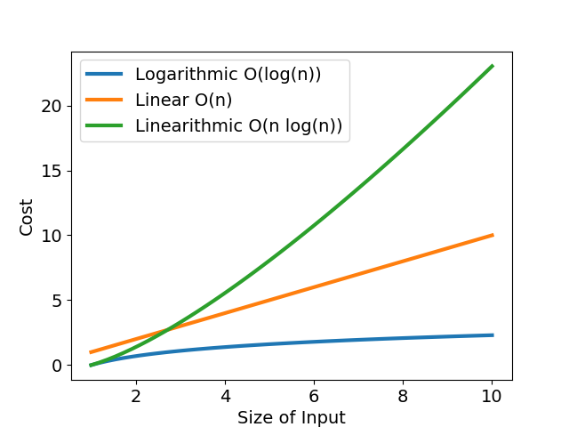
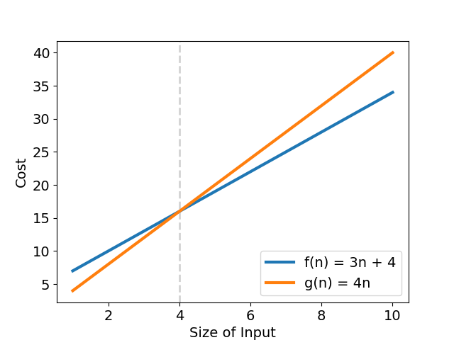
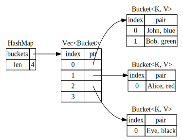
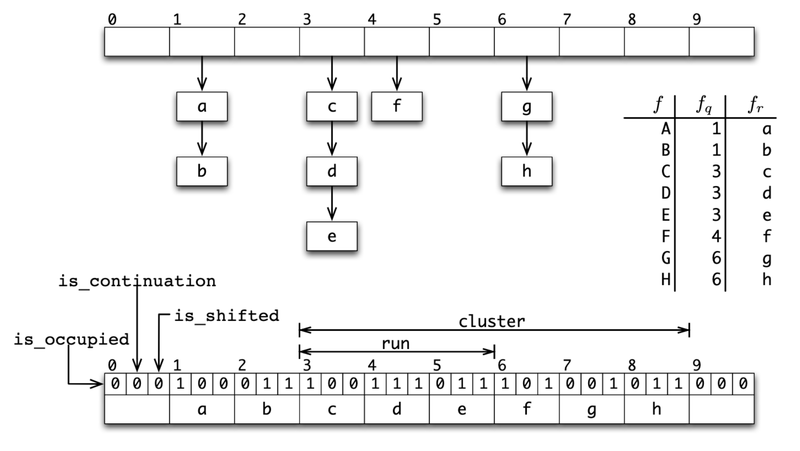
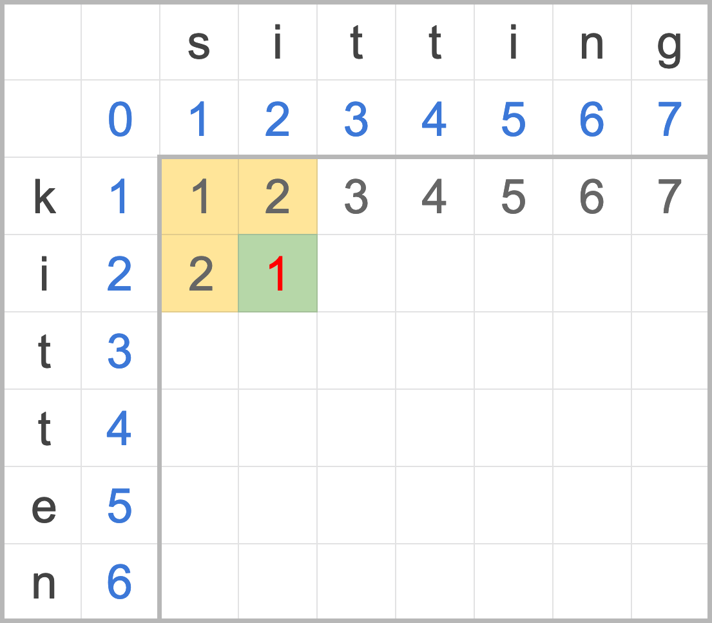

Rust Algorithm Club
歡迎來到 Rust 演算法俱樂部！本專案受 Swift Algorithm Club 啟發，專案中的演算法皆使用 Rust 程式語言撰寫說明與實作！您可以在 Rust Algorithm Club 一站，依您的意願，挑選有興趣的演算法知識學習；若您夠大膽，推薦您閱讀自動生成的 API 文件，直接單挑程式原始碼。
本專案原始碼放在 GitHub 上，非常期待您的貢獻。


基礎概念
演算法
搜尋
排序
簡單排序：
高效排序：
混合排序（更高效）：
特殊排序：
資料結構
堆疊與佇列
鏈結串列
關聯容器
字串處理
學習資源
有許多優秀的網站與學習資源，分享給大家學習演算法。
- VisuAlgo - 也許是最好的演算法視覺化專案。
- Big-O Cheat Sheet - 最全面的 Big O cheat sheet。
- Rosetta Code - 使用各種程式語言，解答上百種不同程式問題。
- Competitive Programmer’s Handbook - 讓你更有競爭力。這書本身也很有競爭力。
如何貢獻
歡迎各式各樣的貢獻，修正錯字也行！開始動手之前，請先閱讀貢獻指南。
貢獻者
授權條款
本專案分為兩部分授權：
- 程式碼與函式庫依據 The MIT License (MIT) 授權條款發佈。
- 文章與相關著作依據 Creative Commons 4.0 (CC BY-NC-SA 4.0) 授權條款發佈。
Copyright © 2017 - 2021 Weihang Lo
漸進符號 Asymptotic Notation
日常生活中，你會如何描述處理事情的效率？
「原來她五分鐘內可以吃掉一頭牛！」
「房間這麼小你還能擺一堆雜物？還不快收拾！」
這些描述方法，著重在處理事情的花費時間，或單位空間內的儲存量。描述演算法的效率也如此，就是「測量演算法的執行成本」，例如這個排序法花了 10 秒鐘跑完兩萬筆資料，或是這個模擬演算法很吃資源需要 32 GB 的記憶體。
然而，在不同的機器規格、環境溫濕度、程式語言、實作方式，以及有沒有放乖乖的變異影響下，相同演算法的執行成本常常不一致。為了消弭這些外部因素，讓分析演算法能夠更科學化。科學家抽絲剝繭，發明一個方法：
「統計演算法內所需操作步驟的數目。」
這是最簡單，最粗淺比較不同演算法效率的作法。
用數學表示演算法效率
「計算步驟數目」很像中小學的數學題目：某公司有三個能力相異的工程師，有的工程師一天解決一個 bug，有的工程師連續工作後效率大幅滑落。每個工程師的除蟲效率可以畫成「bug 數 - 解決 bug 所需時數」函數，橫軸為待處理的臭蟲數，縱軸為解決臭蟲所需時數，如圖一與表所示。
| 時數 | $\log N$ | $N$ | $N \log N$ |
|---|---|---|---|
| $N=5$ | 2.236 | 5 | 8.046 |
| $N=30$ | 5.477 | 30 | 102.036 |

不論從圖或表，我們都可以明確看出，當 bug 數目小時，每個工程師耗時差不多；當 bug 數目成長到一定程度時，效率好與效率差的工程師差距就很明顯了。
我們把場景拉回演算法的範疇，再闡明一次。上述的除蟲效率函數關係，可以簡單視為為「輸入資料量 - 運算成本」關係之函數。例如 $f(x)=x^2+3x+6$。當輸入資料量增大時，成本也隨之上升，這個用來描述演算法執行成本與輸入資料量之關係的函數，我們稱之為該演算法的「複雜度」。
何謂漸進符號
了解每個演算法的時間複雜度之後，就能比較何者效率佳。但往往天不從人願，給了我們兩個演算法進行比較。
$$f(x)=\sqrt{\frac{182777}{286}}\pi x^4+5\log_{3}^{26}88x^3-e^{777^{log_2^9}}$$
$$g(x)=3x^6-2x^2$$
「天啊！這樣要怎麼分析執行效率呀！」
為了有統一的加薪標準，我們不能假定產品只會產生特定數量的臭蟲，也不能以單一天的工作表現判定員工能力，我們知道老舊系統有無限多個 bug，因此，優秀的老闆關心的是工程師長期處理「海量臭蟲」，在極限下的成長趨勢，這些成長趨勢才是衡量 KPI 的關鍵。再次強調，優秀老闆關心如何榨出是工程師的「極限成長趨勢」，而非一時半刻賣弄學識。
同樣地，有太多因素干擾影響一個演算法的複雜度，假使我們只觀察當輸入資料量 $n$ 接近無窮大時，演算法的成長趨勢為何，就很接近所謂漸進符號（asymptotic notation）的定義。漸進符號 只關心演算法在極限下的漸進行為，不同的演算法可能使用相同的漸進符號表示。
我們比較兩個簡單函數，$f(x) = 10x + 29$ 以及 $g(x) = x^2 + 1$。從圖二可以看出一開始 $g(x)$ 的執行時間比 $f(x)$ 多了不少，但隨著輸入資料量 $n$ 增多，$g(x)$ 的執行時間成長愈來愈快速，最後遠遠大於 $f(x)$。

若以 $an^2 + bn + c$ 表示複雜度，就是當存在一個 $a > 0$ 時，一定會有 $n$ 符合 $an^2 > bn + c$，這個差距隨著 $n$ 越大越明顯，這是因為首項（leading term），也就是帶有最高指數的那一項，隨著 輸入大小改變，執行時間變化幅度較大。因此，可捨去複雜度函數中其他較不重要的次項與常數，留下最大次項，「透過簡單的函數來表述函數接近極限的行為」,讓複雜度函數更易理解，這就是「漸進符號」的概念。
這裡介紹常見的幾種漸進符號：
$O$：Big O
當我們談論演算法複雜度時，通常關心的是演算法「最糟糕的情況下」，「最多」需要執行多久。Big O 就是描述演算法複雜度上界的漸進符號，當一個演算法「實際」的複雜度（或執行成本對輸入資料量函數）為 $f(n)$ 時，欲以 Big O 描述其複雜度上界時，必須滿足以下定義：
$$f(n) = O(g(n)) \colon {\exists k>0\ \exists n_0\ \forall n>n_0\ |f(n)| \leq k \cdot g(n)}$$
假設有一演算法實際複雜度為 $f(n) = 3n + 4$，有一組 $k = 4;\ g(n) = n;\ n_0 = 4$ 滿足
$$\forall n > 4,\ 0 \leq f(n) = 3n + 4 \leq 4n$$
意思是「$f(n)$ 的複雜度上界成長趨勢最終不會超過 $g(n) = 4n$ 」，再代入 $O(g(n))$，可得演算法最差複雜度為 $f(n) = O(n)$，也就是「該演算法的成長趨勢不會比 $g(n)$ 來得快」（見圖三）。

再多看一個例子，若 $f(n) = 4n^2 + n$ 有一組 $k = 5;\ g(n) = n^2;\ n_0 = 5$ 滿足
$$\forall n > 5,\ 0 \leq f(n) = 4n^2 + n \leq 5n^2$$
則此函數的複雜度為 $f(n) = O(n^2)$。
注意：也寫作 $f(n) \in O(g(n))$，因為實際上 $O(g(n))$ 是所有可描述演算法成長趨勢，並滿足上述條件的函數之「集合」。
$\Omega$：Big Omega
相較於 Big O 描述演算法成長趨勢的上界，Big Omega 則是對應成長趨勢的「下界」，定義如下：
$$f(n) = \Omega(g(n)) \colon {\exists k>0\ \exists n_0\ \forall n>n_0\ |f(n)| \geq k \cdot g(n)}$$
以 $f(n) = 3n + 4$ 為例，有一組 $k = 2;\ g(n) = n;\ n_0 = 0$ 滿足上式，因此這個演算法在輸入資料夠大時，「至少」會達到 $\Omega(n)$ 的複雜度，也就是「該演算法的成長趨勢不會比 $g(n)$ 來得慢」。
$\Theta$：Big Theta
Big Theta 則是 Big O 與 Big Omega 兩個漸進上下界所夾出的範圍，表示該演算法在輸入資料夠大時，最終的複雜度會成長到這個範圍中。其定義如下：
$$f(n) = \Theta(g(n)) \colon {\exists k_1>0\ \exists k_2>0\ \exists n_0\ \forall n>n_0\ k_1 \cdot g(n) \leq |f(n)| \leq k_2 \cdot g(n)}$$
繼續以 $f(n) = 3n + 4$ 為例，同樣有一組 $k_1 = 1;\ k_2 = 5;\ g(n) = n;\ n_0 = 2$，滿足
$$\forall n \geq 2,\ n \leq f(n) = 3n + 4 \leq 5n$$
可得知，$f(n) = 3n + 4 \in \Theta(n)$，表示「該演算法的成長趨勢與 $g(n) = n$ 相同」（見圖四）。

常見的複雜度
看完了讓人昏昏欲睡的數學定義，現在來認識一些常見的複雜度，從最快最有效率，到最慢最拖台錢的通通一起認識。
- $O(1)$：常數時間，演算法執行時間與資料量毫無瓜葛。例如讀取 array 首個元素。
- $O(\log n)$：執行時間隨資料量呈對數比例成長。常見的例子是二元搜索（Binary search）。
- $O(n)$：執行時間隨資料量呈線性成長，例如在無序的 array 中尋找特定值。
- $O(n \log n)$：執行時間隨資料量呈線性對數成長，常見的合併排序（Mergesort）的複雜度即如斯。
- $O(n^2)$：執行時間隨資料量呈平方成長，例如一些效率不彰的排序法如氣泡排序（Bubble sort）。
- $O(n^3)$：執行時間隨資料量呈立方成長，常見例子為 naïve 實作的矩陣乘法。
- $O(c^n)$：執行時間隨資料量呈指數成長。
- $O(n!)$：執行時間隨資料量呈階乘成長，大部分情況下，這是非常差勁的複雜度。
若想一窺各種常見演算法的複雜度，可以參考這個最全面的 Big-O Cheat Sheet，圖表非常精美直觀！
再次強調，漸進符號也可以代表其他執行成本如記憶體空間，並不一定代表執行時間。
其他的漸進符號還有 little-o、little-omega 等等，有興趣的朋友可以參考文末的資料。
你可能不適合漸進符號
善用漸進符號，可以讓原本複雜艱澀的實際複雜度，簡化至人類容易理解的簡單數學符號，也讓分析演算法效率更為客觀。但實際上，漸進符號省略了常數項與低次項，僅保留最高次項，這種「漸進行為下」的效能表現，在真實世界中，若輸入資料量不夠大，實際複雜度的低次項係數又比高次項大上許多，很可能這個演算法實際上根本沒辦法使用。
另外，漸進符號僅考慮最差與最佳複雜度，沒有考慮到平均複雜度。舉例來說，Quicksort 最差複雜度為 $O(n^2)$，乍看之下不是很理想，但這種情況非常稀少；其平均複雜度落在 $O(n \log n)$，且其係數相對較低，額外開銷少，自然成為最熱門的排序法之一。
還有，漸進符號也沒有考慮到不同語言、平台的基礎操作開銷，例如實作排序法時，有些語言「比較」兩個元素的開銷比「置換」來得大，實作上就需要盡量減少置換元素。同樣的，CPU 快取也非常容易忽略，一些快速的搜尋法很可能因為不是線性搜尋，沒辦法充分利用 CPU cache，效能不一定理想。
總之，漸進符號只能告訴你「當輸入資料量夠大時，演算法的複雜度表現如何」，並不總是適用每個情境，端看你怎麼使用他。
參考資料
- Wiki: Time complexity
- Wiki: Big O notation
- Brilliant: Big O Notation
- Infinite Loop: Complexity Analysis
線性搜尋 Linear Search
線性搜尋，又稱為循序搜尋（sequential search），是一個在序列中找尋目標的方法。正如字面上的意義，線性搜尋會按照順序疊代序列，挨家挨戶比對每個元素與目標值是否相等，若相等則停止疊代，並回傳搜尋所得結果。
線性搜尋乍看之下，是最簡單實作也最 naïve 的實作，效能應該不怎麼好。事實上，在資料量不多時（少於 100 個元素），線性搜尋的效能也不會太差，因為其他搜尋演算法可能需要建立特殊資料結構，就會導致時空間初始開銷暴增，複雜度的常數項成本變大。
效能
| Complexity | |
|---|---|
| Worst | $O(n)$ |
| Best | $O(1)$ |
| Average | $O(n)$ |
| Worst space | $O(1)$ |
若序列中總共有 $n$ 個元素，則線性搜尋最差的狀況為元素不在序列中，就是全部元素都比較一次，共比較 $n - 1$ 次，最差複雜度為 $O(n)$。
實作
線性搜尋就是用一個 for-loop 解決。要注意的是，T 泛型參數至少要實作 PartialEq 才能比較。程式碼中使用了疊代器的 enumerate，建立一個新疊代器，每次疊代產生疊代次數與對應的值。
#![allow(unused)] fn main() { pub fn linear_search<T>(arr: &[T], target: &T) -> Option<usize> where T: PartialEq { for (index, item) in arr.iter().enumerate() { if item == target { return Some(index); } } None } }
事實上，若利用 Rust 內建的 iterator.position，程式碼也許會更簡潔。
#![allow(unused)] fn main() { pub fn linear_search<T>(arr: &[T], obj: &T) -> Option<usize> where T: PartialEq { arr.iter().position(|x| x == obj) } }
參考資料
二元搜尋 Binary Search
Binary search，又稱對數搜尋（logarithmic search），是一個在已排序的序列中，快速找出特定元素的搜尋演算法。二元搜尋的步驟就像玩猜數字，先猜一個數字，告訴你你的猜測比正確答案大或小，再繼續往對的方向猜，捨棄猜錯的另一半。這樣持續進行好幾次猜測，每猜一次，搜尋範圍就縮小一半，因此稱為「二元」搜尋。
二元搜尋有以下幾個特點：
- 概念簡單，搜尋高效，達到對數執行時間 $O(\log n)$。
- 不需額外實作資料結構或配置記憶體空間。
- 只能搜尋已排序的序列。
步驟
- 從序列中間的元素開始，比較其與目標值
- 若該元素為搜尋目標，則結束搜尋。
- 若該元素較大或小，則將序列切一半，往較小或較大的一半搜尋。
- 繼續從一半的序列中間的元素開始，重複步驟一到三，直到欲搜尋的序列為空。
說明
這裡有一個排好序的序列，共有 15 個元素，現在要找尋 9 是否在序列中。
*
[2, 3, 3, 6, 6, 7, 9, 13, 15, 19, 20, 22, 23, 24, 25]
首先，先找到中間的元素 15 / 2 ~= 8，第八個元素為 13，比 9 大，因此捨棄第八個元素之後的所有元素。
*
[2, 3, 3, 6, 6, 7, 9, _, _, _, _, _, _, _, _]
接下來繼續對半搜尋，8 / 2 = 4，找尋第四個元素來比對，6 比 9 小，，因此捨棄第四個元素前的所有元素。
*
[_, _, _, 6, 6, 7, 9, _, _, _, _, _, _, _, _]
對剩下的元素二元搜尋，4 / 2 = 2，並從第四個元素開始計算中點 4 + 2 = 6，取得第六個元素為 7，比 9 小，捨棄 7 之前的元素。
*
[_, _, _, _, _, 7, 9, _, _, _, _, _, _, _, _]
繼續切一半來搜尋，繼續找中間的元素 2 / 2 = 1，並從第六個元素計算索引位置 6 + 1 = 7，查看第七個元素是 9，終於找到了！
效能
| Complexity | |
|---|---|
| Worst | $O(\log n)$ |
| Best | $O(1)$ |
| Average | $O(\log n)$ |
| Worst space | $O(1)$ |
二元搜尋可以透過分治法（Divide and conquer）遞迴求解，而遞迴的終止條件是序列不能在切兩半。由此可知，二元搜尋的複雜度奠基在要切幾次，子序列長度才會等於 1。設 $n$ 為資料數目，$k$ 為要切幾次才會達成終止條件，可得：
$$ \frac{n}{2^k} = 1 $$
接下來同乘 $2^k$ 並取對數。 $$ \frac{n}{2^k} = 1 \\ \Rightarrow 2^k = n \\ $$
再將左式整理一下，得到 $k$。
$$ \log_2 2^k = log_2 n \\ \Rightarrow k \cdot \log_2 2 = log_2 n \\ \Rightarrow k = log_2 n $$
於是，我們得到二元搜尋時間複雜度為 $O(k) = O(\log_2 n) = O(\log n)$。
寫這種式子也許不好理解，我們可以把搜尋過程和每個分支寫成樹狀圖，方便觀察。假設一個數列有七個元素 [1, 2, 3, 4, 5, 6, 7]，其二元搜尋所有可能路徑的樹狀圖如下：
+---+
| 4 |
+---+
/ \
+---+ +---+
| 2 | | 6 |
+---+ +---+
/ \ / \
+---+ +---+ +---+ +---+
| 1 | | 3 | | 5 | | 7 |
+---+ +---+ +---+ +---+
樹中每一條路徑都代表任意搜尋會經過的步驟，總共有 7 種不同的搜尋路徑，最短路徑僅需要 $\lfloor{\log_2 n} = 3 \rfloor$ 個操作，也就是需要執行「樹高」次的操作。
實作
函式宣告
二元搜尋概念看似簡單，實際上誤區一堆，不易寫出完全正確的演算法。我們參考 Rust slice binary_search 的實作。先來看看函式宣告的簽名（function signature）。
#![allow(unused)] fn main() { pub fn binary_search<T>(arr: &[T], target: &T) -> Result<usize, usize> where T: PartialOrd }
二元搜尋函式宣告中，回傳值大概是最特別的部分。如果有找到目標元素，Result 會是 Ok(目標索引位置)，如果沒有找到則回傳 Err(目標值若插入後，不會影響序列排序的位置)。Err 回傳值提供了插入點，非常方便。
再來，T 泛型參數需是 PartialOrd，這是由於二元搜尋使用排序過後的元素，比起線性搜尋，仍需元素之間相互比較。
函式主體
市面上常見的實作通常以兩個變數 l 與 r 記錄搜尋範圍的上下界，而我們另闢蹊徑，記錄了
base：搜尋範圍的下界，size：搜尋範圍的長度。
以下是完整實作：
#![allow(unused)] fn main() { pub fn binary_search<T>(arr: &[T], target: &T) -> Result<usize, usize> where T: PartialOrd { let mut size = arr.len(); // 1 if size == 0 { return Err(0); } let mut base = 0_usize; while size > 1 { // 2 // mid: [base..size) let half = size / 2; // 2.1 let mid = base + half; if arr[mid] <= *target { // 2.2 base = mid } size -= half; // 2.3 } if arr[base] == *target { // 3 Ok(base) } else { Err(base + (arr[base] < *target) as usize) } } }
- 第一部分先取得搜尋範圍
size以及確定下界為0_usize。這裡同時檢查若序列長度為零，直接回傳Err(0)，告知呼叫端可直接在 index 0 新增元素。 - 第二部分就是精髓了，將終止條件設在
size <= 1，以確保迴圈能夠正常結束。- 先將搜尋範圍對半切，再與下界
base相加，算出中點。 - 另中間元素與目標值比較，如果比較小，則移動下界至中點。
- 將
size減半，縮小搜尋範圍。
- 先將搜尋範圍對半切，再與下界
- 到了第三部分，
base已經是切到長度為一的序列了，若匹配目標值就直接回傳；若否，需要傳可供目標值插入的位置，將 bool 判斷是轉型成usize，若arr[base]比目標值小，則目標值要加到其後 +1 位置，反之則加在其前 -1 位置。
常見誤區與解法
-
只適用已排序序列： 這是使用二元搜尋的前提，千萬不能忽略這重要特性，否則後果絕對大錯特錯。
-
處理重複元素：一般的實作通常是回傳任意符合目標值的索引位置，就算有重複的元素，仍然不可預期。若要回傳特定位置（leftmost 或 rightmost），則需特別處理。
-
整數溢位：部分二元搜尋實作會 以兩個變數儲存搜尋範圍上下界的索引位置，而取中點時千萬不可直接將上下界相加再除二，否則很可能整數溢位（integer overflow）。
#![allow(unused)] fn main() { let mid = (end + start) / 2 // Wrong: integer overflow let mid = start + (end - start) / 2 // Correct } -
終止條件錯誤：無論如何實作，請將終止條件設為「搜尋範圍為空」，也就是下界大於上界，而不要只比較上下界是否相等。其實搜尋範圍低於一定長度，即可使用線性搜尋替代，避免處理邊界值的麻煩，實務上也幾乎沒有太多效能損失。
變形與衍生
Interpolation Search
Interpolation search 改良自二元搜尋，差別在於，二元搜尋選擇中間的元素作為二分點，而 interpolation search 人如其名，以內插法找尋二分點。在資料平均分佈時，比二元搜尋更高效。欲知後續，待下回內插搜尋 Interpolation search 分曉。
Exponential Search
Exponential search 是一種特殊的二元搜尋，主要用在搜尋無限、無邊界的已排序序列，由於邊界未知長度就未知，無法以傳統二元搜尋找尋中點。Exponential 顧名思義就是不斷比較在 $2^0$，$2^1$ 直到 $2^n$ 的位置上資料是否比目標值大，若較大，再從該位置執行二元搜尋回頭找。詳情請看指數搜尋 Exponential search。
Binary Insertion Sort
Insertion sort 有一個步驟是在前面已經排完序的資料中，找到適合的地方插入待排序的元素，這部分可透過二元搜尋加快在已排序資料搜尋的速度。詳情請參考 Binary insertion sort。
參考資料
內插搜尋 Interpolation Search
內插搜尋 Interpolation search 為二元搜尋的變種，差別在於二分點的選擇方法，二元搜尋選擇中間的元素作為二分點，而內插搜尋則名副其實，以內插法找尋二分點。內插法有許多種類，本次搜尋演算法選擇使用常見的線性內插（linear interpolation）實作。
內插搜尋的特色如下：
- 資料需要是可計算內插（interpolation）的數值資料。
- 對資料分佈敏感，資料均勻分佈時，效能勝過二元搜尋。
- 資料分佈不均勻時，最差複雜度高達 $O(n)$。
步驟
- 確認資料已經排好序。
- 利用第一個元素 a 與最後的元素 b，以及搜尋上下界 hi 與 lo 位置，作為兩個端點。
- 利用上述兩點 (lo, a) 與 (hi, b)，對搜尋目標計算內插，得到可能的位置。
- 若該位置上元素較小，則令其為新搜尋下界 a’，重複步驟二到三，繼續求內插。
- 若該位置上元素較大，則令其為新搜尋上界 b’，重複步驟二到三，繼續求內插。
- 若相等，則完成搜尋。
- 搜尋停止在 a’、b’ 兩元素搜尋位置重疊，以及目標值比下界 a’ 小或比上界 b’ 大。
說明
迅速說明線性內插法。線性內插法是中學必修的數學概念，給定兩點 $(x_0,y_0)$ 與 $(x_1,y_1)$，欲求在 $[x_0,x_1]$ 區間內直線上 $x’$ 點的 y 值，可以透過斜率公式求解：
$$ \frac{y - y_0}{x’ - x_0} = \frac{y_1 - y_0}{x_1 - x_0 } $$
接下來就是小學解方程式的事兒了。

Cmglee - CC BY-SA 3.0
回到正題，以下用文字解釋內插搜尋。
這裡有一個已排序有 14 個元素的序列，我們需要從中找出 27。
[1, 9, 10, 15, 17, 17, 18, 23, 27, 28, 29, 30, 31, 34]
我們將序列索引當作 x 軸，元素值作為 y 軸。可得已知兩點為 $(0, 1)$ 及 $(13, 34)$。
首先，透過斜率公式，計算出在 $y = 27$ 時，$x’$，也就是 27 在序列中可能的位置為
$$x’ = \lfloor 27 / (34 - 1) \cdot (13 - 0) \rfloor = 10$$
查看 arr[10] 為 29，比搜尋目標 27 來得大。將 29 當作我們新的上界，搜尋範變成第 [0, 9] 個元素（29 不需列入搜尋），繼續計算內插
$$x’ = \lfloor 27 / (28 - 1) \cdot (9 - 0) \rfloor = 9$$
查看 arr[9] 為 28，比搜尋目標 27 來得大。將 28 當作我們新的上界，搜尋範變成第 [0, 8] 個元素（28 不需列入搜尋），繼續計算內插
$$x’ = \lfloor 27 / (27 - 1) \cdot (8 - 0) \rfloor = 8$$
查看 arr[8] 為 27，恰恰是搜尋目標 27，搜尋到此結束。
效能
| Complexity | |
|---|---|
| Worst | $O(n)$ |
| Best | $O(1)$ |
| Average | $O(n)$ |
| Average | $O(\log \log n)$ on uniform distributed data |
| Worst space | $O(1)$ |
$n$：資料筆數
線性內差搜尋的最差時間複雜度為 $O(n)$，也就是每次內差的結果都落在邊界旁，搜尋範圍只縮小一個元素。這種情況容易發生在資料依排序呈指數或對數等非線性函數。例如 $y = 2^x$。
線性內插搜尋對資料的期望是均勻機率分佈（uniform probability distribution）。想求平均時間複雜度 $O(\log \log n)$ ，須先透過機率密度函數，計算條件機率，一步步縮小範圍，求得平均誤差，最後求得期望值。這部分計算較為複雜，有興趣的朋友可以參考閱讀資料「Perl, Y., Itai, A., & Avni, H. (1978). Interpolation search—a log log N search.」。

PDF of uniform distribution by IkamusumeFan - CC BY-SA 3.0
實作
內插搜尋的實作共分為幾部分：
- 處理空序列狀況。
- 建立迴圈疊代共用的變數。
- 計算線性插值的主要迴圈。
- 將內插值映射到結果的
Result。
首先是函式宣告。
#![allow(unused)] fn main() { pub fn interpolation_search( arr: &[i32], target: &i32, ) -> Result<usize, usize> }
映入眼簾的是 i32，而非泛型參數，為什麼呢？是因為內插搜尋為了計算線性內插，資料僅限定在「數值資料」，而 Rust 並沒有特別一類 Numeric 的型別，自己透過 trait 實作又異常繁瑣，因此先以 i32 代替。而回傳值的部分，與指數搜尋／二元搜尋一模一樣，回傳的 Result
- 若為
Ok，其值代表目標值在序列內的索引位置； - 若為
Err，則是可以將目標值插入序列內又不會破壞排序的位置。
延續數值型別的話題，Rust 社群提供 num crate，定義了各種數值型別與 trait，大整數、複數、虛數、有理數都囊括其中，非常有趣。
再來就是第一第二部分，處理空序列與建立共用變數，非常直觀。
#![allow(unused)] fn main() { if arr.is_empty() { return Err(0) } let mut hi = arr.len() - 1; let mut lo = 0_usize; let mut interpolant = 0_usize; }
hi、lo兩個變數劃定的搜尋範圍上下界。interpolant儲存線性插值，代表每次疊代的搜尋位置。
接下來就是主要的迴圈，負責疊代計算內插值。分為三個部分，直接看程式碼先。
#![allow(unused)] fn main() { loop { let lo_val = arr[lo]; let hi_val = arr[hi]; // 1. if hi <= lo || *target < lo_val || *target > hi_val { break } // 2. The linear interpolation part let offset = (*target - lo_val) * (hi - lo) as i32 / (hi_val - lo_val); interpolant = lo + offset as usize; let mid_val = arr[interpolant]; // 3. if mid_val > *target { hi = interpolant - 1; } else if mid_val < *target { lo = interpolant + 1; } else { break } } }
- 迴圈的三個終止條件，分別為：
hi、lo兩個變數劃定的搜尋範圍重疊，長度為零。- 搜尋目標值比上界還大。
- 搜尋目標值比下界還小。
- 線性內插的計算方程式，要注意我們是寫 Rust 不是 JavaScript，
i32與usize不能混用，要手動轉型。 - 比較插值與目標值。相等則跳出迴圈；若目標大於小於插值，則縮小搜尋範圍。注意，範圍需手動加減一，排除上下界，以免無限迴圈產生。
最後一部分則是決定線性插值所得的索引位置是否為目標值，並將該值映射到 Result 上。
#![allow(unused)] fn main() { if *target > arr[hi] { Err(hi + 1) } else if *target < arr[lo] { Err(lo) } else { Ok(interpolant) } }
完整的程式碼如下。
#![allow(unused)] fn main() { pub fn interpolation_search( arr: &[i32], target: &i32, ) -> Result<usize, usize> { // 1. Handle empty sequence. if arr.is_empty() { return Err(0) } // 2. Setup variable storing iteration informaion. let mut hi = arr.len() - 1; let mut lo = 0_usize; let mut interpolant = 0_usize; // 3. Main loop to calculate the interpolant. loop { let lo_val = arr[lo]; let hi_val = arr[hi]; // 3.1. Three condition to exit the loop if hi <= lo || *target < lo_val || *target > hi_val { break } // 3.2. The linear interpolation part let offset = (*target - lo_val) * (hi - lo) as i32 / (hi_val - lo_val); interpolant = lo + offset as usize; let mid_val = arr[interpolant]; // 3.3. Comparison between the interpolant and targert value. if mid_val > *target { hi = interpolant - 1; } else if mid_val < *target { lo = interpolant + 1; } else { break } } // 4. Determine whether the returning interpolant are equal to target value. if *target > arr[hi] { Err(hi + 1) } else if *target < arr[lo] { Err(lo) } else { Ok(interpolant) } } }
變形與衍生
Interpolation Search Tree
Interpolation search tree（IST），姑且稱它「內插搜尋樹」，是一個將內插搜尋結合樹的資料結構。如上述提及，內插搜尋達到 $O(\log \log n)$ 的搜尋時間，但僅適用於均勻機率分佈的資料。而 IST 利用動態內插搜尋，讓 1）內插搜尋樹的搜尋可以使用在更多元的規律機率分佈的資料中，且 2）可以達到以下的執行效能：
- $O(n)$ 空間複雜度。
- 預期有 $O(\log \log n)$ 的平攤增減節點操作時間，最差有 $(O \log n)$。
- 在規律分佈的資料中，預期搜尋時間為 $O(\log \log n)$，最差時間複雜度則為 $O((\log n)^2)$
- 線性時間的循序存取，而取得前後節點或最小值都是常數時間。
更多詳細證明可以閱讀參考資料「Andersson, A. (1996, October). Faster deterministic sorting and searching in linear space」。
參考資料
- Wiki: Interpolation search
- Perl, Y., Itai, A., & Avni, H. (1978). Interpolation search—a log log N search. Communications of the ACM, 21(7), 550-553.
- Andersson, A. (1996, October). Faster deterministic sorting and searching in linear space. In Foundations of Computer Science, 1996. Proceedings., 37th Annual Symposium on (pp. 135-141). IEEE.
- Linear interpolation visualisation SVG By Cmglee CC BY-SA 3.0, via Wikimedia Commons.
- Probability density function of uniform distribution SVG By IkamusumeFan CC BY-SA 3.0, via Wikimedia Commons.
指數搜尋 Exponential Search
指數搜尋，又稱為 galloping search，是一種特殊的二元搜尋，主要用在搜尋無限、無邊界的已排序序列。由於邊界未知長度就未知，無法以傳統二元搜尋來找中點。而 Exponential 顧名思義就是從底數為 2，指數為 0 的索引（$2^0$ ）開始，不斷比較在 $2^1$、$2^2$ 直到 $2^k$ 位置上的值，若比目標值大，則停止指數成長，直接從該位置執行二元搜尋，回頭尋找目標值。
指數搜尋的特點如下：
- 可以搜尋邊界未知的已排序序列。
- 縮小搜尋範圍，可比 naïve 的二元搜尋效率高些。
- 若目標值實際位置很靠近序列前端，效率會非常棒。
步驟
指數搜尋的步驟只有非常簡單的兩步驟：
- 依照目標值大小，劃出搜尋範圍。
- 在上述範圍內執行二元搜尋。
而劃出搜尋範圍這部分也很直觀：
- 選定一個底數 $k$，通常為 2。
- 比較 $k^i$ 索引下的值是否比目標值大，$i$ 從零開始。
- 若較小，指數加一 $k^{i + 1}$ 後繼續重複步驟二比較。
- 若較大，停止比較，得搜尋範圍為 $k^{i - 1}$ 到 $k^i$。
說明
這裡有個排好序的序列，我們要尋找其中是否有 22 這個數字。
*
[2, 3, 3, 6, 6, 7, 9, 13, 15, 19, 20, 22, 23, 24, 25]
首先，先尋找 $2^0 = 1$ 位置上的數字是否超過 22。3 < 22，很明顯沒有。
* * *
[2, 3, 3, 6, 6, 7, 9, 13, 15, 19, 20, 22, 23, 24, 25]
再來，連續看看
- $2^1$：
3 < 22 - $2^2$：
6 < 22 - $2^3$：
15 < 22
也都沒有超越 22。
*
[2, 3, 3, 6, 6, 7, 9, 13, 15, 19, 20, 22, 23, 24, 25] _, _
最後，一口氣將指數加到 4，看看$2^4$ 上的數字是否大於 22。哎呀，$2^4 = 16$，的位置已經超出序列長度，因此取至序列最後一個數字作為比較對象。25 > 22，找到了！
得到搜尋的範圍是 $$2^{4-1} < x < \text{array.length} < 2^{4}$$
效能
| Complexity | |
|---|---|
| Worst | $O(\log i)$ |
| Best | $O(1)$ |
| Average | $O(\log i)$ |
| Worst space | $O(1)$ |
$i$：目標值在序列中實際的索引位置。
指數搜尋的複雜度分為兩部分分析：
劃定搜尋範圍
設 $i$ 為目標值在序列中實際的索引位置，則搜尋上界，指數增加的操作需執行 $\lceil \log(i) \rceil$ 次，例如匹配目標值的搜尋結果位於序列第 9 個，則指數需增加 $\lceil \log(9) \rceil = 4$ 次，上界才會超過目標值。我們設這部分的複雜度為 $O(log i)$。
執行二元搜尋
第二部分就是二元搜尋，複雜度為 $O(log n)$，$n$ 為搜尋範圍的長度。根據第一部分，可以得知範圍長度為 $2^{\log i} - 2^{\log{i - 1}} = 2^{log{i - 1}}$ 個元素，帶入二元搜尋的複雜度，計算出第二部分的複雜度為 $log (2^{\log{i - 1}}) = \log{(i)} - 1 = O(\log i)$。
最後，將兩部分的複雜度合起來，就是指數搜尋的時間複雜度了。
$$O(\log i) + O(\log i) = 2 O(\log i) = O(\log i)$$
實作
本次實作有邊界的指數搜尋，主要分為三個部分：
- 處理空序列的狀況。
- 利用指數，決定搜尋範圍。
- 執行二元搜尋，並將輸出結果映射回原始序列。
話不多說，直接看程式碼。
#![allow(unused)] fn main() { use crate::searching::binary_search; pub fn exponential_search<T>(arr: &[T], target: &T) -> Result<usize, usize> where T: PartialOrd { // 1. Handle empty scenario. let size = arr.len(); if size == 0 { return Err(0); } // 2. Determine searching boundaries. let mut hi = 1_usize; // Upper bound. while hi < size && arr[hi] < *target { hi <<= 1; } let lo = hi >> 1; // Lower bound. // 3. Do binary search. binary_search(&arr[lo..size.min(hi + 1)], target) .map(|index| lo + index) .map_err(|index| lo + index) } }
- 和二元搜尋同，遇到空序列就返回
Err(0)告知呼叫端可新增資料在位置 0。 - 決定搜尋上下界，只要 上界不超過序列長度，且
arr[hi]小於目標值，就讓上界指數成長。這裡用位元左移運算子（bitwise left shift）實作乘以 2。
找到上界後，再將上界除以 2（位元右移），就是下界了。 - 確定範圍後，利用上下界切序列的 sub slice 作為引數，傳遞給二元搜尋。要注意的是，為了避免 sub slice 超出邊界，上界需在
size與hi + 1之間找最小值。
由於回傳結果的位置是以 sub slice 起始，需加上位移量（下界lo）才會對應原始 slice 的位置。
由於內部使用二元搜尋，若該二元搜尋沒有處理重複元素的狀況，指數搜尋連帶無法預期這個行為。
參考資料
插入排序 Insertion Sort
Insertion sort 是最簡單的排序法之一，比起 quicksort 等高效的排序法，對大資料的處理效能較不理想。其演算法是將欲排序元素直接插入正確位置，因而得名。
Insertion sort 基本特性如下：
- 實作簡單易理解。
- 資料量少時較高效，且比其他 $O(n^2) $ 的排序法高效（selection sort/bubble sort）。
- 自適應排序：可根據當前資料排序情形加速排序，資料越接近排序完成，效率越高。
- 穩定排序：相同鍵值的元素，排序後相對位置不改變。
- 原地排序：不需額外花費儲存空間來排序。
- 即時演算法：可處理逐步輸入的資料，不需等資料完全備妥。
步驟
將序列分為未排序與部分排序兩個區域。

- 取第一個元素，將該元素視為已排序。
- 取出下一元素，該元素將插入序列的部分排序區域。
- 尋找正確位置：若部分排序元素比新元素大，則互換位置。並重複步驟 2 - 3，直到部分排序元素小於等於新元素。
- 插入元素：將新元素插入最後的位置。
- 重複步驟 2 - 4，直到排序完成。
簡而言之，即是每次取一個元素，尋找並插入該元素在部分排序區域的排序位置，再逐步把序列單邊排序完成。

Insertion sort 非常簡單，看動畫就能明瞭。

效能
| Complexity | |
|---|---|
| Worst | $O(n^2) $ |
| Best | $O(n) $ |
| Average | $O(n^2) $ |
| Worst space | $O(1) $ auxiliary |
最佳時間複雜度發生在資料已完成排序的狀況下，insertion sort 只需執行最外層的迴圈 $n $ 次。
最差時間複雜度發生在資料完全相反時，insertion sort 每取得一個新元素是，都需將資料插入序列最前面，，因此所需的操作如下（ $c $ 為任意常數）：
$$ c \cdot 1 + c \cdot 2 + c \cdot 3 \cdots + c \cdot (n - 1) = \frac{c(n - 1 + 1)(n - 1)}{2}$$
最後等於
$$\frac{cn^2}{2} - \frac{cn}{2}$$
捨去低次項，得到時間複雜度為 $O(n^2) $。
實作
簡單實作的程式碼如下：
#![allow(unused)] fn main() { pub fn insertion_sort(arr: &mut [i32]) { for i in 1..arr.len() { // 1 let mut j = i; while j > 0 && arr[j - 1] > arr[j] { // 2 arr.swap(j - 1, j); j -= 1; } } } }
- 外層迴圈疊代整個序列。並取出 index
i，arr[i]是待排序的元素，index 比i小的元素則組成已排序的部分序列。 - 內層迴圈負責元素比較，決定待排序元素該從何處插入，若前一個元素比待排元素大，則置換兩元素，並繼續往下尋找正確的插入點。直到
j == 0或待排元素比任何已排序元素都大為止。
變形
Binary Insertion Sort
在一般演算法討論中，通常以簡單的型別如 i32 來探討並實作。在真實世界中，做哪種操作，用哪種語言，都會影響到實際效能。例如 Python 的比較操作相對於置換元素，成本高出不少，是因為每個物件在 Python 的比較需動態檢查是否實作 __lt__ __gt__ 等方法才能進行比較。所以 Python 排序法實作就要特別注意減少比較操作的次數。
Binary insertion sort 的目的就是減少內層迴圈的比較次數。在內層迴圈開始之前，使用 binary search 搜尋新元素應要插入哪個位置，最多僅需 $\log_2n $ 次比較。但 binary insertion sort 的複雜度依舊是 $O(n^2) $，因為除了比較之外，仍需置換（swap）、賦值（assign）等基礎操作。
Binary insertion sort 的程式碼和一般的 insertion sort 差不了多少，我們這裡使用 slice 內建的 binary_search 來找尋插入點。
#![allow(unused)] fn main() { pub fn binary_insertion_sort(arr: &mut [i32]) { for i in 1..arr.len() { let val = arr[i]; let mut j = i; let pos = match arr[..i].binary_search(&val) { // 1 Ok(pos) => pos, // 2 Err(pos) => pos, }; while j > pos { // 3 arr.swap(j - 1, j); j -= 1; } } } }
- 先限制
binary_search範圍，取出 sorted pilearr[..i]。再對 slice 執行binary_search。 binary_search回傳一個Result<usize, usize>型別，找到時回傳Ok(index 值)，找無時回傳Err(不影響排序穩定度的插入點)，這個Err的設計巧妙解決新值插入的問題。- 和普通 insertion sort 雷同，從插入點至 sorted pile 疊代到末端以進行排序，省下不少比較操作。
參考資料
- Wiki: Insertion sort
- CPython: listsort note
- Sorting GIF by Swfung8 (Own work) CC BY-SA 3.0 via Wikimedia Commons.
選擇排序 Selection sort
Selection sort 是最易實作的入門排序法之一，會將資料分為 sorted pile 與 unsorted pile，每次從 unsorted pile 尋找最大／最小值，加入 sorted pile 中。
Selection sort 的特性如下：
- 最簡單的排序法之一。
- 對小資料序列排序效率較高。
- 不穩定排序：排序後，相同鍵值的元素相對位置可能改變。
- 原地排序：不需額外花費儲存空間來排序。
步驟
- 將資料分為 sorted pile 與 unsorted pile。
- 從 unsorted pile 尋找最小值。
- 置換該最小值元素與 unsorted pile 第一個元素。
- 重複步驟 2 - 3，直到排序完成。
注意，這個 naïve 的 selection sort 實作為不穩定排序。

Joestape89 - CC BY-SA 3.0
說明
為什麼 naïve 的 selection sort 會是不穩定排序？
假定有一個序列要遞增排序，其中有重複的 2 元素，我們將其標上 2a、2b 以利辨識。
[2a, 3, 4, 2b, 1]
開始疊代找出最小值並指環。
* *
[1, 3, 4, 2b, 2a] # 1. 置換 2a, 1
* *
[1, 2b, 4, 3, 2a] # 2. 置換 3, 2b
* *
[1, 2b, 2a, 3, 4] # 3. 置換 4, 2a
有沒有發現，2a 與 2b 的相對順序顛倒了呢？
首先，回想一下穩定排序的定義：相同鍵值的元素，排序後相對位置不改變。
問題出在 naïve selection sort 是以置換的方式排序每次疊代的最小值。若我們將置換（swap）改為插入（insert），那麼 selection sort 就會是穩定排序，但相對地，需要位移剩餘未排序的元素，除非使用 linked list 或其他提供 $O(1) $ insertion 的資料結構，不然就會多出額外 $O(n^2) $ 的寫入成本。
效能
| Complexity | |
|---|---|
| Worst | $O(n^2) $ |
| Best | $O(n^2) $ |
| Average | $O(n^2) $ |
| Worst space | $O(1) $ auxiliary |
對於接近排序完成的序列，selector sort 並無法有自適應的方式加快排序疊代。第一個元素要做 $n - 1 $ 次比較，第二個 $n - 2 $ 次，總比較次數如下：
$$ (n -1) + (n-2) + \cdots + 1 = \sum_{i=1}^{n-1} i = \frac{n(n - 1)}{2}$$
因此無論序列是否排序完成，selection sort 仍需執行 $n^2 $ 次比較，時間複雜度為 $O(n^2) $。
實作
簡單實作如下：
#![allow(unused)] fn main() { pub fn selection_sort(arr: &mut [i32]) { let len = arr.len(); for i in 0..len { // 1 let mut temp = i; for j in (i + 1)..len { // 2 if arr[temp] > arr[j] { temp = j; } } arr.swap(i, temp); // 3 } } }
- 外層迴圈負責儲存當前要排序的 index
i的位置。 - 內層迴圈負責在 unsorted pile 範圍 [
i,len) 找最小值。 - 外層迴圈在找到最小值之後，置換兩元素。
眼尖的人會發現，內外兩層迴圈的 upper bound 都是 len，這樣是否內側迴圈會 out of bound？Rust 的 range operator（core::ops::Range）實作 Iterator trait 時，有檢查 range.start < range.end，因此這個寫法並不會有出界問題，但會多跑一次無意義的疊代。
變形
Heapsort
Heapsort 是一個高效的排序法，使用 selection sort 融合 heap 這種半排序的資料結構，讓時間複雜度進化至 $O(n \log n) $。更多詳情可以參考這篇介紹。
參考資料
- Wiki: Selection sort
- Why Selection sort can be stable or unstable
- Sorting GIF by Joestape89 CC BY-SA-3.0 via Wikimedia Commons.
氣泡排序 Bubble sort
Bubble sort 是最簡單的排序法之一，由於排序時每個元素會如同泡泡般，一個一個浮出序列頂部，因而得名。由於其簡單好理解，名稱又有趣，常作為第一個學習的入門排序法。不過其效率不彰，甚至不如同為 quardratic time 的 insertion sort。Bubble sort 的原理很平凡，就是相鄰兩兩元素互相比較，如果大小順序錯了，就置換位置。再往下一個 pair 比較。
Bubble sort 的特性如下：
- 又稱為 sinking sort。
- 穩定排序：相同鍵值的元素，排序後相對位置不改變。
- 原地排序：不需額外花費儲存空間來排序。
步驟
- 比較兩個相鄰元素，若首個元素比次個元素大，置換兩者的位置。
- 依序對相鄰元素執行步驟一，直到抵達序列頂端，此時頂端元素排序完成。
- 重複步驟 1 - 2 的整個序列疊代，直到任何一次疊代沒有執行元素置換。
 Swfung8 - CC BY-SA 3.0
Swfung8 - CC BY-SA 3.0
說明
給定一組序列 [5, 3, 8, 7, 2]，以 bubble sort 遞增排序。以 ASCII diagram 表示：
第一次疊代
* * * *
[5, 3, 8, 7, 4] -> [3, 5, 8, 7, 4] # 置換 3 與 5
* * * *
[3, 5, 8, 7, 4] -> [3, 5, 8, 7, 4] # 不需置換
* * * *
[3, 5, 8, 7, 4] -> [3, 5, 7, 8, 4] # 置換 7 與 8
* * * *
[3, 5, 7, 8, 4] -> [3, 5, 7, 4, 8] # 置換 4 與 8，8 已排好序
第二次疊代
* * * *
[3, 5, 7, 4, 8] -> [3, 5, 7, 4, 8] # 不需置換
* * * *
[3, 5, 7, 4, 8] -> [3, 5, 7, 4, 8] # 不需置換
* * * *
[3, 5, 7, 4, 8] -> [3, 5, 4, 7, 8] # 置換 4 與 7
* * * *
[3, 5, 4, 7, 8] -> [3, 5, 4, 7, 8] # 不需置換
naïve bubble sort 會跑完整個序列，即是已排序完成。
第三次疊代
* * * *
[3, 5, 4, 7, 8] -> [3, 5, 4, 7, 8] # 不需置換
* * * *
[3, 5, 4, 7, 8] -> [3, 4, 5, 7, 8] # 置換 4 與 5
* * * *
[3, 5, 4, 7, 8] -> [3, 4, 5, 7, 8] # 不需置換
* * * *
[3, 5, 4, 7, 8] -> [3, 4, 5, 7, 8] # 不需置換
第四次疊代
* * * *
[3, 4, 5, 7, 8] -> [3, 4, 5, 7, 8] # 不需置換
* * * *
[3, 4, 5, 7, 8] -> [3, 4, 5, 7, 8] # 不需置換
* * * *
[3, 4, 5, 7, 8] -> [3, 4, 5, 7, 8] # 不需置換
* * * *
[3, 4, 5, 7, 8] -> [3, 4, 5, 7, 8] # 不需置換
很簡單的排序法！
效能
| Complexity | |
|---|---|
| Worst | $O(n^2) $ |
| Best | $O(n) $ |
| Average | $O(n^2) $ |
| Worst space | $O(1) $ auxiliary |
Time complexity
Bubble sort 總共需要 $n - 1 $ 次疊代，每次疊代至少需要執行 $n - 1 - i $ 置換（ $i $ 為第幾次疊代），總共需要疊代
$$\sum_{i=0}^{n-1} (n - i - 1) = n^2 - \sum_{i=0}^{n-1}i - n = n^2 - \frac{n(n - 1)}{2} - n = \frac{n^2}{2} - \frac{n}{2}$$
次，因此，時間複雜度為 $O(n^2) $。
Bubble sort 在已排序完成的序列上，只需要疊代序列一次，發現完全沒有置換任何元素，即停止排序，可達到最佳時間複雜度。
實作
Bubble sort 簡單實作如下：
#![allow(unused)] fn main() { pub fn bubble_sort(arr: &mut [i32]) { let mut swapped = true; // 1 while swapped { swapped = false; for i in 1..arr.len() { // 2 if arr[i - 1] > arr[i] { arr.swap(i - 1, i); swapped = true // 3 } } } } }
- 建立一個旗標，標誌該次疊代是否有元素置換。
- 內層迴圈依序比較兩兩相鄰元素。
- 若有任何置換動作，將旗標標誌為「已置換（
true）」。
倘若記錄已排好序的元素位置，雖然複雜度仍是 $O(n^2) $，但如此以來，每次疊代都可少一次元素比較，對比較操作成本高的語言或實作來說，仍不失為最佳化的方法。程式碼如下：
#![allow(unused)] fn main() { pub fn bubble_sort_optimized(arr: &mut [i32]) { let mut new_len: usize; let mut len = arr.len(); // 1 loop { new_len = 0; for i in 1..len { if arr[i - 1] > arr[i] { arr.swap(i - 1, i); new_len = i; // 2 } } if new_len == 0 { // 3 break; } len = new_len; // 4 } } }
- 將當前的序列長度記錄到
len。 - 內層迴圈負責比較、置換，以及記錄未排序部分的序列長度到
new_len。 - 若未排序部分
new_len為零，代表排序完成。 - 外層迴圈將新長度值
new_len賦予len，下一次疊代就可少做一次比較。
參考資料
- Wiki: Bubble sort
- Sorting GIF was created by Swfung8 (Own work) CC BY-SA 3.0 via Wikimedia Commons.
希爾排序 Shellsort
眾所周知，Insertion sort 用在幾乎完成排序的序列上非常高效，換句話說，當元素置換不需移動太遠時，效率很高。反之，如果有元素錯位非常遙遠，效能就會大打折扣。Shellsort 以一個 gap sequence 將資料依指定的間隔（gap）分組進行 insertion sort，使得較遠的元素能夠快速歸位，下一次的排序就會因前次排序結果愈來愈接近完成而加速。
Shellsort 最後一個 gap 必定是 1，也就是排序會退化成 insertion sort，此時大部分元素皆排序完成，insertion sort 會非常高效。
Shellsort 特性如下：
- 自適應排序：可根據當前資料排序情形加速排序，資料越接近排序完成，效率越高。
- 不穩定排序：排序後，相同鍵值的元素相對位置可能改變。
- 原地排序：不需額外花費儲存空間來排序。
- 可視為一般化（Generalizaion）的 insertion sort。
步驟
Shellsort 分為兩個步驟：
- 決定一組 gap sequence。
- 疊代 gap sequence 進行分組排序，每次執行有間隔的 insertion sort。也就是每個元素與其相鄰 gap 的元素比較與置換。
最後一次排序（gap = 1）會退化為 insertion sort，完成整個排序。
Gap Sequneces
Shellsort 的效率取決於 gap sequence 的選擇，這邊舉幾個常見的 gap sequence：
| Sequence | |
|---|---|
| Marcin Ciura | 1, 4, 10, 23, 57, 132, 301, 701 |
| $2^{k} - 1 $ | 1, 3, 7, 15, 31, 63,... |
| $\lfloor {\frac {N}{2^k}} \rfloor $ | $\lfloor {\frac {N}{2}} \rfloor $, $\lfloor {\frac {N}{4}} \rfloor $, ..., 1 |
感受一下 gap sequence 為 23, 10, 4, 1 的 shellsort 吧。

說明
Shellsort 其實就是進行好幾次不同 gap 的 insertion sort，以下用 ASCII diagram 解釋。
假定這裡有一個序列需要遞增排序。
[5, 3, 8, 7, 4, 9, 6, 2]
我們選擇最簡單的 $\lfloor {\frac {N}{2^k}} \rfloor $ gap sequence 來排序。我們以星號標示出每次 insertion sort 對應排序
首先算出第一個 gap 為 $8 / 2^1 = 4 $。開始 insertion sort。
* *
[5, 3, 8, 7, 4, 9, 6, 2]
-> (sort subsequence [5, 4])
* *
[4, 3, 8, 7, 5, 9, 6, 2]
-> (skip)
* *
[4, 3, 8, 7, 5, 9, 6, 2]
-> (sort subsequence [8, 6])
* *
[4, 3, 6, 7, 5, 9, 8, 2]
-> (sort subsequence [7, 2])
[4, 3, 8, 2, 5, 9, 6, 7]
再來算出第二個 gap 為 $8 / 2^2 = 2 $。開始 insertion sort。
* *
[4, 3, 8, 2, 5, 9, 6, 7]
-> (skip)
* *
[4, 3, 8, 2, 5, 9, 6, 7]
-> (sort subsequence [3, 2])
* * *
[4, 2, 8, 3, 5, 9, 6, 7]
-> (sort subsequence [4, 8, 5])
* * *
[4, 2, 5, 3, 8, 9, 6, 7]
-> (skip)
* * * *
[4, 2, 5, 3, 8, 9, 6, 7]
-> (sort subsequence [4, 5, 8, 6])
* * * *
[4, 2, 5, 3, 6, 9, 8, 7]
-> (sort subsequence [2, 3, 9, 7])
[4, 2, 5, 3, 6, 7, 8, 9]
再來進行第三次排序。gap 為 $8 / 2^3 = 1 $，shellsort 退化至 insertion sort，但前一次結果已經很接近排序完成，insertion sort 可以幾乎在 one pass 完成排序。
Insertion sort 的 ASCII diagram 我們就不展示了，請參考 Insertion sort。
效能
| Complexity | |
|---|---|
| Worst | $O(n^2) $ ~ $O(n \log^2 n) $ (Depends on gap sequence) |
| Best | $O(n \log n) $ |
| Average | Depends on gap sequence |
| Worst space | $O(1) $ auxiliary |
Shellsort 的複雜度不容易計算，取決於 gap sequence 怎麼安排，太少 gap 會讓速度太接近 insertion sort，太多 gap 則會有過多額外開銷。目前已知的 gap sequence 中，最差時間複雜度可以達到 $O(n \log^2 n) $，有著不錯的表現。有興趣可以參考這篇文章。
實作
我們這裡以 Marcin 的 Paper 中提到的經驗式為例，首先，先建立一個 gap sequence 的常數。
#![allow(unused)] fn main() { /// Marcin Ciura's gap sequence. pub const MARCIN_GAPS: [usize; 8] = [701, 301, 132, 57, 23, 10, 4, 1]; }
再來就是主程式的部分，總共會有三個迴圈，
- 最外層是疊代 gap sequence，
- 中間層是疊代整個資料序列，
- 內層就是每個元素的插入排序動作。
#![allow(unused)] fn main() { /// Shellsort pub fn shellsort(arr: &mut [i32]) { let len = arr.len(); for gap in MARCIN_GAPS.iter() { // 1 let mut i = *gap; // 4 while i < len { // 2 let mut j = i; while j >= *gap && arr[j - gap] > arr[j] { // 3 arr.swap(j - *gap, j); j -= *gap; } i += 1; } } } }
- 最外層的迴圈，利用
iter()trait 產生疊代器，疊代 gap sequence。 - 中間層迴圈，控制
i是否超出資料序列，以疊代整合資料序列。 - 最內層迴圈，執行插入動作，將每個元素置換到正確位置。
- 由於
gap的型別是&usize，需透過*gapdereference 得到usize型別。
參考資料
- Wiki: Shellsort
- Best Increments for the Average Case of Shellsort, M. Ciura, 2001
- Shellsort and Sorting Networks (Outstanding Dissertations in the Computer Sciences)
堆積排序 Heapsort
Heapsort（堆積排序）可以看作是 selection sort 的變形，同樣會將資料分為 sorted pile 與 unsorted pile，並在 unsorted pile 中尋找最大值（或最小值），加入 sorted pile 中。
和 selection sort 不同之處是，heapsort 利用堆積（heap）這種半排序（partially sorted）的資料結構輔助並加速排序。
Heapsort 的特性如下：
- 使用 heap 資料結構輔助，通常使用 binary heap。
- 不穩定排序：排序後，相同鍵值的元素相對位置可能改變。
- 原地排序：不需額外花費儲存空間來排序。
- 較差的 CPU 快取：heap 不連續存取位址的特性，不利於 CPU 快取。
步驟
Heapsort 的演算法分為兩大步驟：
- 將資料轉換為 heap 資料結構（遞增排序用 max-heap, 遞減排序選擇 min-heap）。
- 逐步取出最大／最小值，並與最後一個元素置換。具體步驟如下：
- 交換 heap 的 root 與最後一個 node，縮小 heap 的範圍（排序一筆資料，故 heap 長度 -1）。
- 更新剩下的資料，使其滿足 heap 的特性，稱為 heap ordering property。
- 重複前兩個步驟，直到 heap 中剩最後一個未排序的資料。
透過 GIF 動畫感受一下 heapsort 的威力吧！

說明
在開始之前，定義幾個 heap 常用名詞：
- Heap ordering property：一個 heap 必須要滿足的條件。以 heap 種類不同有幾種變形。
- min-heap property：每個結點皆大於等於其父節點的值，且最小值在 heap root。
- max-heap property：每個結點皆小於等於其父節點的值，且最大值在 heap root。
而 heapsort 主要分為兩個部分：
- Heapify：將陣列轉換為 heap 資料結構（heapify）。
- Sorting：不斷置換 heap root 與最後一個元素來排序，並修正剩餘未排序資料使其符合 heap order。
這裡有一個未排序的序列，將以遞增方向排序之。
[17, 20, 2, 1, 3, 21]
首先，將資料轉換為 heap 資料結構，這個步驟即時 heapify。由於是遞增排序，我們採用 max-heap（最大元素在 root）。
[21, 20, 17, 1, 3, 2]
對應的二元樹（binary tree）的圖形如下：

再來就是排序的部分，Max-heap 會將最大的元素擺在 root 的位置，我們先將最後一個 node 與 root 進行交換，完成第一個排序步驟。
若不熟悉 heap，可以閱讀 Wiki 的介紹，其實 heap 就是用陣列實作的二元樹。
[21, 20, 17, 1, 3, 2]
* *
(swap) -->
unsorted | sorted
[2, 20, 17, 1, 3 | 21]
接下來，將未排序的資料區塊重整為符合 max-heap 的結構。
[2, 20, 17, 1, 3 | 21]
(sift down) -->
[20, 3, 17, 1, 2 | 21]
有沒有看出一些端倪？
只要不斷將 root 和最後一個 node 交換，並將剩餘資料修正至滿足 heap ordering，就完成排序了。
[20, 3, 17, 1, 2 | 21]
* *
(swap) -->
[2, 3, 17, 1 | 20, 21]
(sift down)-->
[17, 3, 2, 1 | 20, 21]
* *
(swap) -->
[1, 3, 2 | 17, 20, 21]
(sift down)-->
[3, 1, 2 | 17, 20, 21]
* *
(swap) -->
[1, 2 | 3, 17, 20, 21]
(Done!)
以上便是 heapsort 演算法的簡單流程，是不是和 selection sort 非常相似呢！
效能
| Complexity | |
|---|---|
| Worst | $O(n \log n) $ |
| Best | $O(n \log n) $ |
| Average | $O(n \log n) $ |
| Worst space | $O(1) $ auxiliary |
Heapsort 最佳、最差、平均的時間複雜度皆為 $O(n \log n) $，同樣分為兩部分簡單解釋。
Build heap (heapify)
建立一個 binary heap 有兩種方法，一種是一個個元素慢慢加入 heap 來建立；另一種則是給定隨意的序列，再透過 heapify 演算法修正序列為有效的 heap。一般來說 heapsort 常用實作後者。
Heapify 是指將序列修正至符合 heap ordering 的序列。給定一個元素，假定其為非法的 heap order，而該元素之後的 subtree 視為符合 heap ordering property。欲修正這個在錯誤位置的元素，必須透過與其 children node 置換往下篩，這個往下篩的過程就稱為 sift down，在實作一節會詳細解釋，這邊只要知道 sift down 會不斷將該元素與其 child node 比較，若不符合 heap order 則與 child node 置換，並繼續疊代每一個 level。所以 sift down 的時間複雜度為 $O(\lceil {\log_2(n)} \rceil) = O(\log n) $， $n $ 為陣列元素個數。
Heapify 從最末個元素開始反向疊代，每個元素都呼叫 sift_down 調整 heap 符合 heap ordering。總共要做 $n $ 次 sift_down 操作，但由於最後一層所以 leaf 已符合 heap order（因為沒有 child node），我們的迴圈可以跳過所有 leaf node 直接從非 leaf node 開始，因此複雜度為
$$\lfloor n / 2 \rfloor \cdot O(\log n) = O(n \log n)$$
實際上，build heap 步驟的複雜度可達到 $O(n) $，可以看看 UMD 演算法課程 Lecture note 的分析。
Sorting (sift down)
講完了 heapify，就換到排序部分，所謂的排序其實就是利用 max-heap（或 min-heap）的最大值（最小值）會在首個元素的特性，與最後一個元素置換，完成排序，並將剩餘的部分透過 sift down 修正符合 heap order。所以總共需要做 $n $ 次 sift down，複雜度為 $O(n \log n) $。
Sum up
綜合這兩部分，可以看出 Sorting part 對複雜度有決定性影響，最佳複雜度為 $O(n \log n) $。
實作
Heapsort 的實作相對簡單，只需要不斷呼叫 heap 內部的 sift_down 方法就可以完成排序。整個演算法架構如下：
#![allow(unused)] fn main() { pub fn heapsort(arr: &mut [i32]) { // -- Heapify part -- // This procedure would build a valid max-heap. // (or min-heap for sorting descendantly) let end = arr.len(); for start in (0..end / 2).rev() { // 1 sift_down(arr, start, end - 1); } // -- Sorting part -- // Iteratively sift down unsorted part (the heap). for end in (1..arr.len()).rev() { // 2 arr.swap(end, 0); // 3 sift_down(arr, 0, end - 1); // 4 } } }
- 這部分是 heapify，從最小 non-leaf node 開始（
end/ 2），修正序列至滿足 heap order，再反向疊代做 heapify。 - 這部分負責排序，每次疊代都將排序 heap 的 root 元素，步驟如 3 - 4：
- 不斷將 max-heap 中最大值（在 root 上）與 heap 最後一個元素
end置換， - 並利用
sift_down將序列修正至 max-heap 資料結構，依照定義，此時 unsorted pile 首個元素成為 max-heap root，是最大值。
Heapsort 全靠 sift_down 神救援，那 sift_down 到底有什麼神奇魔力，一探究竟吧！
#![allow(unused)] fn main() { fn sift_down(arr: &mut [i32], start: usize, end: usize) { let mut root = start; loop { let mut child = root * 2 + 1; // Get the left child // 1 if child > end { break; } if child + 1 <= end && arr[child] < arr[child + 1] { // 2 // Right child exists and is greater. child += 1; } if arr[root] < arr[child] { // 3 // If child is greater than root, swap'em! arr.swap(root, child); root = child; } else { break; } } } }
sift_down 的功能是將 node 往下移。通常用在 heap 刪除或取代 node 時，將序列修正為有效的 heap。 這裡實作的版本有三個參數：
arr：欲修正為符合 heap 定義的序列。start：欲往下移動的 node index，可視為需要被修正的元素。end：此 node 以內（包含）的序列都會被修正為有效的 heap。
sift_down 有些假設條件：從 start index 出發的子樹，除了 start 本身以外，其他皆符合 heap ordering。
再來看看 sift_down 實作內容，loop 中幹的活就是不斷將 start index 上的元素與其子樹比較，若不符合 heap ordering，則兩者置換。
- 是否有子結點：依照 binary heap 的定義找出 root 的左子樹（left substree），若左子樹的 index
child比end還大，表示沒有 heap 沒有子結點，停止疊代。 - 檢查右子樹值較大：若 root 下有右子樹且較大，我們會標記右子樹，並在下一步對右子樹進行處理。
- 置換：若
root元素比child的元素小，則置換兩者，並將child設置為下個疊代的root，繼續檢查最初的start元素是否滿足 heap ordering。
以上就是簡單的 sift_down 實作，也是整個 heapsort 的精髓。
參考資料
- Wiki: Heap
- Wiki: Heapsort
- CMSC 351 Algorithms, Fall, 2011, University of Maryland.
- Sorting GIF by RolandH CC BY-SA-3.0 via Wikimedia Commons.
快速排序 Quicksort
Quicksort 是一個非常熱門且應用廣泛的排序法，相對簡單的實作就可達到 $O(n \log n) $ 的平均時間複雜度。雖然最差時間複雜度與 bubble sort 同為 $O(n^2) $，但這種情形非常少見。簡單的最佳化實作下，Quicksort 僅需 $O(\log n) $ 的額外儲存空間，比它的競爭對手 mergesort 來得節省。非常適合運用在真實世界中的排序法。
Quicksort 基本特性如下：
- 實作簡單，速度快。
- 不穩定排序：排序後，相同鍵值的元素相對位置可能改變。
- 非原地排序：除了資料本身，仍需額外花費儲存空間來排序。
- 分治演算法：將主問題化作數個子問題，各個擊破。
步驟
Quicksort 是一個分治演算法（divide-and-conquer），不斷遞迴下列三個步驟：
- 選擇 Pivot：在序列中任意選擇一個元素，稱為 Pivot。
- 分割序列：將序列重新排序，分為兩部分，比 pivot 小 的元素置換到 pivot 之前，比 pivot 大的元素置換到 pivot 之後，而 pivot 本身會座落在它最終的正確位置。
- 遞迴：分別將「比 pivot 小」及「比 pivot 大」兩部分重複上述步驟，直到新序列的長度小於等於 1，無法繼續分割為止，此時排序完成。
Lomuto partition scheme
為了達成上述條件，Quicksort 有許多不同的分割序列實作方案（partition scheme），其中以 Lomuto partition 最易理解，常被做為教材。
- 以序列最後一個元素當做 pivot。
- 利用兩個指標
ij，其中j從頭疊代整個序列- 若有序列第 j 個元素小於 pivot，則與第 i 個元素置換。
- 第 i 個元素已落在小於 pivot 的範圍，將 i 指標往後移一個，處理下個元素。
- 疊代完成後，小於 pivot 的元素全都置換至序列前端，此時將 pivot 與第 i 個元素置換，pivot 會剛好在最終正確位置上（符合不等式）。
ASCII 畫出來的分割圖如下：
[ values <= pivot | values > pivot | not checked yet | pivot ]
low i i+1 j-1 j high-1 high
arr[low...i]包含所有小於等於 pivot 的元素。arr[i+1...j-1]包含所有大於 pivot 的元素。arr[j...high-1]包含所有尚未疊代的元素。arr[high]pivot 本身。
說明
以 Lomuto partition scheme 為例，使用 ASCII diagram 解釋。
給定一個序列，並選擇最後一個元素作為 pivot，i j 指標則在第一個元素位置。
* -> pivot
[17, 20, 2, 1, 3, 21, 8]
i
j
第 j 個元素 17 大於 pivot 8，不置換。
17 > 8, no swap
* -> pivot
[17| 20, 2, 1, 3, 21, 8]
i
j
第 j 個元素 20 大於 pivot 8，不置換。
20 > 8, no swap
* -> pivot
[17, 20| 2, 1, 3, 21, 8]
i
j
第 j 個元素 2 小於 pivot 8，置換 i j。i 往後一個位置。
2 <= 8,
swap i, j
* -> pivot
[2, 20, 17| 1, 3, 21, 8]
i->i
j
第 j 個元素 1 小於 pivot 8，置換 i j。i 往後一個位置。
1 <= 8
swap i, j
* -> pivot
[2, 1, 17, 20| 3, 21, 8]
i->i
j
第 j 個元素 3 小於 pivot 8，置換 i j。i 往後一個位置。
3 <= 8
swap i, j
* -> pivot
[2, 1, 3, 20, 17| 21, 8]
i->i
j
第 j 個元素 21 大於 pivot 8，不置換。
21 > 8, no swap
* -> pivot
[2, 1, 3, 20, 17, 21| 8]
i
j
最後，將 pivot 與第 i 個元素置換，此時 pivot 已在最終位置上，前面的元素皆小於等於 8，其後的元素皆大於 8。
swap pivot, i
i <-> * -> pivot
[2, 1, 3, 8, 17, 21, 20]
這樣就完成一次的 partition 了！
之後再遞迴分割 subarray 即可完成 Quicksort。
[2, 1, 3, 8, 17, 21, 20]
# # * *
| | | |
------- ---------
quicksort quicksort
效能
| Complexity | |
|---|---|
| Worst | $O(n^2) $ |
| Best | $O(n \log n) $ |
| Average | $O(n \log n) $ |
| Worst space | $O(\log n) $ or $O(n) $ auxiliary |
Time complexity
Quicksort 僅有「選擇 Pivot」與「分割序列」兩步驟，不同的實作的效能各異，也影響 Quicksort 的時間複雜度。
最差情況
最差的分割序列狀況發生在挑選的 pivot 總是最大或最小值（或在 Lomuto partition 下，所有元素值都一樣）。由於 Lomuto 總是選擇最後一個元素作為 pivot，這種情形好發於已排序或接近排序完成的資料上。
而當每次的 partition 都是最不平衡的分割序列，就會產生最差時間複雜度的狀況。遞迴在序列長度等於 1 時停止，因此整個排序法的 call stack 需要 $n - 1 $ 的嵌套遞迴呼叫（nested call）；而第 $i $ 次分割會執行 $n - i $ 次基本操作（ $O(n) $），所以總共需執行
$$\sum_{i = 0}^n (n - i) = n^2 - \frac{n(n + 1)}{2}$$
次基本操作，最差時間複雜度為 $O(n^2) $。
最佳情況
既然最差情況發生在 pivot 總選到最大或最小值，反之，最佳情況則發生在每次 pivot 都可以順利選到序列的中位數（median），如此一來，每次遞迴分割的序列長度都會減半（ $n / 2 $），call stack 的嵌套遞迴總共需要 $2 \log_2{n} $ 次，序列的長度就會減至 1，而每次分割同樣有 $O(n) $ 的複雜度，因此最佳情況為：
$$O(n \cdot 2 \log_2{n}) = O(n \log n)$$
Space complexity
Quicksort 的空間複雜度取決於實作細節，由於分割序列步驟需 $O(1) $ 的空間複雜度，因此僅需分析遞迴式會在 call stack 產生多少 stack frame 即可。
前面提及，最 naïve 的 Lomuto partition 最糟糕的情形下，會產生 $n - 1 $ 個嵌套遞迴，也就是需額外使用 $O(n) $ 的空間儲存 call stack frame，但只要 compiler 有支援尾端呼叫最佳化（tail-call optimization，TCO），Quicksort 很容易最佳化至 $O(\log n) $。
實作
Quicksort 實作主要分為兩部分：遞迴，以及分割序列（partition）。
Recursion
遞迴函式本身實作非常簡單，分別將小於 pivot 與大於 pivot 兩部分遞迴呼叫自身即可。
#![allow(unused)] fn main() { /// Recursion helper fn quicksort_helper(arr: &mut [i32], lo: isize, hi: isize) { if lo <= hi { // 1 let pivot = partition(arr, lo, hi); // 2 quicksort_helper(arr, lo, pivot - 1); // 3 quicksort_helper(arr, pivot + 1, hi); // 4 } } }
- 利用
lo與hi兩個指標決定每次的遞迴範圍，並在lo大於hi時停止遞迴，避免重複分割序列。 - 分割序列步驟，回傳該序列範圍內 pivot 的 index。
- 遞迴小於 pivot 的部分。
- 遞迴大於 pivot 的部分。
這邊比較特別的是，
lo和hi兩個指標的型別為isize，因為當 pivot 可能為 0，在第三步驟 - 1 時會產生型別錯誤，故為之。有任何更好的寫法歡迎提供！
由於外部不需知道排序法實作細節，我們將函式命名為 quicksort_helper ，對外再多封裝一層主函式 quicksort_lomuto，實作如下：
#![allow(unused)] fn main() { pub fn quicksort_lomuto(arr: &mut [i32]) { let hi = arr.len() as isize - 1; quicksort_helper(arr, 0, hi); } }
Partitioning
一般來說，分割序列的實作有下列兩個步驟：
- 選擇 pivot
- 遍歷序列置換元素
我們以 Lomuto scheme 實作 partition。
#![allow(unused)] fn main() { fn partition(arr: &mut [i32], lo: isize, hi: isize) -> isize { // -- Determine the pivot -- // In Lomuto parition scheme, // the latest element is always chosen as the pivot. let pivot = arr[hi as usize]; // 1 let mut i = lo; // -- Swap elements -- for j in lo..hi { // 2 if arr[j as usize] < pivot { arr.swap(i as usize, j as usize); i += 1; // 3 } } // Swap pivot to the middle of two piles. arr.swap(i as usize, hi as usize); // 4 i // Return the final index of the pivot } }
- Lomuto scheme 選擇 pivot 的方式很直接，就是選擇最後一個元素。
- 利用
i、j兩個指標疊代指定的序列範圍，若第 j 個值小於 pivot 時，則於第 i 個元素置換。 i指標加一，繼續處理下個元素。- 最後置換第 i 個元素於 pivot，此時 pivot 已落在最終正確的位置。
最佳化與變形
Quicksort 有數個方向可以探討最佳化：
降低額外空間複雜度
前述提到最佳情形下（每次 pivot 都選到中位數），僅需 $\log n $ 個嵌套遞迴，額外空間複雜度僅需 $O(\log n) $。 倘若編譯器有實作 尾端呼叫最佳化，Quicksort 可以達到 $O(\log n) $ 對數級別的額外空間使用。
實作尾端呼叫最佳化的思路很簡單，「先遞迴較少元素的部分，再利用 tall-call 遞迴另一部分」，如此以來，較多元素的遞迴則會直接被編譯器展開，消去遞迴時需要的 call stack 空間。剩下較少元素的部分，則與最佳情形相同，最多僅需 $\log n $ 次嵌套遞迴。
簡單實作如下：
#![allow(unused)] fn main() { fn quicksort_helper_optimized(arr: &mut [i32], lo: isize, hi: isize) { if lo <= hi { let pivot = partition(arr, lo, hi); if pivot - lo < hi - pivot { // 1 quicksort_helper_optimized(arr, lo, pivot - 1); quicksort_helper_optimized(arr, pivot + 1, hi); // 2 } else { quicksort_helper_optimized(arr, pivot + 1, hi); quicksort_helper_optimized(arr, lo, pivot - 1); // 3 } } } }
- 說穿了就只有這個判斷式，決定哪部分該先遞迴而已。
- 這是一個尾端呼叫，會展開。
- 這也是一個尾端呼叫。
實際上，截至 2018.2，Rust Core Team 決定暫緩 TCO 的實作，目前 Rust 並沒有支援 TCO。但我們還是可以手動實作 TCO，減少 call stack。
我們先把原始的 lomuto partition 實作改成手動 TCO 版本。利用 while loop，將 lo 替換成下一個遞迴的引數，減少部分的 call stack。
- fn quicksort_helper(arr: &mut [i32], lo: isize, hi: isize) {
+ fn quicksort_helper_manual_tco(arr: &mut [i32], mut lo: isize, mut hi: isize) {
- if lo <= hi {
+ while lo < hi {
let pivot = partition(arr, lo, hi);
- quicksort_helper(arr, lo, pivot - 1);
- quicksort_helper(arr, pivot + 1, hi);
+ quicksort_helper_manual_tco(arr, lo, pivot - 1);
+ lo = pivot + 1;
}
}
再來，選擇性遞迴較小的部分。Iterative 版本的尾端呼叫消除（tail-call eliminate）就做完了！
#![allow(unused)] fn main() { fn quicksort_helper_manual_tco(arr: &mut [i32], mut lo: isize, mut hi: isize) { while lo < hi { let pivot = partition(arr, lo, hi); if pivot - lo < hi - pivot { quicksort_helper_manual_tco(arr, lo, pivot - 1); lo = pivot + 1; } else { quicksort_helper_manual_tco(arr, pivot + 1, hi); hi = pivot - 1; } } } }
選擇 Pivot 的方法
選擇 pivot 的方法大致上有以下幾種：
- 總是選擇最後一個元素。
- 總是選擇第一個元素。
- 選擇特定位置（如中位數）的元素。
- 隨機選擇任意元素。
選擇第一個或最後一個元素會印序列已經接近排序完成或相反排序，造成 $O(n^2) $ 最壞的時間複雜度。隨機或選擇特定位置的方法較能避免這種情況，但實作上較困難。
除了選擇 pivot 的方法，近幾年來多 pivot（multi-pivot）Quicksort 也愈趨流行，可以減少 20% 的元素置換。相關的討論與證明可以參考這篇文章。
對付重複的元素
若輸入序列有許多重複的元素，使用原本 Lomuto scheme 實作的 Quicksort 仍然會比較置換等於 pivot 的所有元素。3-way partition scheme 就是將序列多分出「等於 pivot」部分，減少重複置換相等元素的排序法。
[ values < pivot | values == pivot | value > pivot ]
通常是使用著名的 Dutch national flag algorithm 來解決這個問題。實作上和 Lomuto 非常類似。
#![allow(unused)] fn main() { fn partition(arr: &mut [i32], lo: isize, hi: isize) -> (isize, isize) { let pivot = arr[hi as usize]; let mut i = lo; // smaller let mut j = lo; // equal let mut k = hi; // large while j <= k { if arr[j as usize] < pivot { arr.swap(i as usize, j as usize); i += 1; j += 1; } else if arr[j as usize] > pivot { arr.swap(k as usize, j as usize); k -= 1; } else { // No swap when identicial. j += 1; } } // Return smaller and larger pointer to avoid iterate duplicate elements. (i, k) } }
選擇不同的分割方案
不同的分割方案有著不同的應用場景，如上述的 3-way scheme 就適合重複元素多的序列。這裡再多介紹另一個常見的分割實作方案 Hoare partition，是 Quicksort 發明這 Hoare 自己提出的分割法，Rust 實作演算法如下：
#![allow(unused)] fn main() { fn partition(arr: &mut [i32], lo: usize, hi: usize) -> usize { let pivot = arr[lo]; let mut i = lo; let mut j = hi; loop { // Find element >= pivot from leftmost element. while arr[i] < pivot { // 1 i += 1; } // Find element <= pivot from rightmost element. while arr[j] > pivot { // 2 j -= 1; } if i >= j { return j; } // Two elements are misplaced, swap them. arr.swap(i, j); // 3 i += 1; j -= 1; } } }
- 從最左邊開始找比 pivot 大或相等的元素。
- 從最右邊開始找比 pivot 小或相等的元素。
- 若找到這兩個元素，置換之，以符合小於 pivot 在前，大於 pivot 在後的分割準則。
參考資料
- Wiki: Quicksort
- Algorithms, 4th Edition by R. Sedgewick and K. Wayne
- GeeksForGeeks: QuickSort
- Swift Algorithm Club: Quicksort
合併排序 Mergesort
Mergesort 是一個泛用且高效穩定的排序法，最佳與最差時間複雜都是 $O(n \log n) $。Mergesort 可謂著名「Divide and Conquer」手法的經典案例，先將序列分成更小的子序列（Divide），一個個排序後（Conquer），再合併已排序的子序列（Combine）。
- 高效穩定：最佳、平均，與最差時間複雜度皆為 $O(n \log n) $。
- 穩定排序：相同鍵值的元素，排序後相對位置不改變。
- 非原地排序：除了資料本身，仍需額外花費儲存空間來排序。
- 分治演算法：將主問題化作數個子問題，各個擊破。
步驟
Mergesort 演算法分為以下步驟：
- Divide：將含有 n 個元素的序列分割成含有 n / 2 個子序列。
- Conquer：排序分割後的兩個子序列。
- Combine：合併排序完成的兩子序列，成為一個排好序的序列。
其中，Conquer 步驟中的「排序」可以不斷遞迴 Mergesort 自身，因此需要停止遞迴的條件（base case），我們將條件設定為「子序列的長度小於 2」，因為長度為 1 的序列可視為已完成排序。
將 Mergesort 視覺化排序如下：

說明
以 ASCII diagram 圖解 Mergesort。
先將原始序列分割成數個長度為一的子序列。
Split array into length 1 subarray.
[8, 7, 1, 2, 4, 6, 5, 3]
|
[8, 7, 1, 2] | [4, 6, 5, 3]
|
[8, 7] [1, 2] | [4, 6] [5, 3]
|
[8] [7] [1] [2] | [4] [6] [5] [3]
V
split
再將子序列依序合併成一個排好序的大序列。
Recursively merge subarray respecting the order.
Merge
|
[8] [7] [1] [2] | [4] [6] [5] [3]
|
[7, 8] [1, 2] | [4, 6] [3, 5]
|
[1, 2, 7, 8] | [3, 4, 5, 6]
V
[1, 2, 3, 4, 5, 6, 7, 8]
效能
| Complexity | |
|---|---|
| Worst | $O(n \log n) $ |
| Best | $O(n \log n) $ |
| Average | $O(n \log n) $ |
| Worst space | $O(n) $ auxiliary |
Time Complexity
透過遞迴關係式，很容易計算 Mergesort 的時間複雜度。假設排序長度為 $n $ 的序列最多需要 $T(n) $ 時間。可以觀察到，如果序列只有一個元素，Mergesort 僅需要常數時間就可以完成排序，寫成 $T(n) = 1 $。
如果 $n > 2 $，Mergesort 會將序列分為 $\lceil \frac{n}{2} \rceil $ 部分，以及 $\lfloor \frac{n}{2} \rfloor $ 部分。我們可以將排序前者寫成 $T(\lceil \frac{n}{2} \rceil) $，而後者花費時間為 $ T(\lfloor \frac{n}{2} \rfloor) $。
最後，合併兩個子序列僅需 $n $ 個操作。可得下列遞迴關係式。
（為了方便計算，把 floor 和 ceil 捨去）
$$ T(n) = \begin{cases} 1 & \text{if } n = 1, \\ 2T(\frac{n}{2}) + n & \text{otherwise.} \end{cases} $$
根據 Master Theorem，可得複雜度為 $O(n \log n) $。
Space Complexity
Mergesort 的缺點之一就是在合併子序列時，需要額外的空間依序插入排序資料；若是遞迴版本的 Mergesort 還需額外加上遞迴花費的 call stack 空間，因此額外空間複雜度為 $O(n) + O(\log n) = O(n) $（以陣列實作）。
實作
一般來說，Divide and Conquer 有兩種設計、解決問題的技巧：Top-down（自上而下）與 Buttom-up（自下而上）。前者是先對問題有整體的輪廓概念，再逐步針對細節一一處理；後者則是先準備每個問題需要的基礎步驟與元件，再將這些步驟結合，解決整體的問題。
Mergesort 的實作分為兩部分：
mergesort主程式：對外的介面，負責分割序列。對應 Divide 功能。merge：合併子序列，對應到 Conquer 與 Combine 功能。
先來看看如何分割序列。
Top-down split
自上而下的解法會不斷以類似 binary search 的方式找中點，進而分割序列。
#![allow(unused)] fn main() { pub fn mergesort(arr: &mut [i32]) { let mid = arr.len() / 2; if mid == 0 { // 1 return; } mergesort(&mut arr[..mid]); // 2 mergesort(&mut arr[mid..]); // Create an array to store intermediate result. let mut ret = arr.to_vec(); // 3 // Merge the two piles. merge(&arr[..mid], &arr[mid..], &mut ret[..]); // 4 // Copy back the result back to original array. arr.copy_from_slice(&ret); // 5 } }
- 設定遞迴的終止條件（base case），middle index 為 0 表示長度不大於 1。
- 利用 Rust 的 Range Operator，可快速分割兩個
slice。 - 建立一個
Vec儲存排序結果。 - 將兩個
slice合併排序至retvector 中。 - 將
ret的結果複製到原始arr中，使回傳值保有相同起始位址。
Buttom-up split
自下而上的解法則是預定好最小的子序列長度，直接使用 for 迴圈從頭開始逐一擊破。
#![allow(unused)] fn main() { pub fn mergesort_bottom_up(arr: &mut [i32]) { let mut width = 1; // 1 // Create an array to store intermediate result. let mut ret = arr.to_vec(); // 2 let len = arr.len(); while width < len { let mut i = 0; while i < len { // Check to avoid upper bound and middle index out of bound. let upper = ::std::cmp::min(i + 2 * width, len); // 3 let mid = ::std::cmp::min(i + width, len); merge(&arr[i..mid], &arr[mid..upper], &mut ret[i..upper]); // Copy the merged result back to original array. arr[i..upper].copy_from_slice(&ret[i..upper]); // 4 // Increase start index to merge next two subsequences. i += 2 * width; // 5 } width *= 2; // 6 } } }
- 設定最小的子序列長度，這個長度以下的子序列皆視為已排序。
- 建立一個
Vec儲存排序結果。 - 取最小值，避免下標超出邊界，並且維持除了最後一組，其他子序列長度恆為
width。 - 複製這部分排序結果
ret到原始的arr中。 - 繼續下兩個子序列的合併步驟。
- 將下個疊代的子序列長度加倍，繼續合併。
The merge part
無論是 Top-down 還是 Buttom-up 版本的解法，皆免不了 merge 這個共同步驟，將子序列合併為較大的序列。
#![allow(unused)] fn main() { fn merge(arr1: &[i32], arr2: &[i32], ret: &mut [i32]) { let mut left = 0; // Head of left pile. // 1 let mut right = 0; // Head of right pile. let mut index = 0; // Compare element and insert back to result array. while left < arr1.len() && right < arr2.len() { // 2 if arr1[left] <= arr2[right] { // 3 ret[index] = arr1[left]; index += 1; left += 1; } else { ret[index] = arr2[right]; index += 1; right += 1; } } // Copy the reset elements to returned array. // `memcpy` may be more performant than for-loop assignment. if left < arr1.len() { // 4 ret[index..].copy_from_slice(&arr1[left..]); } if right < arr2.len() { ret[index..].copy_from_slice(&arr2[right..]); } } }
- 建立三個指標，分別給
arr1、arr2與回傳陣列ret使用。 - 這部分依序比較兩個子序列，排序較小者先進入回傳
ret。直到其中一序列所有元素都進入ret就停止。 - 這邊判斷使用
<=小於等於確保排序穩定（相同鍵值順序不換）。 - 將剩餘未進入
ret的元素，依序複製到ret中。
slice.copy_from_slice底層使用 C 的memcpy，比起 for-loop 一個個賦值，直接複製整塊記憶體比較快了。
變形
Timsort
在真實世界資料中，早有許多部分排序的分區（natural run），倘若跳過排序這些分區的步驟，就可減少許多不必要的操作，Timsort 就是為了完全利用榨乾這些分區的混合排序法。
參考資料
- Wiki: Merge sort
- CMSC 351 Algorithms, Fall, 2011, University of Maryland.
- Sorting GIF was created By CobaltBlue CC BY-SA 2.5 via Wikimedia Commons.
計數排序 Counting sort
Counting sort 是一個特殊的整數排序法，被視為 Bucket sort 的特例。原理是在已知整數範圍內，計算每個鍵值出現次數，並用額外的陣列保存（Count array）。最後將 Count array 的元素值作為排序資料的新 index。
Counting sort 基本特性如下：
- 非原地排序：額外花費較大量、非固定的空間來排序。
- 穩定排序：相同鍵值的元素，排序後相對位置不改變。
- 整數排序：以整數作為排序的鍵值。
- 分配式排序：不透過兩兩比較，而是分析鍵值分佈來排序。特定情況下可達線性執行時間。
- 線型執行時間：當輸入資料量 n 與已知範圍上下界之差值相近，執行時間接近線型（O(n)）
- 預期分佈：預期輸入資料是落在已知範圍內的整數（例如 0 到 k）。
- 適用範圍：僅適用於小範圍整數（額外空間需求大）。
步驟
- Count occurrence：計算每個 key 的出現次數。
- Prefix sum as start index：計算前綴和（Prefix sum），並作為該元素的 start index。
- Copy output：利用步驟二的前綴和，遍歷輸入資料，取得元素排序後的索引。
說明
這裡有資料需要透過正整數的 key 來排序。key 的範圍在 0 - 9 之間，格式為 (key, value)。
Input: (1, A) (5, B) (8, C) (2, D) (2, E) (9, F)
1. Count occurrence：首先，先計算每個 key 的出現頻率，儲存在額外的 count array 中。
Key : 0 1 2 3 4 5 6 7 8 9
Count: 0 1 2 0 0 1 0 0 1 1
2. Prefix sum as start index：再計算 prefix sum，也就是將當前 index 前累計的 key 數量加總。例如 key 5 的 prefix sum 1 + 2 = 3。
這裡的 prefix sum 等同於每筆資料排序後的位置（index）。例如排序後，8 位於陣列第四位。
Key : 0 1 2 3 4 5 6 7 8 9
Prefix Sum: 0 0 1 3 3 3 4 4 4 5
3. Copy output：透過 key 與 prefix sum 的映射關係，找到原始資料對應的位置。
實作上，每筆資料找到對應的 start index（prefix sum） 後，要將該 index 之值 +1，使得重複的元素可取得正確的 index offset（對唯一的 key 沒有影響）。
(1, A)
--> prefix sum 為 0，寫入 array[0]，並將 prefix sum + 1
+--------+--------+--------+--------+--------+--------+
| (1, A) | | | | | |
+--------+--------+--------+--------+--------+--------+
(5, B)
--> prefix sum 為 3，寫入 array[3]，並將 prefix sum + 1
+--------+--------+--------+--------+--------+--------+
| (1, A) | | | (5, B) | | |
+--------+--------+--------+--------+--------+--------+
(8, C)
--> prefix sum 為 4，寫入 array[4]，並將 prefix sum + 1
+--------+--------+--------+--------+--------+--------+
| (1, A) | | | (5, B) | (8, C) | |
+--------+--------+--------+--------+--------+--------+
(2, D)
--> prefix sum 為 1，寫入 array[1]，並將 prefix sum + 1
+--------+--------+--------+--------+--------+--------+
| (1, A) | (2, D) | | (5, B) | (8, C) | |
+--------+--------+--------+--------+--------+--------+
(2, E)
--> prefix sum 為 2（前一步驟 + 1），寫入 array[2]，並將 prefix sum + 1
+--------+--------+--------+--------+--------+--------+
| (1, A) | (2, D) | (2, E) | (5, B) | (8, C) | |
+--------+--------+--------+--------+--------+--------+
(9, F)
--> prefix sum 為 5，寫入 array[5]，並將 prefix sum + 1
+--------+--------+--------+--------+--------+--------+
| (1, A) | (2, D) | (2, E) | (5, B) | (8, C) | (9, F) |
+--------+--------+--------+--------+--------+--------+
這樣就完成排序了。此外，觀察 (2, D) 與 (2, E) 排序前後的位置，會發現 counting sort 是個實實在在的穩定排序，很棒。
效能
| Complexity | |
|---|---|
| Worst | $O(n + k) $ |
| Best | $O(n + k) $ |
| Average | $O(n + k) $ |
| Worst space | $O(n + k) $ auxiliary |
k 為資料已知範圍上下界之差。
Time Complexity
Counting sort 沒有用到任何遞迴，可以直觀地分析複雜度。在步驟一，建立 count array 與步驟三輸出排序結果，都需要遍歷 $n $ 個輸入的資料，因此複雜度為 $O(n) $；步驟二計算 prefix sum，以及 count array 自身的初始化則需執行 $k + 1 $ 次（給定的資料範圍），這部分的複雜度為 $O(k) $。由於 $n $ 與 $k $ 的權重會因輸入資料及實作的不同而有所改變，我們無法捨棄任何一個因子，可得知 counting sort 的複雜度為 $O(n + k) $。
Space complexity
Counting sort 並非 in-place sort，排序後的結果會另外輸出為新的記憶體空間，因此 $O(n) $ 的額外（auxiliary）空間複雜度絕對免不了。再加上需要長度為 $k $ 的 count array 保存每個 key 的出現次數，因此需再加上 $O(k) $。除了原始的輸入 array，總共需花費 $O(n + k) $ 的額外空間複雜度。
如果欲排序資料就是整數鍵值自身，可以將「計算前綴和」與「複製輸出」兩步驟最佳化，直接覆寫原始陣列，額外空間複雜度會下降至 $O(k) $，但也因此成為不穩定排序法。
實作
由於 Counting sort 屬於分布式排序（Distribution sort），這裡使用泛型，以彰顯分布式排序的特色。
Function Signature
首先，我們先看函式如何宣告（function signature）。
#![allow(unused)] fn main() { pub fn counting_sort<F, T>(arr: &mut [T], min: usize, max: usize, key: F) where F: Fn(&T) -> usize, T: Clone, }
這裡使用了四個參數：
arr：待排序陣列。min、max：整數排序的上下界。key：由於資料不一定是整數，需要一個 function 從資料擷取鍵值做排序。
另外，也使用兩個泛型型別：
F：keyextactor 的型別，回傳的usize必須落在[min, max)之間。T：陣列元素的型別，實作Clone是由於 Counting sort 需要將 output 再複製回原本的參數arr上，達成「偽」原地排序。
Prefix Sums Array
再來，了解如何建立一個元素出現次數的陣列。
#![allow(unused)] fn main() { fn counting_sort() { // ... let mut prefix_sums = { // 1. Initialize the count array with default value 0. let len = max - min; let mut count_arr = Vec::with_capacity(len); count_arr.resize(len, 0); // 2. Scan elements to collect counts. for value in arr.iter() { count_arr[key(value)] += 1; } // 3. Calculate prefix sum. count_arr.into_iter().scan(0, |state, x| { *state += x; Some(*state - x) }).collect::<Vec<usize>>() }; // ... } }
- 建立一個長度為上下界之差的 count array。注意，這裡使用了
Vec.resize，因為 Rust initialize 空的Vec時並不會插入 0 或其他預設值。 - 遍歷整個輸入資料，利用
keyfunction 取出每筆資料的鍵值，出現一次就 +1。 - 利用 Iterator 上的
scanmethod 計算每個鍵值的 prefix sum。需要注意的是，每個元素對應的 prefix sum 不包含自身，例如 key 3 的計算結果就是 key 1 與 key 2 的出現總次數，如此一來，prefix sum 才會直接對應到排序後的位置。
Prefix Sums as Start Index
最後一步就是將 prefix sum 當作每個 element 的正確位置，把資料重頭排序。
#![allow(unused)] fn main() { fn counting_sort() { // ... for value in arr.to_vec().iter() { // 1 let index = key(value); arr[prefix_sums[index]] = value.clone(); // 2 prefix_sums[index] += 1; // 3 } } }
- 將輸入資料透過
to_vec複製起來疊代，需要複製arr是因為之後要直接在arr插入新值，需要另一份原始輸入的拷貝。 - 利用
key擷取鍵值後，把資料複製給arra上對應prefix_sums[index]的位置。 - 將該
prefix_sums[index]的值加一，以便元素重複時，可以正常複製到下一個位置。
完成了！這裡再貼一次完整的程式碼。
#![allow(unused)] fn main() { pub fn counting_sort<F, T>(arr: &mut [T], min: usize, max: usize, key: F) where F: Fn(&T) -> usize, T: Clone, { let mut prefix_sums = { // 1. Initialize the count array with default value 0. let len = max - min; let mut count_arr = Vec::with_capacity(len); count_arr.resize(len, 0); // 2. Scan elements to collect counts. for value in arr.iter() { count_arr[key(value)] += 1; } // 3. Calculate prefix sum. count_arr.into_iter().scan(0, |state, x| { *state += x; Some(*state - x) }).collect::<Vec<usize>>() }; // 4. Use prefix sum as index position of output element. for value in arr.to_vec().iter() { let index = key(value); arr[prefix_sums[index]] = value.clone(); prefix_sums[index] += 1; } } }
參考資料
桶排序 Bucket sort
Bucket sort，是一個非比較排序。原理是建立一些桶子，每個桶子對應一資料區間，在將待排序資料分配到不同的桶中，桶子內部各自排序。由於並非比較排序，使用 Bucket sort 需要事先知道資料的範圍與分佈，才能決定桶子對應的區間。
Bucket sort 基本特性如下：
- 又稱 bin sort。
- 穩定排序：相同鍵值的元素，排序後相對位置不改變。
- 分配式排序：不透過兩兩比較，而是分析鍵值分佈來排序。特定情況下可達線性執行時間。
- 預期分佈：資料為均勻分佈。
步驟
假設要排序 $n $ 個元素的陣列，這些元素的值平均散落在某個已知的預期範圍內，例如 1 到 100。
- Create buckets：建立 $k $ 個桶子（bucket）的陣列。每個桶子對應預期範圍的某區間，如第一個桶子放 1 到 10，第二個放 11 到 20。
- Scatter：將每個元素依照該值放入對應的桶子中。
- Inner sort：排序所有非空的桶子。
- Gather：依序走訪所有桶子，將桶內的元素放回原本的陣列中。
說明
以下用 ASCII diagram 視覺化解釋：
這裡有一些整數，落在 1 至 100 之間。我們有 $n = 10 $ 的陣列要排序。
Original array
+-------------------------------------------------+
| 6 | 28 | 96 | 14 | 74 | 37 | 9 | 71 | 91 | 36 |
+-------------------------------------------------+
1. Create buckets：建立一定數量的桶子，這裡我們建立與原始陣列相同數量的桶子（10）。每個桶子對應 $n - 1 * 10 $ 到 $n * 10 $ 的區間。
Bucket array
+-------------------------------------------------+
| | | | | | | | | | |
+-------------------------------------------------+
^ ^
| |
| |
| holds values in range 11 to 20
holds values in range 1 to 10
2. Scatter：將原始陣列中的元素，放入對應的桶中。
Bucket array
6,9 14 28 37,36 74,71 96,91
| | | | | |
+-v----v----v----v-------------------v---------v--+
| | | | | | | | | | |
+-------------------------------------------------+
3. Inner sort：排序所有非空桶子中的元素，桶內排序可用任意排序法，通常選用「insertion sort」，可確保排序穩定性，並降低額外開銷。
Bucket array
sort sort sort sort sort sort
--- -- -- ----- ----- -----
6,9 14 28 36,37 71,74 91,96
| | | | | |
+-v----v----v----v-------------------v---------v--+
| | | | | | | | | | |
+-------------------------------------------------+
4. Gather：排序完後，再將所有桶中元素依序放回原始的陣列。
Original array
+-------------------------------------------------+
| 6 | 9 | 14 | 28 | 36 | 37 | 71 | 74 | 91 | 96 |
+-------------------------------------------------+
效能
| Complexity | |
|---|---|
| Worst | $O(n^2) $ |
| Best | $O(n + k) $ |
| Average | $O(n + k) $ |
| Worst space | $O(n + k) $ auxiliary |
$k $ = 桶子的數量（number of buckets） $n $ = 資料筆數
Worst case
Bucket sort 是一個分配式排序法，對資料分佈有既定的預期：「所有元素平均分佈在每個 bucket 的區間內」。可想而知，最差的狀況是所有元素都聚集（clustering）在同一個 bucket 中，整個 bucket sort 的會退化成單一一個 inner sort 的複雜度。而桶內排序通常選用 insertion sort（最差 $O(n^2) $），所以最差的時間複雜度為「 $O(n^2) $」。
Best case
最佳的狀況則是完全符合預期的平均分佈，一個蘿蔔一個坑，每個桶內排序的最佳時間複雜度為 $O(n / k) $，再乘上桶子總數 $k $，僅需 $O(k \cdot (n / k)) = O(n) $。計算結果看起來非常合理，但實際上最佳時間複雜度為 $O(n + k) $，為什麼呢？
無庸置疑，桶內排序最佳時間複雜度為 $O(n / k) $，但別忘了這是省略常數項過後式子，進行符號運算時，較精確的表達是 $c_0 O(n / k) + c_1 $，對於實作層面的常數 $c_0 $ 和 $c_1 $ 則予以保留。
當我們乘上 $k $，試著算出總運算量時，
$$k \cdot (c_0(n / k) + c_1) $$
會得到：
$$ c_0n + c_1k $$
可以得知，整個計算與 $k $ 有關，所以需要耗時 $O(n + k) $。
撇開數學，我們從 pseudo code 來看。最佳情況下，將所有元素蒐集回陣列的步驟（Gather）如下：
for (each bucket b in all k buckets)
for (each element x in b)
append x to the array
最外層的迴圈依桶子數 $k $ 而定，至少需要執行 $k $ 次，複雜度為 $O(k) $。內層的迴圈則是每個桶內的元素都會執行，而我們的資料時均勻分布，因此執行時間與元素總數 $n $ 相關，為 $O(n) $。兩者加起來就是我們所說的 $O(n + k) $ 的最佳複雜度。
那 $k $ 究竟會是多少，影響會比 $n $ 大嗎？
端看桶子總數而定，若桶子總數很大，比元素個數 $n $ 大得多，則桶子總數對執行時間的影響恐較劇烈，就算大多數為空桶子，仍須挨家挨戶查看是否需要執行桶內排序。
Space Complexity
Bucket sort 須額外建立 $k $ 個桶子，每個桶子需要配置長度為 $n $ 的 array，因此空間複雜度為 $O(n \cdot k) $。如果以 dynamic array 實作 bucket，並考慮平攤分析（Amortized analysis），則空間複雜度降至 $O(n + k) $，這也是大多數人接受的分析結果，畢竟不會有人無聊到預先配置 $n \cdot k $ 個 empty bucket。
實作
Bucket
Bucket sort 有許多種各異的實作法，差異最大之處就是桶子 bucket 這部分。
#![allow(unused)] fn main() { /// Bucket to store elements. struct Bucket<H, T> { hash: H, values: Vec<T>, } impl<H, T> Bucket<H, T> { /// Create a new bucket and insert its first value. /// /// * `hash` - Hash value generated by hasher param of `bucket_sort`. /// * `value` - Value to be put in the bucket. pub fn new(hash: H, value: T) -> Bucket<H, T> { Bucket { hash: hash, values: vec![value], } } } }
這裡的桶子實作兩個 struct fields：
values：使用Vec儲存對應範圍內的元素hash：Bucket Sort 主函式有一個hasher函式，會計算出對應各個桶子的雜湊值，因此要確保桶子的雜湊值有唯一性。
Sorting
接下來就是排序主函式。依照慣例，先看看函式的宣告（function signature）。
#![allow(unused)] fn main() { pub fn bucket_sort<H, F, T>(arr: &mut [T], hasher: F) where H: Ord, F: Fn(&T) -> H, T: Ord + Clone, }
這個 bucket_sort 函式使用了不少泛型：
H：hasher函式的回傳型別，用來辨識不同的桶子。F：hasher函式自身，只需要一個參數&T，回傳一個H。T：欲排序資料的型別。
函式自身稍微複雜一點，但仍不脫離四步驟：Create buckets、Scatter、Inner sort，還有 Gather。
#![allow(unused)] fn main() { pub fn bucket_sort() { // ... // 1. Create buckets. let mut buckets: Vec<Bucket<H, T>> = Vec::new(); // 2. Scatter for value in arr.iter() { let hash = hasher(&value); // 2.1. let value = value.clone(); // 2.2. match buckets.binary_search_by(|bucket| bucket.hash.cmp(&hash)) { // If exists, push the value to the bucket. Ok(index) => buckets[index].values.push(value), // If none, create and new bucket and insert value in. Err(index) => buckets.insert(index, Bucket::new(hash, value)), } } // 3. Inner sort and gather let ret = buckets.into_iter().flat_map(|mut bucket| { bucket.values.sort(); // 3.1. bucket.values }).collect::<Vec<T>>(); // 3.2. arr.clone_from_slice(&ret); // 4 Copy to original array } }
- 一般來說，第一步會配置完所有桶子，但這裡實作僅建立儲存桶子們的容器
buckets，這是由於實作了hasher函式，元素對應桶子的邏輯交由外部決定，因此桶子不需事先配置，而是交給第二步驟時 on-the-fly 建立。 - 疊代輸入的
arr，將元素散佈到桶子中。- 使用元素值
value取得雜湊值。 - 從一堆桶子內
buckets尋找對應雜湊值的桶子，如有對應桶子，則將待排序元素插入桶中；若無對應桶子，則馬上建立桶子，並插入待排序元素。
- 使用元素值
- 由於桶子們
buckets是一個二維陣列集合，我們使用flat_map將之壓平。- 使用 Rust 內建 sort（Timsort 的變形）作為我們 inner sort 的實作，將桶內所有元素排好序
- 別忘了 Rust 的 Iterator 很 lazy，記得要使用
collect蒐集 iterator 實作後的結果。
- 由於要模擬 in-place 原地排序法的特性，將排序好的資料再次拷貝到
arr上。這也是為什麼函式元素泛型T需要Clonetrait 的原因了。
有關於步驟 2.2.，這部分可以用 HashMap 的變形 IndexMap（一個保存插入順序的有序 HashMap）保存雜湊值對應桶子的資訊，使得外界更容易依雜湊值找到桶子。但為了保持範例程式的簡潔，決定不引入第三方的 crate（Rust 語言第三方模組的代稱），且 binary_search_by 的複雜度為 $O(\log n) $，對 Bucket sort 最差複雜度並無影響。
參考資料
- Wiki: Bucket sort
- Wiki: Amortized analysis
- How is the complexity of bucket sort is O(n+k) if we implement buckets using linked lists?
- Bucket sort in Rust
基數排序 Radix sort
如果你對 Counting sort 與 Bucket sort 有認識，應該知道這兩個排序都能突破比較排序法複雜度 $O(n \log n) $ 限制的特殊排序法。Radix sort 同樣是個特殊的整數排序法，效能同樣可達突破限制。差別在於，前兩者僅依據一個鍵值排序，而 Radix sort 則是依據多個鍵值排序。
舉例來說，欲排序一群範圍在 0 - 999 的整數，若以 Counting sort 排序，則需建立一個「1000 元素的陣列」來計算每個整數的出現次數；若使用以 10 為基數的 Radix sort，則僅需以個位數、十位數、百位數作為鍵值分別排序三次。通常 Radix sort 的排序副程式（Sorting subroutine）會選用 Counting sort 或 Bucket sort，而以 10 為基數的鍵值範圍僅 0 - 9，這種小範圍整數非常適合 Counting sort 作為排序副程式，節省了配置 int arr[1000] 的 count array 的時空間。
Radix sort 基本特性如下：
- 整數排序法：以整數作為排序的鍵值。
- 分配式排序法：不透過兩兩比較，而是分析鍵值分佈來排序。特定情況下可達線性執行時間。
- 穩定性：採用 LSD 的 Radix sort 屬穩定排序法（Stable sort）；透過優化，採用 MSD 也可以是穩定排序法。
步驟
常見的 Radix sort 依據整數的每個位數來排序，依照位數排序的先後順序，可分為兩種：
- Least significant digit (LSD)：從最低有效鍵值開始排序（最小位數排到大）。
- Most significant digit (MSD)：從最高有效鍵值開始排序（最大位數排到小）。
簡單的 LSD Radix sort 步驟如下：
- LSD of each key：取得每個資料鍵值的最小位數（LSD）。
- Sorting subroutine：依據該位數大小排序資料。
- Repeating：取得下一個有效位數，並重複步驟二，至最大位數（MSD）為止。
而 MSD Radix sort 的步驟相似，但取得資料鍵值的方向相反。
- MSD of each key：取得每個資料鍵值的最大位數（MSD）。
- Sorting subroutine：依據該位數大小排序資料。
- Repeating：取得下一個有效位數，並重複步驟二，至最小位數（LSD）為止。
由於 MSD Radix sort 先排序最大位數，會出現 8 > 126 的結果，這種順序通常稱為 Lexicographical order，有如字典一般，越前面的字母排序權重越重，也因此，基本版的 MSD Radix sort 並非穩定排序法。
說明
我們選用 LSD Radix sort 示範，並且為了增加可讀性，將基數設為 10。需注意在現實場景中，有時使用 bytes 作為基數可能更適合。
待排序的數列如下。
[170, 45, 75, 90, 802, 2, 24, 66]
Radix sort 的排序副程式，通常選用 counting sort 或 bucket sort，因此，開始排序前，需建立供其使用的 buckets（或 count array）。這屬於其他排序法的範疇，有興趣可看 Counting sort 或 Bucket sort。
首先，從最小位數開始排序。 注意，同樣鍵值的資料，相對位置不會改變（穩定排序）。
0 5 5 0 2 2 4 6
_ _ _ _ _ _ _ _
[170, 45, 75, 90, 802, 2, 24, 66]
sort by rightmost digit -->
0 0 2 2 4 5 5 6
_ _ _ _ _ _ _ _
[170, 90, 802, 2, 24, 45, 75, 66]
再來，對下一個位數排序資料。位數不足的資料，予以補 0。
7 9 0 0 2 4 7 6
_ _ _ _ _ _ _
[170, 90, 802, 2, 24, 45, 75, 66]
sort by next digit -->
0 0 2 4 6 7 7 9
_ _ _ _ _ _ _
[802, 2, 24, 45, 66, 170, 75, 90]
最終，對最後一個位數進行排序。大功告成！
8 0 0 0 0 1 0 0
_ _
[802, 2, 24, 45, 66, 170, 75, 90]
sort by leftmost digit -->
0 0 0 0 0 0 1 8
_ _
[2, 24, 45, 66, 75, 90, 170, 802]
效能
| Complexity | |
|---|---|
| Worst | $O(dn) $ |
| Best | $O(dn) $ |
| Average | $O(dn) $ |
| Worst space | $O(d + n) $ auxiliary |
$n $：資料筆數。
$d $：number of digit，資料中最多有幾個位數（或鍵值）。
$k $：基數，就是一個位數最多有幾種可能的值。
Time complexity
欲分析 Radix sort 的時間複雜度，我們可以逐一擊破，先從排序副程式開始分析。
Radix sort 的 subroutine 通常採用 Counting sort 或 Bucket sort，因此每個 subroutine 的複雜度為 $O(n + k) $， $k $ 為 key 的範圍，以 10 為基數，就是 0 - 9 之間 $k = 10 $。
再來，我們分析整個主程式，Radix sort 每個位數各需排序一次，若最多位數的資料有 $d $ 位數，時間複雜度需乘上 $d $，為 $O(d (n + k)) $，那這個 $k $ 是否可以捨去呢？
分析 Counting sort 或 Bucket sort 時，範圍 $k $ 會隨輸入資料而變化，若 $k $ 過大，對複雜度的影響甚至會超過 $n $，因此分析複雜度時無法將 $k $ 捨去。而在 Radix sort， $k $ 通常為一個已知的常數，例如以 bytes 為基數 $k = 8 $， $k $ 可以捨去。最後可得 Radix sort 的時間複雜度為 $O(d \cdot n) $。
Space complexity
Radix sort 的空間複雜度同樣取決於排序副程式，Counting sort 與 Bucket sort 的空間複雜度皆為 $O(n \cdot k) $。Radix sort 的 $k $ 是常數，予以捨去。再乘上 $d $ 個位數，最差的空間複雜度為 $O(d \cdot n) $。
實作
這裡示範實作以 10 為基數，用來排序非負整數的 Radix sort。
首先，我們的排序副程式使用 Counting sort。
#![allow(unused)] fn main() { // 0. Include counting sort. use ::sorting::counting_sort; }
再來，就是 Radix sort 本體了。為了凸顯 Radix sort 的概念，簡化了函式參數數量，除去泛型宣告，並將基數選擇寫死在函式裡。
#![allow(unused)] fn main() { pub fn radix_sort(arr: &mut [i32]) { let radix = 10; // 1 let mut digit = 1; // 2 let max_value = arr // 3 .iter() .max() .unwrap_or(&0) .clone(); while digit <= max_value { // 4 counting_sort(arr, 0, 9, |t| (t / digit % radix) as usize); // 5 digit *= radix; // 6 } } }
- 設定基數為 10。
- 設定一個旗標，記錄當前在排序哪一位數，1 表示從最小位數（個位數）開始。
- 先找到輸入資料的最大值，作為之後副程式迴圈結束的條件。尋找最大值的複雜度為 $O(n)$，因此不影響 Radix Sort 的複雜度。如果
arr為空序列，則最大值設為 0，在第四步驟就會自動結束排序。 - 判斷當前排序的位數是否大於最大值，例如當前排序百分位，
digit為100，而最大值x為 26，則不需再排序百分位。 - 使用 Counting sort 作為排序副程式，只需要有 0 - 9 十個桶子。而
key參數則取出當前欲比較的位數。 - 位數乘上基數，移至下一個位數繼續比較。
小提醒：這是簡單又容易理解的實作，相對有許多額外的運算開銷（例如尋找最大值）。實務上，會在對資料有些了解才採用 Radix sort，因此實作並不會這麼 naive。
參考資料
堆疊 Stack

堆疊是一個具有後進先出 LIFO 特性的資料結構。以從 Wikipedia 借來的上圖為例，在第五張圖的狀況下，如果要取得 2，就必須先把 3、4、5 都退出堆疊。
堆疊的底部與頂部都是抽象的概念，頂部是資料被加入、移除、較為繁忙的那一端，底部即另一端。
堆疊的空間可能是有限的，亦即也有可能實現空間無限的堆疊。有鑑於有限空間的堆疊較為常見，我們選擇實作空間有限的堆疊。
堆疊 stack 有兩種實作方式：陣列 array 與鏈結串列 linked list，在此選擇以類似陣列的 Vector 實現。
本次實作的程式碼置於
rust_algorithm_club::collections::StackAPI 文件中。
架構設計
#![allow(unused)] fn main() { pub struct Stack<T> { maxsize: usize, items: Vec<T>, } }
maxsize 用於模擬堆疊空間有限的特性；items 負責保存加入堆疊的資料。
在此刻意將 maxsize、items 定義為 private member，避免外部直接存取。
基本操作
with_capacity：定義一個空間有限的堆疊。push：將新資料加入資料結構。pop：將最新加入的資料移出資料結構。size：（選用）取得堆疊的大小。peek：（選用）在不將資料退出堆疊的情況下偷看最後加入堆疊的資料。
定義一個空間有限的堆疊
#![allow(unused)] fn main() { pub fn with_capacity(maxsize: usize) -> Self { Self { maxsize, items: Vec::with_capacity(maxsize), } } }
初始化一個帶有預先分配空間 Vector 的堆疊。
⚠ 注意，即使預先分配了有限的空間，Rust 的 vector 在空間已滿的情況下會重新分配。假設一開始為 vector 分配了 10 單位的空間，在將第 11 筆資料插入 vector 前，vector 在記憶體的空間將被重新分配，以容納這第 11 筆資料。為了模擬堆疊空間有限的特性，我們會在 push 的操作動點手腳。
將新資料加入資料結構
#![allow(unused)] fn main() { pub fn push(&mut self, item: T) -> bool { if self.items.len() == self.maxsize { return false; } self.items.push(item); return true; } }
由於 push 操作會改變 items，因此需要堆疊的 mutable reference。由於 Rust 的 vector 有重新分配的特性，在將資料正式加入堆疊之前，必須先檢查堆疊初始化時設定的空間是否已經被塞滿了。如果結果為是，則拒絕將資料加入堆疊。
將最新加入的資料移出資料結構
#![allow(unused)] fn main() { pub fn pop(&mut self) -> Option<T> { self.items.pop() } }
堆疊有可能是空的，在此以 Option 表現這個情況。如果針對一個空堆疊進行 pop 操作，將會得到 None。
取得堆疊的大小
#![allow(unused)] fn main() { pub fn size(&self) -> usize { self.items.len() } }
一個空堆疊的大小是 0，加入一筆資料後是 1⋯⋯以此類推。注意容量 capcity 與大小 size 是兩個不同的概念。容量是這個堆疊最多可以塞下多少資料，大小則是這個堆疊已經被塞入了多少資料。由於 push 的檢查機制，堆疊的大小永遠不會超過 maxsize。
在不將資料退出堆疊的情況下偷看最後加入堆疊的資料
#![allow(unused)] fn main() { pub fn peek(&self) -> Option<&T> { self.items.last() } }
與 pop 操作類似，但不會對堆疊造成任何影響。如果偷看的是一個空堆疊，會得到 None。
效能
| Operation | Best Complexity | Worst Complexity |
|---|---|---|
| push (insert) | O(1) | O(1) |
| pop (delete) | O(1) | O(1) |
無論堆疊大小如何變化，push 與 pop 的效能都不會被影響。
參考資料
佇列 Queue

佇列是一個具有先進先出 FIFO 特性的資料結構。從 Wikipedia 上的圖為例，一個資料從左邊進入佇列並從右邊離開，最先進入佇列的資料會最先被取出。
佇列常見實作方式有：陣列 array、鏈結串列 linked list。為了使概念容易理解，我們選擇以類似陣列的 Vector 實作。
本次實作的程式碼置於
rust_algorithm_club::collections::QueueAPI 文件中。
架構設計
#![allow(unused)] fn main() { pub struct Queue<T> { items: Vec<T>, } }
以 items 保存加入佇列的資料。大部分用陣列實作的佇列可能會有 front 和 rear 兩個欄位負責保存指向佇列開頭和尾端的索引，作為佇列新增刪除資料的依據，但是透過 Rust 的 std::vec::Vec（線形動態成長的陣列容器），我們可以直接取得佇列第一以及最後一筆資料，所以這邊實作忽略這兩個欄位。
基本操作
enqueue：將新資料加入佇列dequeue：將最先放入的資料移出佇列peek：在不將資料移出佇列的情況下取得最先放入的資料size：取得佇列大小
定義佇列
#![allow(unused)] fn main() { pub fn new() -> Self { Self { items: Vec::new() } } }
初始化具有 Vec 的佇列。
將新資料加入佇列
#![allow(unused)] fn main() { pub fn enqueue(&mut self, item: T) { self.items.push(item); } }
由於 enqueue 會改變 items，因此需要佇列的 mutable reference。再來，我們沒有限制佇列大小，全由 Rust 的 Vec 自行分配空間，將新資料放到 items 的最後端。
將最先放入的資料移出佇列
#![allow(unused)] fn main() { pub fn dequeue(&mut self) -> Option<T> { match self.items.is_empty() { false => Some(self.items.remove(0)), true => None, } } }
items 有可能是空的，在移出資料之前需要檢查，然後移出 index 為零的資料，也就是最先放入的資料。
取得佇列大小
#![allow(unused)] fn main() { pub fn size(&self) -> usize { self.items.len() } }
取得 items 的大小。
不改變佇列的情況下，取得最先放入的資料
#![allow(unused)] fn main() { pub fn peek(&self) -> Option<&T> { self.items.first() } }
這裡的作法很單純，就是呼叫 Vec 底層 slice::first，回傳一個 Option<T>，不會影響到底層的
Vec 的內容。
效能
| Operation | Best Complexity | Worst Complexity |
|---|---|---|
| enqueue (insert) | O(1) | O(1) |
| dequeue (delete) | O(n)* | O(n)* |
*：注意，一般來說 dequeue 會選用 O(1) 的實作方式，這裡直接呼叫 Vec::remove 會導致整個 Vec<T> 的元素向前位移一個，是較耗費計算資源的 O(n) 操作。
我們可以選用其他方式實作，例如用額外指標紀錄當前 head 所在位置的雙端佇列 Deque，或是使用單向鏈結串列 Singly linked list 實作，都能達到 O(1) 的時間複雜度。
參考資料
雙端佇列 Deque
雙端佇列（double-ended queue，通常縮寫為 deque）是一般化（generalize）的佇列或堆疊。比起佇列只能「先進先出 FIFO」，以及堆疊只有「後進先出 LIFO」，雙端佇列可以從最前端或最末端任意方向，在常數時間複雜度內增刪元素，更為方便。
雙端佇列常見用動態陣列或是鏈結串列實作，動態陣列的實作會因空間不夠，需要重新配置記憶體，但通常會支援隨機存取（random access）；鏈結串列的實作版本雖無法隨機存取，相對地增刪元素不需記憶體重配置。
雙端佇列顯著的缺點是：無論以動態陣列或連結串列實作，基本款實作通常無法在 $O(k)$ 時間複雜度的情況下，選定範圍內 k 個元素並取得單一切片（slice）。這肇因於動態陣列的實作通常內部儲存空間經過多次增刪，空間利用會不連續；而用鏈結串列實作者，則因不支援隨機存取而無法達到相應的複雜度。
本次實作的程式碼置於在
rust_algorithm_club::collections::DequeAPI 文件中。
架構設計
雙端佇列有個實作重點：可在常數時間從頭尾兩端增刪元素。在資料結構設計上，會儲存分別指向頭尾的兩個指標，長相可能如下：
#![allow(unused)] fn main() { struct Deque { head: usize, tail: usize, storage: SomeStorageType, } }
第一直覺肯定是選用雙向鏈結串列可以雙向增刪節點的特性，作為解決方案。不過這裡我們採用動態陣列實作，更精確來說，底層儲存容器同樣是有兩個分別指向頭尾的指標的「環形緩衝區（Ring buffer）」。
環形緩衝區

環形緩衝區（Ring buffer） 是一個長度大小固定的緩衝區，可以視為頭尾相連的記憶體區塊，上圖雖以環狀呈現，但在計算機架構中儲存方式通常是線性陣列，再搭配指向頭端的 head 與指向尾端的 tail 兩個指標構成。
環形緩衝區有分兩種，一種是有循環的，緩衝區寫滿了就覆蓋尾端舊的資料，另一種是不會循環，緩衝區會放滿的，後者就是本次實作會用到的，以下將來探討：
- 如何表示環形緩衝區為空
- 如何表示環形緩衝區已滿
- 環形緩衝區如何增加元素
這節以 ASCII chart 表示之。
h: headt: tailx: no data[number]: has data
下面一個容量為 8，尚未有任何元素存入的環形緩衝區，這裡觀察到，若 head 與 tail 指向的儲存單元相同，換句話說兩者索引值相同，則緩衝區為空。
scenario: empty buffer
h
t
---------------
x x x x x x x x
---------------
再來，從頭端增加一個元素，此時 head 指向的儲存單元會存入元素，並且 head 索引加一。
scenario: add one data onto head
t h
---------------
1 x x x x x x x
---------------
我們再連續加幾個元素，可以觀察到，head 最終指向的儲存單元永遠為空：
scenario: add more data onto head
t h
---------------
1 2 x x x x x x
---------------
t h
---------------
1 2 3 x x x x x
---------------
t h
---------------
1 2 3 4 x x x x
---------------
再來，我們從尾端增加元素，首先 tail 減一，並在移動過後的 tail 指向的儲存單元放入元素。因為 tail 原本為 0，減一之後為 -1，但索引不該有 -1，所以我們採取類似環繞算術運算（wrapping arithmetic operation）處理整數溢位，因此 tail 索引從 0 變成 7（總共 8 個儲存單元）。
scenario: add data onto tail
h t
---------------
1 2 3 4 x x x 5
---------------
日常生活中，環繞算術運算可見於汽車儀錶板或是電錶，9999 轉過頭後會自動變成 0000，可以想像成在萬分位進位了，但我們看不到。上述減一也可以想像二進位退一位，但我們看不到，所以從
0b000（0）變成了0b111（7）。
我們從尾端加更多資料到緩衝區：
scenario: add more data onto tail
h t
---------------
1 2 3 4 x x 6 5
---------------
h t
---------------
1 2 3 4 x 7 6 5 --> full
---------------
欸，怎麼加到第七個就停了？
由於目前僅探討不循環的環形緩衝區，已經規範 head = tail 代表緩衝區為空，如果貿然加上第八個元素，就無法分辨緩衝區是空是滿，恐導致轉盈為空。所以當緩衝區容量減去元素個數為 1 時，換句話說就是當剩餘最後一個空儲存單元時，表示該緩衝區已滿，不能再增加元素。由此推論環形緩衝區永遠會剩下一個沒使用的儲存單元。
至此，環形緩衝區的特性很符合雙端佇列的需求，總結一下：
head = tail時，表示緩衝區為空。- 容量僅剩一個儲存單元時，表示緩衝區已滿。
- head 永遠指向一個空的儲存單元。
- 邏輯索引的映射會利用環繞算術運算配合模除運算，將索引值限制在緩衝區範圍內。
第四點很難懂齁？免驚，下面實作範例「邏輯索引映射」段落就會解釋給你聽！
手動配置記憶體
這一段，我們將為環形緩衝區打造屬於它自己的底層儲存空間。你可能想問，既然環形緩衝區是一個固定長度的陣列，為什麼不直接利用 Rust 標準函式庫的 Vec 呢？因為 Vec 的容量和記憶體配置屬於實作細節，雖然目前是滿了才擴充容量重新配置空間，但難保未來改變，為了更細緻控制記憶體，決定弄髒手，自行配置記憶體。
⚠️ 以下範例有
unsafe程式碼，未經審計，請謹慎使用。
首先，宣告一個 RawVec 結構體，儲存了兩個欄位：
#![allow(unused)] fn main() { struct RawVec<T> { ptr: *mut T, cap: usize, } }
接下來，我們要為 RawVec 實作三個方法，完成自我管理記憶體的偉大志向：
with_capacity：建立指定容量的RawVec，會在堆疊上配置一塊記憶體。try_grow：嘗試將RawVec的容量加倍，會觸發記憶體的重新配置。drop：實作Drop特徵，會釋放在堆疊上手動配置的記憶體。
先來看 with_capacity：
#![allow(unused)] fn main() { impl<T> RawVec<T> { // ... pub fn with_capacity(cap: usize) -> Self { let layout = Layout::array::<T>(cap).unwrap(); // 1 // 2 if layout.size() == 0 { // This is safe for zero sized types. However, be careful when facing // zero capacity layouts. It must be replaced with an actual pointer // before operations such as dereference or read/write. let ptr = ptr::NonNull::dangling().as_ptr(); // 3 Self { ptr, cap: 0 } } else { // This is safe because it conforms to the [safety contracts][1]. // // [1]: https://doc.rust-lang.org/1.49.0/alloc/alloc/trait.GlobalAlloc.html#safety-1 let ptr = unsafe { alloc(layout) }; // 4 if ptr.is_null() { handle_alloc_error(layout); } Self { ptr: ptr.cast(), cap, } } } } }
- 首先，我們先透過
Layout::array取得給定長度給定型別的陣列的記憶體佈局，這個佈局包含記憶體對齊（二的倍數的位元組）與佔用記憶體大小等資訊。 - 再來這個
layout.size()條件式是因為alloc為unsafe函式，需遵守其安全條款：不允許配置大小為零的空間。因此，必須判斷實際上需要配置記憶體與否，有兩種情況不需配置：T是 Zero Sized Types（ZSTs），也就是不需要空間的型別。cap為零，所以不需要容量。
- 若記憶體佈局所佔空間大小為零，則配置一個
NonNull的迷途指標。- 對 ZST 來說，
NonNull是安全的，ZST 的指標算術操作無論如何加減，都會指向原始的指標位址，所以上層可以零成本的抽象操作容器的各種方法，完全不需要配置額外記憶體區塊。 - 對非 ZST 但容量為零的記憶體佈局來說，
NonNull不會有危害但要非常小心，只有在容量大於 0 且內容有初始化時，才該允許指標算術，否則可能存取到未初始化的記憶體位址，進而引發未定義行為。
- 對 ZST 來說，
- 很簡單地呼叫
alloc讓 Rust 全域預設的配置器幹一塊空間資源來。因為alloc發生記憶體配置錯誤時會回傳空指標，所以這裡按照官方建議用handle_alloc_error捕捉這個行為，防止空指標被當作合法指標使用。
Rust 1.28 導入 Global allocators 的功能，讓使用者使用
#[global_allocator]屬性，替標準函式庫註冊全域的記憶體配置器，也因此，上述的alloc、realloc、dealloc即將在 allocator_api 穩定後被取代。
看完配置記憶體，來看如何手動釋放記憶體。Rust 的 Drop 特徵有 drop() 方法，會在數值不需要時呼叫，類似其他語言的解構函式（destructor）。我們將釋放記憶體的邏輯放在 RawVec::drop 裡面，當 RawVec 不被需要時，就會協助我們釋放手動配置的記憶體。
#![allow(unused)] fn main() { impl<T> Drop for RawVec<T> { /// Deallocates the underlying memory region by calculating the type layout /// and number of elements. /// /// This only drop the memory block allocated by `RawVec` itself but not /// dropping the contents. Callers need to drop the contents by themselves. fn drop(&mut self) { let layout = Layout::array::<T>(self.cap).unwrap(); // 1 if layout.size() > 0 { // This is safe because it conforms to the [safety contracts][1]. // // [1]: https://doc.rust-lang.org/1.49.0/alloc/alloc/trait.GlobalAlloc.html#safety-2 unsafe { dealloc(self.ptr.cast(), layout) } } } } }
實作上，第一步取得當前記憶體佈局，並透過 dealloc 配合指標來釋放記憶體。當然，ZST 或是容量為零的狀況並沒有配置記憶體，額外判斷無需釋放。
最後，來瞧瞧 try_grow，為了簡化實作，每次呼叫時，記憶體區塊就單純加倍。
#![allow(unused)] fn main() { impl<T> RawVec<T> { // ... pub fn try_grow(&mut self) { if mem::size_of::<T>() == 0 { return; // 1 } if self.cap == 0 { *self = Self::with_capacity(1); // 2 return; } let old_layout = Layout::array::<T>(self.cap).unwrap(); // 3 let new_cap = self.cap << 1; let new_size = old_layout.size() * new_cap; // This is safe because it conforms to the [safety contracts][1]. // // [1]: https://doc.rust-lang.org/1.49.0/alloc/alloc/trait.GlobalAlloc.html#safety-4 let ptr = unsafe { realloc(self.ptr.cast(), old_layout, new_size) }; if ptr.is_null() { handle_alloc_error(old_layout); } // ...Old allocation is unusable and may be released from here at anytime. self.ptr = ptr.cast(); // 4 self.cap = new_cap; } } }
- ZST 的空間不需加倍，直接返回。
- 原本空間容量為零的狀況，直接配置容量為一的空間。
- 準備
realloc需要的參數：容量超過零的，取得舊的記憶體佈局，並乘上翻倍後的容量，算出新的空間大小。這讓之後呼叫realloc時符合其安全條款：合法指標、空間大於零、記憶體佈局為該區塊的舊佈局。 - 呼叫
realloc之後，原先記憶體區塊可能被釋放，因此不該繼續用舊指標，此以新指標取代之。
終於將手動配置記憶體的邏輯封裝在 RawVec 裡面，外部不需要弄髒手搞記憶體了！
Deque
有了 RawVec，現在可以將先前缺失的 SomeStorageType 補上，初始化的方法也異常單純。
#![allow(unused)] fn main() { pub struct Deque<T> { tail: usize, head: usize, ring_buf: RawVec<T>, } impl<T> Deque<T> { pub fn new() -> Self { Self { tail: 0, head: 0, ring_buf: RawVec::with_capacity(DEFAULT_CAPACITY), } } } }
至此，Deque 結構體的佈局設計告一段落，接下來就是各種方法實作。
基本操作
身為一個雙端佇列，會有以下符合定義的基本操作：
new：初始化一個容器。push_front：在容器最前端新增一個元素。push_back：在容器最末端新增一個元素。pop_front：移除在容器最前端的元素。pop_back：移除在容器最末端的元素。
另外為了提升方便性，也提供了一些方法：
front：查看容器最前端的元素。back：查看容器最末端的元素。len：檢查容器內的元素數目。is_empty：檢查容器內是否沒有任何元素。iter、iter_mut、into_iter：產生一個疊代容器內所有元素的疊代器。
因為需要比較動態精細地控制記憶體，少不了一些內部方法：
is_full：檢查底層環形緩衝區是否滿載。try_grow：嘗試動態增加底層儲存空間。wrapping_add、wrapping_sub：確保邏輯索引的增減正確映射到底層實際索引位址。
邏輯索引映射
前一段提及環形緩衝區可以從頭尾增加元素，這一段來說明「如何封裝環形緩衝區內部的物理索引」，讓外部的邏輯索引可映射到內部已儲存合法數值的緩衝區位址。
再回來看容量為 8 的雙端佇列的例子，已進行一系列操作：
- push_back 1
- push_back 2
- push_back 3
- push_back 4
- push_front 5
- push_front 6
h t
---------------
1 2 3 4 x x 6 5
---------------
如果我們要按照順序，從佇列的 tail 到 head 印出所有元素，應該從 tail 開始，逐一增加索引，依序 6 5 1 2 3 4 印出，我們畫上虛擬的元素對應位置：
~: virtual element
h t -->
-----------------------
1 2 3 4 x x 6 5 1 2 3 4
-----------------------
~ ~ ~ ~
顯而易見，虛擬元素對應的索引是 8、9、10、11，已經超過緩衝區的長度，可以利用模除運算計算物理索引，將索引固定在一定長度內。目前緩衝區容量為 8，所以將索引全部 模除 8：
8 % 8 = 0：對應到 [0] 的元素 19 % 8 = 1：對應到 [1] 的元素 210 % 8 = 2：對應到 [2] 的元素 311 % 8 = 3：對應到 [3] 的元素 4
模除是直觀的作法，但還有更神奇的思路：位元運算（bitwise arithmetic）。只要拿 7 跟這些索引做 & 位元 AND 運算，也能得到相同結果。
8 9 10 11 <- Logical
0b1000 0b1001 0b1010 0b1011
& 0b0111 0b0111 0b0111 0b0111
-----------------------------------
0b0000 0b0001 0b0010 0b0011
= 0 1 2 3 <- Actual
這邊使用 7 有其意義：
- 7 是 $2^3 - 1$，剛好 $2^n - 1$ 在是二進位制中全部位元都會是 1 ，任意數與 $2^n - 1$ 做位元 AND 運算，可以得到低位 n 位中有多少 1，同時捨棄大於 n 的位元。這個特性不偏不倚和模除的結果相同。
- 還記得環形緩衝區有個特性嗎：容量僅剩一個儲存單元時，表示緩衝區已滿。若能保證環形緩衝區的容量必為 $2^n$，當緩衝區滿時，元素個數定為 $2^n - 1$，完全符合前一點的特性。
綜合以上，只需要保證緩衝區容量是 $2^n$，將邏輯索引映射到實際索引，只要將索引和實際可用容量（$2^n - 1$）做位元 AND 運算即可：
#![allow(unused)] fn main() { fn wrap_index(index: usize, size: usize) -> usize { debug_assert!(size.is_power_of_two()); index & (size - 1) } }
接下來，就可以推出 wrapping_add 和 wrapping_sub 這兩支正確增減索引的方法：
#![allow(unused)] fn main() { impl<T> Deque<T> { // ... fn wrapping_add(&self, index: usize, addend: usize) -> usize { wrap_index(index.wrapping_add(addend), self.cap()) } fn wrapping_sub(&self, index: usize, subtrahend: usize) -> usize { wrap_index(index.wrapping_sub(subtrahend), self.cap()) } fn cap(&self) -> usize { self.ring_buf.cap() } } }
上面用環繞算術運算（wrapping arithmetic operation） 可以使開發更方便，例如遇上 index 0 而 subtrahend 1 時，巧妙避開 $0 - 1 = -1$ 但
usize不能為負的限制，直接環繞回usize::MAX。
值得一提的是，在 Deque::cap 這個簡單的封裝上呼叫了 RawVec::cap，這是新增的方法，旨在提供 ZST 一個很大很大的虛擬容量，但同時保證是 2 的次方：
#![allow(unused)] fn main() { impl<T> RawVec<T> { // ... pub fn cap(&self) -> usize { if mem::size_of::<T>() == 0 { 1usize << (mem::size_of::<usize>() * 8 - 1) } else { self.cap } } } }
動態增加記憶體空間
前面提及環形緩衝區是長度固定的陣列，但雙端佇列若必須固定長度就太沒路用，直觀作法就是透過加倍 RawVec 容量，再繼續新增元素。這個想法沒錯，但會遇到一個問題：如何確保邏輯索引在記憶體加倍後依然正確映射到實際索引？這裡舉一個實際案例：
Before:
h t
[o o o o x x o o]
Resize:
h t
[o o o o x x o o | x x x x x x x x]
同樣一個容量為 8 的佇列，觸發了記憶體重新配置，所以記憶體加倍，無奈今非昔比，現在的邏輯索引 tail 無法映射到實際索引，環形緩衝區的「環」已經斷掉。若我們繼續 push_back 往 head 添加元素，就會覆蓋掉 tail 和後面的元素。
after 4 push_back:
overwritten: ⌀
newly added: _
t h
[o o o o o o ⌀ ⌀ | x x x x x x x x]
_ _ _ _
有鑑於此，需要修正將斷掉的環，最簡單的作法就是將緩衝區首個索引到 head 之前的索引這段記憶體空間，複製到新翻倍的空間上，讓 tail 在 head 前面，合法的記憶體區塊再次變得連續：
Before:
h t
[o o o o x x o o]
Resize:
h t
[o o o o x x o o | x x x x x x x x]
Copy:
t h
[x x x x x x o o | o o o o x x x x]
_ _ _ _ _ _ _ _
了解實作的目標後，先定義個容量已滿的方法暖暖身：
#![allow(unused)] fn main() { fn is_full(&self) -> bool { self.cap() - self.len() == 1 } }
然後是 try_grow 的實作：
#![allow(unused)] fn main() { fn try_grow(&mut self) { if self.is_full() { let old_cap = self.cap(); // 1 self.ring_buf.try_grow(); // 2 // 3 if self.tail > self.head { // The content of ring buffer won't overlapped, so it's safe to // call `copy_nonoverlapping`. It's also safe to advance the // pointer by `old_cap` since the buffer has been doubled. unsafe { let src = self.ptr(); // 4-1 let dst = self.ptr().add(old_cap); // 4-2 ptr::copy_nonoverlapping(src, dst, self.head); } self.head += old_cap; // 5 } } } }
- 將舊的容量存起來，因為當
ring_buf容量翻倍後，cap()返回的容量就會翻倍。 - 呼叫
RawVec::try_grow()讓容量翻倍。 - 在
tail大於head時，代表環在翻倍後會不連續，所以需要複製元素。 - 這裡用
ptr::copy_nonoverlapping進行位元複製，此函式語義上與 C 的memcpy相同。- 取得緩衝區首個索引的位址，作為複製的起始位址。
- 取擴增後部分的首個索引位址，作為複製的目標位址。
- 實際呼叫
memcpy，因為 head 永遠比最後一個元素索引多 1，剛好可作為元素數目。
- 被複製的元素位移了
old_cap，因此更新head映射到正確的head + old_cap。
我們完成了動態增加容量的方法的同時，也維持邏輯索引映射的正確性。
這裡維持索引正確性有稍微簡化，更高效優美的解法請參考標準函式庫
VecDeque::handle_capacity_increase。
查看元素
查看首末兩段的元素非常簡單，不過由於涉及底層儲存空間的指標操作，所以需要寫 Unsafe Rust：
#![allow(unused)] fn main() { pub fn front(&self) -> Option<&T> { if self.is_empty() { return None; } // This is safe because the offset is wrapped inside valid memory region. unsafe { Some(&*self.ptr().add(self.tail)) } } pub fn back(&self) -> Option<&T> { if self.is_empty() { return None; } let head = self.wrapping_sub(self.head, 1); // This is safe because the offset is wrapped inside valid memory region. unsafe { Some(&*self.ptr().add(head)) } } }
兩個函式都先判斷雙端佇列是否為空，再做指標位移運算，head - 1 是 back 的指標位移量，而 front 就直接回傳 tail 指向的值。其中 &* 是常見的 Rust 模式，可視為將裸指標「升級」為更安全的引用型別，步驟如下：
- 解引用裸指標，得到底下的裸數值。
- 建立一個安全的引用，指向裸數值。
這裡再來品嚐 is_empty 和 len 的實作：
#![allow(unused)] fn main() { pub fn is_empty(&self) -> bool { self.len() == 0 } pub fn len(&self) -> usize { self.head.wrapping_sub(self.tail) & (self.cap() - 1) } }
len 用了環繞算術運算，讓 head - tail 能正確算出兩者的距離，並在用前面提及的「容量 - 1」的 $2^n - 1$ 做位元 AND 運算來捨棄高位。
增刪元素
來看從頭尾刪除元素的 pop_front 和 pop_back：
#![allow(unused)] fn main() { pub fn pop_front(&mut self) -> Option<T> { if self.is_empty() { return None; // 1 } let tail = self.tail; self.tail = self.wrapping_add(self.tail, 1); // 2 // This is safe because the offset is wrapped inside valid memory region. unsafe { Some(self.ptr().add(tail).read()) } // 3 } pub fn pop_back(&mut self) -> Option<T> { if self.is_empty() { return None; // 1 } self.head = self.wrapping_sub(self.head, 1); // 2 // This is safe because the offset is wrapped inside valid memory region. unsafe { Some(self.ptr().add(self.head).read()) } // 3 } }
- 同樣先判斷雙端佇列是否為空。
- 再來移動到下一個合法的索引上，會是 head - 1 或 tail + 1。
- 最後是指標位移再讀取，注意，雖然
ptr::read會複製指標指向的值，但可視為所有權轉移到回傳值上了，這是因為倘若原始src指向的資料帶有其他指標，那麼繼續使用src就可能導致記憶體安全問題。
再來看增加元素的 push_front 與 push_back：
#![allow(unused)] fn main() { pub fn push_front(&mut self, elem: T) { self.try_grow(); // 1 self.tail = self.wrapping_sub(self.tail, 1); // 2 // This is safe because the offset is wrapped inside valid memory region. unsafe { self.ptr().add(self.tail).write(elem) } // 3 } pub fn push_back(&mut self, elem: T) { self.try_grow(); // 1 let head = self.head; self.head = self.wrapping_add(self.head, 1); // 2 // This is safe because the offset is wrapped inside valid memory region. unsafe { self.ptr().add(head).write(elem) } // 3 } }
- 同樣先判斷雙端佇列是否為空。
- 再來移動到下一個合法的索引上，會是 head + 1 或 tail - 1。
- 最後是指標位移再寫入，
ptr::write不會觸發讀取或是 drop 裸指標指向的值，但使用上仍然要確認存取該位址是否合法。
以上就是 Deque 基本操作方法，至此，剩下最後一步「正確釋放記憶體」，雙端佇列基本款就完成了。
特徵
Rust 提供許多特徵（Trait），實作特徵可以讓資料結構更方便，更符合 Rust 社群的寫作慣例。
Drop
這是 Deque 最重要的特徵之一，也是完成 Deque 基本款的最後一個必要功能。Drop 會用來釋放儲存在 Deque 裡面元素的資源。實作是將所有元素 pop_back 出來，所有權轉移到 drop 函式內，函式本體執行結束後，就會自動呼叫該元素型別的 drop 並釋放資源。
#![allow(unused)] fn main() { impl<T> Drop for Deque<T> { fn drop(&mut self) { while let Some(_) = self.pop_back() {} } } }
也許你會問「為什麼不在 Deque.ring_buf 的 RawVec 實作 Drop 來釋放其內容的資源？」主因是權責區分，RawVec 僅負責釋放它自行配置的堆疊記憶體，不清楚內容元素該如何釋放記憶體，例如內容可能是 Region-based memory management，一起釋放效率更高，元素各別 mem::drop 反而拖累效率。
事實上
Deque::drop也能更高效，std::colletions::VecDeque::drop就是直接 drop 兩個指向切片（slice）的指標，而非每個元素各自處理，雖然最後可能殊途同歸，視編譯器最佳化程度而定。
Iterator
身為容器型別，沒有疊代器簡直不能用，Rust 提供許多疊代器特徵供實作，其中 Iterator 特徵最為基礎且重要，實作 Iterator 特徵需求一個 next 方法，會不斷回傳下一個元素。任何實作 Iterator 特徵的型別，都可以放入 for 迴圈疊代。
而 Rust 常見的疊代器設計模式包含三個產生疊代器的方法：
iter()：慣例上回傳會產生不可變引用&T的Iterator。iter_mut()：慣例上回傳會產出可變引用&mut T的Iterator。into_iter()：慣例上回傳吃掉所有權T的Iterator，通常直接實作IntoIterator特徵即可，我們在下一段介紹它。
實作 Iterator 需要新的結構體，以儲存疊代的內部狀態：
#![allow(unused)] fn main() { pub struct Iter<'a, T> { head: usize, tail: usize, ring_buf: &'a [T], } pub struct IterMut<'a, T> { head: usize, tail: usize, ring_buf: &'a mut [T], } }
Iter：由於定位Deque中有元素的合法記憶體區域需要head和tail，因此儲存該兩者，並且儲存底層的環形緩衝區的切片引用，方便存取元素。IterMut：同Iter，但改為儲存可變的切片引用。
來看看 Iter 如何實作疊代器：
#![allow(unused)] fn main() { impl<'a, T> Iterator for Iter<'a, T> { type Item = &'a T; fn next(&mut self) -> Option<Self::Item> { if self.tail == self.head { return None; // 1 } let tail = self.tail; // 2 self.tail = wrap_index(self.tail.wrapping_add(1), self.ring_buf.len()); // 3 self.ring_buf.get(tail) // 4 } } }
- 當 tail 等於 head 時，代表環形緩衝區為空，直接回傳
None。 - tail 是
Deque最前端，這裡先將當前的 tail 儲存起來。 - 再將 Iter 上的 tail 增加 1（不影響原始 Deque），下一次呼叫
next就會取得下一個元素。 - 利用第二步儲存的當前 tail，配合
slice::get直接回傳一個元素。
再來處理 IterMut::next，直觀上將 Iter::next 的 self.ring_buf.get(tail) 改成 get_mut 即可。
#![allow(unused)] fn main() { impl<'a, T> Iterator for IterMut<'a, T> { type Item = &'a mut T; fn next(&mut self) -> Option<Self::Item> { if self.tail == self.head { return None; } let tail = self.tail; self.tail = wrap_index(self.tail.wrapping_add(1), self.ring_buf.len()); self.ring_buf.get_mut(tail) // Change to `get_mut` } } }
欸！居然編譯失敗了，到底為什麼呢？
error[E0495]: cannot infer an appropriate lifetime for autoref due to conflicting requirements
--> src/collections/deque/mod.rs:353:23
|
353 | self.ring_buf.get_mut(tail)
| ^^^^^^^
|
note: first, the lifetime cannot outlive the anonymous lifetime #1 defined on the method body at 347:5...
--> src/collections/deque/mod.rs:347:5
|
347 | fn next(&mut self) -> Option<&'a mut T> {
| ^^^^^^^^^^^^^^^^^^^^^^^^^^^^^^^^^^^^^^^
note: ...so that reference does not outlive borrowed content
--> src/collections/deque/mod.rs:353:9
|
353 | self.ring_buf.get_mut(tail)
| ^^^^^^^^^^^^^
note: but, the lifetime must be valid for the lifetime `'a` as defined on the impl at 344:6...
--> src/collections/deque/mod.rs:344:6
|
344 | impl<'a, T> Iterator for IterMut<'a, T> {
| ^^
note: ...so that the expression is assignable
--> src/collections/deque/mod.rs:353:9
|
353 | self.ring_buf.get_mut(tail)
| ^^^^^^^^^^^^^^^^^^^^^^^^^^^
= note: expected `Option<&'a mut T>`
found `Option<&mut T>`
這個編譯錯誤是因為匿名的 &mut self 和 Self::Item 兩者生命週期不匹配。以下把函式簽名的生命週期展開來看：
#![allow(unused)] fn main() { fn next<'anonymous>(&'anonymous mut self) -> Option<&'a mut T> { // ... self.ring_buf // &'anonymous [T] .get_mut(tail) // Some(&'anonymous mut T) } }
嗯，這不太對，我們知道 Rust 保證「就算 drop 了疊代器本身，產出的元素仍然合法」，產出的元素若為引用絕對不會是迷途引用，例如下面範例：
#![allow(unused)] fn main() { let a = iter.next().unwrap(); let b = iter.next().unwrap(); drop(iter); use_both(a, b); }
但編譯器只看型別是否正確，並無法檢查執行期間的 &mut self 內部 ring_buf 和 Self::Item 是否活得一樣久，且由於 Iterator::next 函式簽名上沒有對 &mut self 的生命週期做任何限制，因此無法寫出下列這種預期中的生命週期限制（可視為要求 'b 至少活得跟 'a 一樣長）：
#![allow(unused)] fn main() { impl<'a, T> Iterator for IterMut<'a, T> { type Item = &'a mut T; fn next<'b: 'a>(&'b mut self) -> Option<Self::Item> { // ...omit } } // error[E0195]: lifetime parameters or bounds on method `next` do not match the trait declaration // --> src/collections/deque/mod.rs:347:12 // | // 347 | fn next<'b: 'a>(&'b mut self) -> Option<Self::Item> { // | ^^^^^^^^ lifetimes do not match method in trait }
當然，我們知道回傳 ring_buf 的 &'a mut T 在生命週期上合法，但編譯器認不出來，所以 unsafe 又要來拯救世界。
#![allow(unused)] fn main() { impl<'a, T> Iterator for IterMut<'a, T> { type Item = &'a mut T; fn next(&mut self) -> Option<Self::Item> { if self.tail == self.head { return None; } let tail = self.tail; self.tail = wrap_index(self.tail.wrapping_add(1), self.ring_buf.len()); // This unsafe block is needed for solving the limitation of Iterator // trait: the `&mut self` is bound to an anonymous lifetime which rustc // cannot figure out whether it would outlive returning element. Hence // the explicit pointer casting is required. unsafe { let ptr = self.ring_buf as *mut [T]; // 1 let slice = &mut *ptr; // 2 slice.get_mut(tail) // 3 } } } }
- 將
ring_buf轉換成裸指標，因為裸指標無生命週期，所以&mut self給的限制不見了。 - 再把
ptr指向的*mut [T]裸指標轉換成有生命週期的可變引用&mut [T]的切片。藉由 Rust 對回傳型別的自動推斷，此切片的實際型別會是&'a mut [T]。Got it！這就是我們所要的。 - 老老實實地呼叫
slice::get_mut，完全正確。
這類 An iterator yields borrowing contents from it
self的問題，有個俗名叫做 streaming iterator，可以透過泛型關聯型別（generic associated type a.k.a GAT）解決，但目前 GAT 尚未穩定。詳情可參考這篇介紹 GAT 與 streaming iterator workaroud 的文章。
欸，或許你有疑惑，
Iter::next不也同樣有生命週期問題嗎，為什麼沒有報錯呢？這是因為所有&T引用都預設實作 Copy 特徵，呼叫slice::get()時會自動複製ring_buf的引用，因此沒有生命週期的問題，但&mut T並沒有實作 Copy 特徵，才會遇上生命週期不符的編譯錯誤。
IntoIterator
相較於 Interator，IntoIterator 是一個讓容器型別錦上添花的特徵，主要功能是：將一個型別自動轉換為有實作 Iterator 的型別，實作後該型別就可以直接放入 for 迴圈中。
例如下列用法：
#![allow(unused)] fn main() { let mut d = Deque::new(); d.push_back(1); d.push_back(2); d.push_front(3); d.push_front(4); for elem in &d { println!("{:?}". elem); } for elem in &mut d { *elem *= *elem; } }
實作上分三個：
impl<T> IntoIterator for Deque<T>：將容器轉換成疊代器，並轉移容器和元素的所有權。impl<'a, T> IntoIterator for &'a Deque<T>：將容器不可變引用轉換成不可變元素的疊代器。impl<'a, T> IntoIterator for &'a mut Deque<T>：將容器可變引用轉換成可變元素的疊代器。
先說明後面兩者。以下實作非常簡單，只要根據容器引用可變與否，對應呼叫前一段提及的 Deque::iter 或 Deque::iter_mut 即可，這算是 Rust 容器型別的一貫作法。
#![allow(unused)] fn main() { impl<'a, T> IntoIterator for &'a Deque<T> { type Item = &'a T; type IntoIter = Iter<'a, T>; fn into_iter(self) -> Self::IntoIter { self.iter() } } impl<'a, T> IntoIterator for &'a mut Deque<T> { type Item = &'a mut T; type IntoIter = IterMut<'a, T>; fn into_iter(self) -> Self::IntoIter { self.iter_mut() } } }
至於 impl<T> IntoIterator for Deque<T> 和 iter 與 iter_mut 不一樣，會吃所有權，所以需要宣告額外的結構體來儲存其內部狀態，並直接實作 IntoIterator 要求的 into_iter 方法：
#![allow(unused)] fn main() { pub struct IntoIter<T>(Deque<T>); impl<T> IntoIterator for Deque<T> { type Item = T; type IntoIter = IntoIter<T>; fn into_iter(self) -> Self::IntoIter { IntoIter(self) } } }
此疊代方法中，佇列內元素的所有權會轉移，所以不需要跟 Iter 一樣保存切片，可以直接存整個 Deque 作為內部狀態，拿走 Deque 的所有權。
既然掌控 Deque 所有權，實作疊代器就沒有困難了，直接將所有元素 pop 取出即可。
#![allow(unused)] fn main() { impl<T> Iterator for IntoIter<T> { type Item = T; fn next(&mut self) -> Option<Self::Item> { self.0.pop_front() } } }
Index and IndexMut
用索引下標 array[index] 取值的語法常見於各大主流語言，Rust 提供 Index 和 IndexMut 兩個特徵來實作這個運算子，讓容器型別更符合人體工學。
實作方法是利用邏輯索引映射 段落實作的 wrap_index 得出實際索引，再透過指標取值即可。唯一需要注意的是越界存取（out of bound access）可能產生未定義行為，不符合 Rust 對記憶體安全的要求，所以在裸指標存取之前，就要直接 assert! 索引是否在元素數量的安全範圍內，防止越界存取。
#![allow(unused)] fn main() { impl<T> Index<usize> for Deque<T> { type Output = T; fn index(&self, index: usize) -> &Self::Output { assert!(index < self.len(), "Out of bound"); let index = self.wrapping_add(self.tail, index); // This is safe because the offset is wrapped inside valid memory region. unsafe { &*self.ptr().add(index) } } } impl<T> IndexMut<usize> for Deque<T> { fn index_mut(&mut self, index: usize) -> &mut T { assert!(index < self.len(), "Out of bound"); let index = self.wrapping_add(self.tail, index); // This is safe because the offset is wrapped inside valid memory region. unsafe { &mut *self.ptr().add(index) } } } }
Debug
最後，介紹一下 fmt::Formatter 有許多方便的 debug 格式化輸出的方法，例如 debug_list 可以丟一個疊代器，會轉化成序列般的輸出格式。
#![allow(unused)] fn main() { impl<T: fmt::Debug> fmt::Debug for Deque<T> { fn fmt(&self, f: &mut fmt::Formatter) -> fmt::Result { f.debug_list().entries(self.iter()).finish() } } }
當然，如果想要對 RawVec 實作 Debug 特徵，免手寫，可直接用 derive 屬性讓編譯器推導實作。
#![allow(unused)] fn main() { #[derive(Debug)] // Add this line to derive Debug trait automatically. struct RawVec<T> { ptr: *mut T, cap: usize, } }
效能
以環形緩衝區為底層儲存容器的雙端序列，各操作複雜度如下:
| Operation | Best case | Worst case |
|---|---|---|
| push_front(v) | $O(1)$ | $O(1)$~ |
| push_back(v) | $O(1)$ | $O(1)$~ |
| pop_front(v) | $O(1)$ | $O(1)$~ |
| pop_back(v) | $O(1)$ | $O(1)$~ |
| front | $O(1)$ | $O(1)$ |
| back | $O(1)$ | $O(1)$ |
| len | $O(1)$ | $O(1)$ |
$n$：資料筆數。
$v$：資料值。
~：平攤後的複雜度（amortized）。
雙端佇列任何操作都是直接對 head 或 tail 的索引讀寫記憶體，複雜度皆為 $O(1)$，不過因為增減元素需要動態調整儲存空間大小，所以這些方法的時間複雜度需要平攤。
空間複雜度則是只用了一個環形緩衝區儲存元素，和幾個欄位儲存 tail、head 還有容量，因此額外空間複雜度只有 $O(1)$。
參考資料
- Rust Documentation:
VecDeque - Rust
RawVecImplementation - Wiki: Circular buffer
- Circular Buffer Image by Cburnett CC BY-SA-3.0 via Wikimedia Commons.
鏈結串列 Linked list
鏈結串列是一種基本線性資料集合，每一個資料元素都是獨立的物件。儲存資料的方式和一般陣列配置連續物理記憶體空間不同，而是在各節點儲存額外的指標指向下一個節點。

(單向鏈結串列示意圖）
特性
鏈結串列有以下特性與優點：
- 不需事先知道資料型別大小，充分利用動態記憶體管理。
- 以常數時間插入／刪除，不需重新配置記憶體（reallocation）。
但也因動態配置記憶體等因素，連帶產生一些缺陷：
- 空間開銷大：每個元素需儲存額外的指標空間。
- 較差的 CPU 快取：不連續存取的特性，不利於 CPU 快取。
- 不允許隨機存取（random access）：搜尋特定節點仍需線性時間循序存取。
適用場景
大多數的場景其實不太常使用鏈結串列，Rust 內建的 LinkedList 文件也建議，除非肯定要用鏈結串列，不然建議優先考慮其他類似的資料結構如 VecDeque。話雖如此，鏈結串列仍有不少應用場景：
- 需要頻繁地插入與刪除資料。
- 需要頻繁分離與合併（split and merge）資料。
- 不需要隨機存取的資料。
- 遞迴友好，因此成為大多函數式語言中基本資料型別之一。
- 教學上，常用於實作抽象資料型別，如堆疊與佇列等等。
術語
Node
又稱「節點」，為組成鏈結串列的基本元素，節點包含資料儲存區與指標儲存區，指標儲存區用以儲存指向其他節點位址的變數。此外，最後一個節點的不指向其他節點位址的指標成為 null pointer，慣例以 NULL 表示。

（節點示意圖）
Head and tail
Head 為指向整個串列第一個節點的指標。而 tail 則為指向最後一個節點的指標。用 ASCII 圖表示如下：
head tail
| |
v v
+--------+ +--------+ +--------+
| | | | | |
| node 0 |-->| node 1 |-->| node 2 |--> NULL
| | | | | |
+--------+ +--------+ +--------+
Sentinel node
Sentinal node 一個特殊的節點，資料值為 NULL 的節點，用意代表鏈結串列的端點。也就是說，sentinel node 指向串列第一個節點，而串列最後一個節點也會指向 sentinel node，就像哨兵一樣守著串列前後，因而得名。
實作鏈結串列時，常常因為判斷節點是否為 NULL 而讓程式變得複雜，而 sentinel node 可減少程式操作步驟，也能增加程式可讀性。詳細資訊可以參考這篇 NULL 與 sentinel node 的比較討論。
+-----------------------------------------------+
| |
v |
+---------+ +--------+ +--------+ +--------+ |
|sentinel | | | | | | | |
| |-->| node 0 |-->| node 1 |-->| node 3 |--+
| node | | | | | | |
+---------+ +--------+ +--------+ +--------+
種類
依據每個節點的鏈結多寡，可分為
單向鏈結串列，每個節點只有一個指標，指向下一個節點。
+--------+ +--------+ +--------+
| | | | | |
| node 0 |-->| node 1 |-->| node 2 |--> NULL
| | | | | |
+--------+ +--------+ +--------+
雙向鏈結串列，每個節點有兩個指標，分別指向前後一個節點。
+--------+ +--------+ +--------+
| |-->| |-->| |--> NULL
| node 0 | | node 1 | | node 2 |
NULL <--| |<--| |<--| |
+--------+ +--------+ +--------+
倘若該鏈結串列末端節點的指標指向第一個的節點，形成一個循環，則稱之為「循環鏈結串列」。
Singly linked list as circular
+-----------------------------------------+
| |
| +--------+ +--------+ +--------+ |
| | | | | | | |
+-->| node 0 |-->| node 1 |-->| node 3 |--+
| | | | | |
+--------+ +--------+ +--------+
詳細說明與實作請點選各個連結。
參考資料
- Wiki: Linked list
- Singly linked list SVG By Lasindi [Public domain], via Wikimedia Commons.
單向鏈結串列 Singly linked list
單向鏈結串列是鏈結串列家族中最簡單的版本，特色是每兩個節點間只有一個單向的鏈結。
head
|
v
+--------+ +--------+ +--------+
| | | | | |
| node 0 |-->| node 1 |-->| node 2 |--> NULL
| | | | | |
+--------+ +--------+ +--------+
比起 雙向鏈結串列，單向鏈結串列少了一個額外的指標開銷，在基本操作的花費也較低。在不需要雙向疊代情形下單向鏈結串列很適用。
此外，單向鏈結串列也支援 tail-sharing，也就是共享 sublist。藉由共享 sublist，單向鏈結串列很容易實作 persistent data structure，再配合 immutable 特性，使得單向鏈結串列幾乎成為函數式程式語言最常見的集合型別之一。可以參考這篇 persistent immutable stack 實作文章。
本次實作的程式碼置於
rust_algorithm_club::collections::SinglyLinkedListAPI 文件中。
實作設計
Node
先建立最基本的節點 Node。
#![allow(unused)] fn main() { // cannot compile struct Node<T> { elem: T, next: Node<T>, } }
Node.elem 很直觀地儲存實際資料。而 Node.next 則是指向下個 Node。但這樣編譯不會成功，Rust 編譯時需要決定每個型別該配置多少記憶體空間，這種遞迴型別使得編譯器無限循環，無法決定配置大小。

很簡單，我們使用 Box<T> 這個智慧指標，直接將 Node 配置在記憶體 heap 上。如此以來，編譯器就會知道 next 只佔了一個指標的空間。
#![allow(unused)] fn main() { struct Node<T> { elem: T, next: Box<Node<T>>, } }

由於 Rust 沒有 null pointer，但照鏈結串列的定義，Node.next 可以是 NULL，因此我們使用 Option<T> 模擬 null pointer 的行為。最後，Node 的定義如下：
#![allow(unused)] fn main() { struct Node<T> { elem: T, next: Option<Box<Node<T>>>, } }
SinglyLinkedList
在開始實作各種增刪節點的操作之前，我們需要建立一個 struct 存放指向鏈結串列 head 的指標，同時，各種操作也會實作在這個 struct 上。事實上，這個 struct 就是對外公開的資料結構。
#![allow(unused)] fn main() { pub struct SinglyLinkedList<T> { head: Option<Box<Node<T>>>, } }
選擇把操作串列的函式寫在另一個 struct 而非 Node 上有幾個原因，1）外部並不需知道串列內部如何實作，公開 Node 會暴露實作。2）每個 Node 都帶有成員函式的話，函式指標會佔用太多額外資源。
基本操作
串列的基本操作如下：
new：初始化一個空串列。push_front：新增節點到開頭的位置。pop_front：將開頭第一個節點移除。insert_after：在指定索引位置後插入一個新節點。remove：移除任意索引下的節點。clear：清除所有節點。is_empty：檢查串列是否沒有任何節點。reverse：反轉整個串列（head 變成 tail）。
初始化與清除資料
實做初始化與清除資料非常直觀。其中清除其實就只是將 self 指向新的串列實例。
#![allow(unused)] fn main() { impl<T> SinglyLinkedList<T> { pub fn new() -> Self { Self { head: None } } } }
你可能會想，在清除所有資料時，資源需不需要手動釋放？
和 C++ 的 RAII 一樣，Rust 有一個名叫 drop 的解構式，只要程式執行離開了資源擁有者的可視範圍（out of scope），就會自動呼叫 drop。我們在 Drop trait 一節會再深入探討。
增刪首個節點
單向鏈結串列在第一個節點前增加新節點，或是刪除第一個節點，都可以在常數時間完成。新增節點 push_front 的概念很簡單，1）建立新的節點，並把新節點 next 指標指向串列第一個節點。2）把串列的 head 指向新建立的節點。
#![allow(unused)] fn main() { pub fn push_front(&mut self, elem: T) { let next = self.head.take(); // 1 self.head = Some(Box::new(Node { elem, next })); // 2 } }
- 釋放 SinglyLinkedList 對第一個節點的所有權
- 建立一新節點，並將原本第一個節點所有權轉移給新節點。再將新節點所有權轉移到串列本身。
刪除第一個節點 pop_front 的實作步驟如下：首先取得第一個節點的所有權，再將 head 指向第一個節點 Node.next 下一個節點，再返回第一個節點的資料給呼叫端。
#![allow(unused)] fn main() { pub fn pop_front(&mut self) -> Option<T> { // Take ownership of head let head = self.head.take()?; // 1 self.head = head.next; // 2 Some(head.elem) // 3 } }
- 取得第一個元素的所有權，若無首個元素，表示串列為空，此處利用
?運算子直接回傳None。 - 將 head 指向下一個節點。
- 返回即將刪除節點的資料。
插入刪除任意節點
鏈結串列新增和刪除第一個節點都可以在 $O(1)$ 時間內做完，那為什麼插入刪除任意節點沒有辦法呢？原因是鏈結串列不支援隨機存取（random access），就是無法透過索引在常數時間內取得資料，每次的搜尋都只能從 head 開始。因此，當我們需要在某個索引的節點後新增一筆資料，我們會需要最差 $O(n)$ 的複雜度。
實作插入 insert_after 分為幾個步驟：
#![allow(unused)] fn main() { pub fn insert_after(&mut self, pos: usize, elem: T) -> Result<(), usize> { let mut curr = &mut self.head; let mut pos_ = pos; // Find the node at `pos`. while pos_ > 0 { // 1 curr = match curr.as_mut() { Some(node) => &mut node.next, None => return Err(pos - pos_), }; pos_ -= 1; } // Take the ownership of current node. match curr.take() { // 2 Some(mut node) => { // Node A // Create new node. let new_node = Box::new(Node { // 3: Node B elem, next: node.next, }); // Re-link new node and current node. node.next = Some(new_node); // 4 // Assign current node back to the list. *curr = Some(node); // 5 } None => return Err(pos - pos_), } Ok(()) } }
- 找到對應索引值的節點 A，若找不到則回傳這個串列的資料長度。
- 先取得節點 A 的所有權，才能修改它的值。
- 建立新節點 B，同時將節點 B 的
next指向 A 的後一個節點。 - 將新節點 B 做為節點 A 後一個節點
next。 - 把修改過的節點 A，重新賦值給指向節點 A 的指標
curr（可視為歸還所有權）。
而實作刪除任意索引下的節點 remove 和插入非常相似。
#![allow(unused)] fn main() { pub fn remove(&mut self, pos: usize) -> Option<T> { let mut curr = &mut self.head; let mut pos = pos; // Find the node at `pos`. while pos > 0 { // 1 curr = &mut curr.as_mut()?.next; pos -= 1; } // Assign next node to previous node.next pointer. let node = curr.take()?; // 2: Node A *curr = node.next; // 3: node.next is Node B Some(node.elem) // 4 } }
- 找到對應索引值的節點 A，若找不到則回傳
None。 - 先取得節點 A 的所有權，才能修改它的值。
- 把節點 A 的後一個節點 B 賦值給原本指向節點 A 的指標
curr。 - 回傳節點 A 的值。
反轉
反轉鏈結串列是工作面試時很常見的考題，這裡來實作看看。
#![allow(unused)] fn main() { pub fn reverse(&mut self) { let mut prev = None; // 1: prev -> Node P let mut curr = self.head.take(); // 2 while let Some(mut node) = curr { // 3: node -> Node A let next = node.next; // 3-1: next -> Node B node.next = prev.take(); // 3-2: Take ownership from previous node. prev = Some(node); // 3-3: Transfer ownership from current node to previous. curr = next; // 3-4: curr references to next node for next iteration. } self.head = prev.take(); // 4 } }
- 先建立一個暫時變數
prev，儲存疊代時的前一個節點。 - 從串列 head 取得第一個節點的所有權。
- 依序疊代整個串列
- 將節點 A 的後一個節點 B 暫存起來。
- 節點 A 的
next指向暫存在變數prev的節點 P。 - 節點 A 暫存在變數
prev內，保留到下一個疊代使用。 - 將節點 B 儲存在變數
curr內。此時
prev：節點 A，A 的next指向 P，
curr：節點 B，B 的next指向 A。
- 最後一次疊代時，變數
prev會儲存原始串列末端節點，這時轉移所有權到 head，完成反轉。
Traits
除了基本操作，SinglyLinkedList 實作了許多 trait，使用上更方便更符合 Rust 的慣例。
Drop trait
如果一個 struct 有許多成員，則會遞迴呼叫 struct 的 drop 成員函式。因此，一個串列的解構式很可能發生深層的巢狀遞迴：
# a linked list
a -> b -> c -> x -> y -> z
# call stack when `drop` being called
(a.drop
(b.drop
(c.drop
(x.drop
(y.drop
(z.drop
(z.dropped
(y.dropped
(x.dropped
(c.dropped
(b.dropped
(a.dropped
如果節點一多，肯定會 stack overflow，太可怕了！
既然如此，那麼就透過 Drop trait，實作一個疊代版本的解構式，消弭可怕的 call stack 吧。
#![allow(unused)] fn main() { impl<T> Drop for SinglyLinkedList<T> { fn drop(&mut self) { let mut link = self.head.take(); // 1 while let Some(mut node) = link { // 2 link = node.next.take(); // 3: Take ownership of next `link` here. } // 4: Previous `node` goes out of scope and gets dropped here. } } }
- 取得 head 的所有權。
- 透過 pattern matching 取得 Node 裡面 Box 的所有權。
- 取得下一個 Node 的所有權，並將它指向共用的變數
link。 - 離開了
node的 scope，node呼叫drop釋放自身資源。
詳細思路過程可查看 Learning Rust With Entirely Too Many Linked Lists 的 Drop 章節，該章完整闡述為什麼不能用 tail recursive 來實作，但最大的原因是 Rust core team 暫時延緩實踐 tail call optimization。
實際上，透過呼叫 pop_front()，不斷移除第一個節點，並使用 is_some() 檢查是否仍有節點，幾乎可以達到同樣的 drop 效果，而且更簡潔易懂。差別僅在於，相較於前個實作自己處理 call stack，這個實作每次移除元素都需要 pop_front() 與 is_some() 的 stack，多了些微小的開銷，雖然可透過 #[inline] attribute 提示編譯器，但終究只是提示。
#![allow(unused)] fn main() { impl<T> Drop for SinglyLinkedList<T> { fn drop(&mut self) { while self.pop_front().is_some() {} } } }
Iterator and IntoIterator traits
既然鏈結串列是一種序列（sequence，有序的資料結構），少不了實作 Iterator、IntoIterator 等 trait，使串列可以輕鬆使用 for-in loop 遍歷（traverse）。
首先，先定義幾個疊代器的 struct。
#![allow(unused)] fn main() { pub struct IntoIter<T>(SinglyLinkedList<T>); pub struct Iter<'a, T> { next: Option<&'a Node<T>>, // 1 } pub struct IterMut<'a, T> { next: Option<&'a mut Node<T>>, } }
建立這三個 iterator struct 是常見的 Rust 設計模式。
IntoIter：產生T，實作會吃掉元素所有權的IntoIteratortraitIter：產生&T，實作提供 immutable borrow 的Iteratortrait。IterMut：產生&mut T，實作提供 mutable borrow 的Iteratortrait。
相對應的，SinglyLinkedList 則新增三個成員函式：
fn into_iter(self) -> IntoIter<T>：轉移所有權的疊代器。Into 一詞慣例上指涉所有權移轉。fn iter(&self) -> Iter<T>：以 immutable reference 疊代串列。fn iter_mut(&mut self) -> IterMut<T>：以 mutable reference 疊代串列。
先來看 IntoIter 實作。
#![allow(unused)] fn main() { // 1 pub struct IntoIter<T>(SinglyLinkedList<T>); // 2 impl<T> Iterator for IntoIter<T> { type Item = T; fn next(&mut self) -> Option<Self::Item> { self.0.pop_front() } } // 3 impl<T> IntoIterator for SinglyLinkedList<T> { type Item = T; type IntoIter = IntoIter<T>; /// Creates a consuming iterator, that is, one that moves each value out of /// the list (from start to end). The list cannot be used after calling this. fn into_iter(self) -> Self::IntoIter { IntoIter(self) } } }
- 宣告一個 tuple struct，唯一的成員是
SinglyLinkedList。 - 實作
Iteratortrait 的 required methodnext，為了達成 Into 會消耗原始資料，轉換所有權的特性，我們利用pop_front()將節點的資料依序刪除（pop）。 IntoInterator的 required method 傳遞self進來，所以無論怎麼實作IntoIterstruct，呼叫into_iter()後，外部就無法再次存取此SinglyLinkedList實例，達到所有權轉移的目標。
可能有人會疑惑，
IntoIter並沒有內部狀態記錄欄位，疊代器如何依據狀態產生下一筆資料？受惠於IntoIterator傳遞所有權的特性，IntoIter可直接改變原始串列的內部狀態，例如pop_front會移除原始串列的節點。因此，相較於Iter、IterMut額外記錄狀態，IntoIter不需自行記錄疊代器的疊代狀態。
再來看看 Iter 怎麼實踐。
#![allow(unused)] fn main() { pub struct Iter<'a, T> { next: Option<&'a Node<T>>, // 1 } impl<'a, T> Iterator for Iter<'a, T> { type Item = &'a T; // 2 fn next(&mut self) -> Option<Self::Item> { let node = self.next?; self.next = node.next.as_deref(); // 3 Some(&node.elem) } } impl<T> SinglyLinkedList<T> { // ... pub fn iter(&self) -> Iter<T> { // 4 Iter { next: self.head.as_deref(), // 5 } } } }
- 這個 struct 的
next是為了儲存Node資訊，方便記錄疊代器當前的狀態。加上生命週期'a是因編譯器無法推敲Option<&Node<T>>會活多久，需要顯著標明&Node至少與該疊代器同生共死。 - 由於
Iter是為了實作產生&T的疊代器，associated type 設為&'a T。 - 將當前節點的後一個節點設為
Iter疊代器的狀態。並回傳當前節點的資料。
這邊用了Option::as_deref()，可直接將Option<T>轉換成Option<&T>，若T有實作Deref特徵，更可以將T轉為Deref::Target，例如這裡就是藉由Box::deref()將Box<Node<T>>轉換為&Node<T>。 - 在
SinglyLinkedList上加iter()成員函式回傳Iter疊代器。 - 產生疊代器初始化狀態，和第三步一模一樣。
最後，IterMut 與 Iter 疊代器實作上大同小異。把 Iter 用到 Option::as_deref() 改為 Option::as_deref_mut()，其他 & 改成 &mut 即可。
PartialEq trait
PartialEq trait 是用來實現兩個串列是否能夠比較，而我們在此定義如下：
有兩個 SinglyLinkedList Sa、Sb，Sa、Sb 的元素皆符合 PartialEq trait。當
- Sa 的總節點數 等於 Sb 的總節點數，
- Sa 所有元素依序等於 Sb 所有元素，
則稱 Sa 與 Sb 有 partial equiavalence（Sa == Sb）。
實作上我們用了 iter 成員函式把兩個串列 zip 在一起，在用 all 確認元素兩兩相等，十分 Rust 風格的作法。
#![allow(unused)] fn main() { impl<T: PartialEq> PartialEq for SinglyLinkedList<T> { fn eq(&self, other: &Self) -> bool { if self.len() != other.len() { return false; } self.iter().zip(other.iter()).all(|pair| pair.0 == pair.1) } } }
Debug trait
為了方便修復臭蟲，通常會實作 Debug trait 印出有助於解決問題的資料。歸功於 Iterator 的實踐，我們可以快速用 self.iter() 印出所有節點內的元素，客製化 Debug 的顯示方式。
#![allow(unused)] fn main() { impl<T: std::fmt::Debug> std::fmt::Debug for SinglyLinkedList<T> { fn fmt(&self, f: &mut std::fmt::Formatter) -> std::fmt::Result { for node in self.iter() { write!(f, "{:?} -> ", node)? } Ok(()) } } }
效能
| Operation | Complexity |
|---|---|
| get | $O(n)$ |
| insert | 節點已知：$O(1)$ ；節點未知：$O(n - i)$ |
| remove | 節點已知：$O(1)$ ；節點未知：$O(n - i)$ |
| append | $O(n)$ |
| prepend | $O(1)$ |
| pop first | $O(1)$ |
| pop last | $O(n)$ |
| space | $O(n)$ + 各節點額外一個指標 $n$ 個 |
$n$：資料筆數。
$i$：相對於整個容器的索引位置。
值得觀察的是，許多操作因為單向鏈結串列只能從 head 開始搜索的緣故，執行時間都呈線性，使用上要特別注意。
參考資料
- Rust Documentation: LinkedList
- Learning Rust With Entirely Too Many Linked Lists
- Duscussions at Stackoverflow
- StackExchange: Reversal of a singly-linked list in Rust
- SVG of node memory representation modified from The Rust Programming Language
關聯容器 Associative Container
關聯容器是一種抽象資料型別，儲存鍵與值配對關係（key-value pair）的集合，並透過鍵存取元素，所謂「鍵值對」好比身份證字號與公民，戶政單位知道一個人證號，就可在關聯容器內，透過證號查找是否有這個公民，以及此證號對應的公民基本資訊。
關聯容器有許多別名，例如字典（dictionary）、關聯陣列（associative array）、映射（map）、表（table）等。在大多數程式語言函式庫中，關聯容器通常是最基本的容器型別之一，如 Python 的 dict，JavaScript 的 Map，以及 Rust 的 HashMap。
方便起見，本文以「映射表」統稱這類集合型別。

（雜湊表示意圖）
特性
一般來說，映射表有以下特性：
- 鍵值對為單向關係：可透過鍵取得其唯一值；但無法確保一值僅對應唯一的鍵。
- 鍵值唯一性：同個映射表內，同個鍵不重複，只會出現一次。
- 元素組合性：映射表內每個元素都是「鍵值對」，鍵或值無法單獨存在。
- 操作開銷小：合理實作下，基本操作開銷相對較小，不高於線性時間。
註：多重映射表為一對多的例外。
映射表會有以下幾種基本操作：
- 新增：配對鍵值關聯，又稱為綁定 binding。
- 修改：修改任意鍵之下的值。
- 移除：透過任意鍵移除該鍵值對，又稱 unbinding。
- 查找：透過任意鍵搜尋該鍵值對。
不難看出，基本操作都是透過鍵取得值。事實上，合理實作的映射表，只要透過鍵來操作，就能有良好效能，甚至上述操作能達到 $O(1)$ 複雜度。
適用場景
雖然映射表依實作不同，效能有所權衡。但其最大優勢仍是可「高效地透過鍵尋找值」，只要有映射關係的資料，都非常適合使用映射表。例如，快取暫存機制需透過特定鍵快速查找暫存值。此外，現代常用的 JSON、TOML 等資料交換格式，都是「鍵—值對」的形式，非常適合使用映射表處理。而應用映射表最有名的實際案例莫過於資料庫的索引，透過索引，我們可以大大降低搜尋的成本，從線性時間直落到對數甚至常數時間，不過相對就需要付出額外時空間建立索引。
我們再次把應用場景條列出來，方便懶人帶著走。
- 有映射關係，處理「鍵—值」配對的資料結構。
- 處理 JSON、TOML 等資料交換，資料序列化。
- 實作快取（cache）機制。
- 資料庫索引的實作方法之一。
- 查找操作頻率遠高於其他操作時。
總的來說，只要資料有對應綁定關係，就可以考慮使用映射表處理。
種類
以下簡單介紹常見的映射表，詳情請點擊各連結。
雜湊表 Hash Map
雜湊表是以雜湊函數實作的映射表。透過雜湊函數將任意資料轉換為固定長度的雜湊值，並將此鍵與一筆資料綁定，再映射到內部資料結構的某位置。理論上，只要雜湊函數品質過得去，雜湊表的基本操作都能在常數時間完成。
有序映射表 Ordered Map
有序映射表係一種有特定排序方式的映射表。常見兩種排序方式，其一是依照插入映射表的先後順序；其二則是依照鍵的大小。不同排序的底層資料結構各異，操作複雜度也不盡相同，如依鍵大小排序的映射表通常使用搜索樹實作，因此「新增」操作的複雜度為較差的 $O(\log n)$。
多重映射表 Multimap
多重映射表允許鍵值對重複，一個鍵可對應多個值（一對多）。類似於映射表內放入陣列，但能以較方便輕鬆的介面來操作或疊代整張映射表。
集合 Set
集合實際上並無鍵值「關聯」，可將其想像成普通的映射表。只關心鍵而值不重要。集合借用了數學集合論（set theory）中有限集合的概念，常應用於需要操作交集、聯集、差集等集合運算場景。
布隆過濾器 Bloom Filter
布隆過濾器是一種類似於集合，但只會回報「絕對不存在」或「可能存在」的機率資料結構，實作上節省空間，常用於在海量資料中確認成員是否存在，並能有一定容錯率的場景。
參考資料
- Wiki: Associative array
- Wiki: Associative containers
- cpprefernce.com: std::map
- Rust documentation: std::colledtion
- Map graph by Jorge Stolfi CC BY-SA-3.0 via Wikimedia Commons.
雜湊表 Hash Map
雜湊表是以雜湊函數實作的關聯容器。透過雜湊函數，計算鍵（key）對應到容器內部的索引位置，進而找到對應的值（value）。一般來說，雜湊表最常見的實作是以一個簡單陣列儲存資料。
雜湊表的優勢是：
- 在資料量大時，仍然維持常數時間的高效能。
- 若資料數量上限已知，就可避免重新配置記憶體，效能更佳。
- 若資料形態已知，就可針對該資料形態找尋適合的雜湊函數最佳化。
而雜湊表相對有以下短處：
- 資料量不夠大時，單一操作需要雜湊計算，開銷相對高。
- 效能與雜湊函數息息相關，較差的函數容易雜湊碰撞，較佳函數計算成本通常較高。
- 只能以某種偽隨機的順序疊代雜湊表。
本次實作的程式碼置於
rust_algorithm_club::collections::HashMapAPI 文件中。
概念
建立雜湊表的第一步，就是配置一定大小的陣列（通常稱為 bucket array），來儲存對應索引的鍵值對。我們以建立電話簿為例，儲存人名與號碼的對應關係。
Create an empty phone book with some blank slots.
+--------------+
| 0: |
+--------------+
| 1: |
+--------------+
| 2: |
+--------------+
| 3: |
+--------------+
我們嘗試插入第一筆資料，記錄 Frodo 以及他的手機號碼 88-7-666。
- 透過雜湊函數，計算出 Frodo 的索引值為 1。
- 將 88-7-666 插入 table[1] 的位置上。
table[1] 這種 bucket array 下的個別索引空間，通常稱為一個 slot 或 bucket。
Fordo: hash_function(Frodo) --> 1
+-------------+
| 0: |
+-------------+
Frodo --> | 1: 88-7-666 |
+-------------+
| 2: |
+-------------+
| 3: |
+-------------+
嘗試插入另外二筆資料，記錄 Sam 的手機 11-2-333，以及 Gollum 的手機 00-0-000。
- 透過雜湊函數，計算出 Sam 的索引值為 2。
- 將 11-2-333 插入 table[2] 的位置上。
- 透過雜湊函數，計算出 Gollumn 的索引值為 0。
- 將 00-0-000 插入 table[0] 的位置上。
Sam: hash_function(Sam) --> 2
+-------------+
| 0: |
+-------------+
| 1: 88-7-666 |
+-------------+
Sam --> | 2: 11-2-333 |
+-------------+
| 3: |
+-------------+
Gollum: hash_function(Gollum) --> 0
+-------------+
Gollum -> | 0: 00-0-000 |
+-------------+
| 1: 88-7-666 |
+-------------+
| 2: 11-2-333 |
+-------------+
| 3: |
+-------------+
若需要取得 Sam 的手機號碼，只要
- 透過雜湊函數，計算出 Sam 的索引值為 2。
- 從 table[2] 的索引位置上，找到 Sam 的手機號碼
Sam: hash_function(Sam) --> 2
+-------------+
| 0: 00-0-000 |
+-------------+
| 1: 88-7-666 |
+-------------+
Sam --> | 2: 11-2-333 | --> Sam's phone number
+-------------+
| 3: |
+-------------+
這就是最基本，以陣列實作的雜湊表了。
然而，你可能已經開始好奇了。
- 雜湊是什麼？怎麼知道要映射到哪個索引位置？
- 雜湊函數是否會計算出相同的索引值？要如何解決？
- 若預先配置的陣列填滿了，該如何處理？
接下來，將探討這幾個魔術般的因子，從簡單介紹雜湊函數，到如何解決雜湊碰撞，最後探討陣列塞滿重配置解決方案。
註：雜湊表也可以搜尋樹等其他資料結構實作，在此不深入討論。
雜湊
所謂的雜湊函數，就是一種將「較寬的定義域映射到較窄值域」的函數。簡單來說，就是輸入任意值到此函數，則輸出值會落在一已知範圍。再白話一點，雜湊函數就是用來「化繁為簡」，把複雜多變的東西，透過函數生成簡化版本。此外，相同的輸入鍵，必須得到相同的輸出雜湊值，這是雜湊函數很重要的一個特性，以虛擬碼表示：
key1 == key2 -> hash(key1) == hash(key2)
「映射」這部分只是使用雜湊的一小步。雜湊表根據程式實作的不同，底層儲存資料的形式也不盡相同，為了完全放入陣列中，通常會對雜湊值（雜湊函數的計算結果）取模（modulo）。也就是說：假設有長度為 n 的陣列。1）先對 key 取雜湊值。2）再對雜湊值取模，確認索引值落在陣列內部。
Assumed: array_size = n
hash_value = hash_function(key) // 1
index = hash_value % array_size // 2
如此一來，所有可能的值都會落在陣列內，這就是最簡單普遍的雜湊兩步驟：計算雜湊值﹢取模。
選擇雜湊函數
接下來，你會緊接著向問第二個問題「函數計算出相同索引值該怎麼辦？」不同輸入產生相同雜湊值，多個值映射到同個索引上，這種狀況科學家稱之雜湊碰撞（hash collision）。
首先，要瞭解雜湊函數本身就是時空間的權衡，如果記憶體空間夠多，那讓輸入值與雜湊值呈一對一的完美關係，就不會出現碰撞；大多數情況，尤其是實作泛用的雜湊函式庫，無法預期輸入資料的範圍，實務上會鎖定一個輸出雜湊值的範圍，僧多粥少，難免碰撞。
好的雜湊函數還必須符合一些條件：
- 同一筆輸入資料，必須得到相同的雜湊值。
- 結果必須能夠高效的計算出來（預期為常數時間）。
- 任意輸入資料所得之雜湊值在值域內需接近均勻分佈（uniform distribution），才能減少碰撞機率。
但總歸一句，欲達成上述條件，就是一種權衡取捨，例如，加密雜湊函數（cryptographic hash function）即是非常優秀的雜湊函數，但相對需付出更高的計算成本。
更多雜湊函數相關的討論，會另撰專文。
處理雜湊碰撞
既然雜湊函數人生在世難免碰撞，科學家也研究幾個處理雜湊碰撞的策略，分別是 separate chaining 與 open addressing。
Separate chaining 可以說是最直觀的做法，就是設法讓同一個索引下，可以儲存多個碰撞的值。依據儲存資料的形式，可分為幾種實作：
- 鏈結串列：以鏈結串列（linked list）儲存元素。發生碰撞時，新的元素串接在既有元素之後。
- 動態陣列：新增元素時，在該位址配置動態陣列（dynamic array）儲存元素。發生碰撞時，直接將新元素加在陣列尾端。
不同實作方式有各自優缺點，例如串列版本容易實作，但需額外儲存指標資訊；用動態陣列，則會有更好的 CPU caching，但相對地碰撞過多則需要重配置陣列。
以 ASCII 表述使用串列實作 separate chaining 示意圖如下：
... assumed hash values of Gimli and Gollum collided.
+----------------+
+-> |Gollum, 00-0-000| (linked list)
| +----------------+
| |
Gimli -+ | v
| | +---------------+
| +--------+ | |Gimli, 99-9-999|
Gollum -->|0: ptr |--+ +---------------+
+--------+
Frodo -->|1: ptr |----> +---------------+
+--------+ |Frodo, 88-7-666|
Sam -->|2: ptr |--+ +---------------+
+--------+ |
|3: null | +-> +---------------+
+--------+ | Sam, 11-2-333 |
(main bucket array) +---------------+
而這邊也有精美的實作示意圖，將串列首個元素 head 直接放置在 slot 中的作法，減少一次指標操作。
(利用 separate chaining 實作的雜湊表，並將串列第一個元素放在 bucket array 中)
另一方面 Open addressing 則走完全不同的套路，不額外配置儲存空間給碰撞的元素，而是繼續在同個陣列內「探測」其他可用的 slot，再把資料塞進尚未被佔據的 slot 中。而 Open addressing 依據不同探測序列（probe sequence）有不同實作，常見的有：
- Linear probing：從發生碰撞索引開始，依序往下一個 slot 探測是否可用，因此得名「線性」。
- Quadratic probing：從碰撞索引開始，間隔以二次式增加往下探測可用 slot，如 $i + 1^2, i + 2^2, i + 3^2$。
- Double hashing：以固定間隔大小 $k$（probe distance），依序探測 $i + k, i + k \cdot 2 ...$ 的 slot 是否為空。而這個間隔是以另外一個雜湊函數計算所得，因此得名「雙雜湊」。
$i$ 為發生碰撞的索引位置。
這些方法的差異主要在於 CPU caching 的效能，以及 HashMap 資料的群聚效應（clustering）的敏感程度。當然，論 caching 絕對非 linear probing 莫屬，但 linear probing 以線性一個挨一個探勘，效能較容易受雜湊值群聚影響。
以下是 linear probing（間隔 = 1）的示意圖。

動態調整雜湊表大小
若資料的筆數已知，那初始配置的陣列大小設定與資料筆數成比例，就不必擔心雜湊表空間不夠，需要重新配置（reallocate）儲存空間的困擾。倘若資料量未知，而最初配置的 bucket array 滿了，該如何重新配置呢？
動態調整大小對雜湊表來說，不同於一般動態陣列，舊的雜湊表若要對應到新雜湊表，是每個鍵都需要重新計算雜湊值（rehash），成本相對較高。因此，減少動態調整的次數，可說是調教雜湊表的重點之一。說到調教雜湊表，必定要瞭解一個重要指標：load factor。
$$\text{load factor} = \frac{n}{k}$$
$n$：已放入雜湊表內的資料總數。
$k$：雜湊表配置的儲存空間（bucket 總數）。
Load factor 代表目前雜湊表的「使用率」，若三筆資料放在四個 bucket 內，則 load factor 為 $3/4 = 75%$。Load factor 太大會更容易碰撞，會有效能上的影響；太小則代表過多冗餘空間沒有使用。如何維持 load factor 在一定範圍內至關重要。一般來說，75% 的 load factor 就可以準備重新配置雜湊表了，當然，這個門檻仍要以實作經驗為主，例如 Rust 的 HashMap 使用了 Robin Hood Hashing，將 load factor 調教到 90%。
重配置雜湊表與動態陣列的動態調整大小雷同，達到某個門檻值，就會將底層陣列大小翻倍。為了避免開銷過高，通常元素減少時，不會主動調整大小，而是提供一個 shrink_to_fit 一類的方法，讓呼叫端自行決定釋放多餘空間的時機。
架構設計
在介紹架構設計之前，我們先來瞭解 Rust 雜湊相關的觀念與 trait。
Hash and Eq
要實作雜湊函數，當然可以自幹計算雜湊值的函式來用，那為什麼還要使用 Rust 定義好的 Hash 呢？當然是希望將雜湊的介面抽象化，只要型別宣告符合 Hash trait，任何人都可以輕鬆計算雜湊值。而實作 Hash 很簡單，只要寫一個 fn hash()，呼叫端就能透過它計算雜湊，例如：
#![allow(unused)] fn main() { use std::hash::{Hash, Hasher}; struct Car { brand: String, } impl Hash for Car { fn hash<H: Hasher>(&self, state: &mut H) { self.brand.hash(state); } } }
光是計算雜湊值還不夠，要確定「當鍵相等時，其雜湊值也相等」這極為重要的雜湊特性，這時候除了實作 Hash trait，Eq trait 也要同時實作，該型別才能夠「被比較」，標準函式庫的 HashMap 的鍵就是實作 Hash + Eq 的型別，詳情請參閱 trait 的文件說明。
綜合以上，可以大膽定論，我們將實作的雜湊表的 key 一定符合 K: Hash + Eq，key 本身才能相互比較（實作 Eq），並開放呼叫端自定義型別實作不同的雜湊計算方式（實作 Hash）。
為了方便計算雜湊值，我們寫了一個輔助函式，以達成雜湊兩步驟：計算雜湊值﹢取模。其中，我們使用了 Rust 預設的雜湊演算法 DefaultHasher，省下實作雜湊函數的功夫。
#![allow(unused)] fn main() { fn make_hash<X>(x: &X, len: usize) -> Option<usize> where X: Hash + ?Sized, // 1 { if len == 0 { return None; } // 2 let mut hasher = DefaultHasher::new(); // 3 x.hash(&mut hasher); Some(hasher.finish() as usize % len) } }
X泛型參數除了Hash，還必須是 Dynamically Sized Type（DST，型別記作?Sized）- 防止以 0 取模（
%modulo），除數不能為 0。 - Rust 的 hasher 是一狀態機，每餵他吃資料，
hasher.finish()產生的雜湊值就不同，為了確保雜湊相同，這裡每次呼叫就建立一個全新的 hasher。
所謂 Dynamically Sized Types（DSTs） 是指無法靜態得知大小的型別，例如 slice，或是一個函式的參數接受實作某個 trait 型別（trait object），而在 Rust 幾乎所有基礎型別預設都是
Sized編譯期就可得知大小。而在這裡我們不關心知道實作該型別可否靜態決定大小，只需知道它是否實作Hash，所以明確添加?Sized表示接受 DSTs。
記憶體佈局
我們嘗試建立可以儲存 key-value pair 的結構體，裡面配置一個 bucket array buckets。其中 K 泛型參數是準備計算雜湊的鍵，而 V 則是與鍵配對的資料。
#![allow(unused)] fn main() { pub struct HashMap<K, V> where K: Hash + Eq { buckets: Vec<(K, V)>, } }
可是，用單一 Vec 儲存所有資料，萬一雜湊碰撞，不同鍵指向同個索引值該如何？這次先挑選相對容易的方案 separate chaining 處理碰撞，並以 Vec 動態陣列作為每個 bucket 儲存碰撞元素的容器，因此，buckets 陣列裡面改存 Bucket 陣列，而 Bucket 則儲存真正的 key-value pair。
#![allow(unused)] fn main() { type Bucket<K, V> = Vec<(K, V)>; // 1 pub struct HashMap<K, V> where K: Hash + Eq { buckets: Vec<Bucket<K, V>>, // 2 len: usize, // 3 } }
- 宣告 bucket 的型別
Bucket，實際上是一個 type alias 指向儲存鍵值(K, V)的動態陣列。 - 將
HashMap.buckets改為儲存Bucket的動態陣列。 - 新增
len記錄容器當前鍵值對數目，在增刪資料時，len都會同步更新。
之所以使用額外的成員記錄資料數目，是為了計算數目能在 O(1) 時間內完成，nested array 動態疊代每個 Bucket 計算的成本太高。
這就是 Vector-based separate chaining HashMap 的記憶體佈局，來看張精美的雜湊表架構佈局圖吧！

基本操作
雜湊表有以下幾個基本操作：
new：初始化一個空雜湊表。with_capacity：配置特定數量 bucket 的雜湊表。get：取得指定鍵對應的資料。get_mut：取得指定鍵對應的資料，並可寫入修改（mutable）。insert：在任意位置插入一組鍵值對。remove：移除任意位置下的鍵值對。clear：清除所有鍵值對。is_empty：檢查雜湊表是否沒有任何鍵值對。len：檢查目前鍵值對的數目。bucket_count：檢查目前 bucket 的數目。
以及幾個內部方法：
try_resize：根據給定條件，決定調整 bucket 數目的時機，讓 load factor 維持最適狀態。make_hash：從輸入資料產生雜湊值，再模除 bucket 數，得到輸入資料對應的索引位置。
接下來解釋實作的重點。
初始化與預設值
雜湊表初始化相對容易，一樣慣例使用 new。
#![allow(unused)] fn main() { impl<K, V> HashMap<K, V> where K: Hash + Eq { pub fn new() -> Self { Default::default() } /// ... } impl<K, V> Default for HashMap<K, V> where K: Hash + Eq { fn default() -> Self { Self { buckets: Vec::<Bucket<K, V>>::new(), len: 0 } } } }
這裡為了符合人因工程，使用了 Default trait 設定初始值。此外，由於 Rust 的容器型別慣例上沒有任何元素時，不會配置任何記憶體空間，僅有初始的 pointer。 HashMap 初始化後，記憶體空間僅需
buckets的Vec佔據 3 個 usize 大小（一個 heap 指標，兩個記錄容量與長度的 usize。len本身佔據 1 個 usize 大小。
所以預設初始化的 HashMap 在 64bit machine 上佔 4 * usize = 32 bytes。
為了後續實作 resize 容易些，同時實作了指定 bucket 數目的建構式。
#![allow(unused)] fn main() { pub fn with_capacity(cap: usize) -> Self { let mut buckets: Vec<Bucket<K, V>> = Vec::new(); for _ in 0..cap { buckets.push(Bucket::new()); } Self { buckets, len: 0 } } }
很清楚地，同樣建立一個空的 bucket array，再預先配置給定數量的 Bucket 。len 則因為沒有開始增加新值，而設定為 0。
存取單一元素
存取元素的實作也非常直觀，
- 使用
make_hash計算出 key 對應的索引位置， - 再透過
Vec::get取得該索引下的 bucket，找不到時則返回None， - 找到 bucket 後則對整個 bucket 線性搜索與 key 相同的鍵值對。
#![allow(unused)] fn main() { pub fn get(&self, key: &K) -> Option<&V> { let index = self.make_hash(key)?; self.buckets.get(index).and_then(|bucket| bucket.iter() .find(|(k, _)| *k == *key) .map(|(_, v)| v) ) } }
事實上，這個 get 不是非常方便使用，當我們透過 HashMep::get 搜尋特定鍵時，必須傳入一模一樣的型別，例如 HashMap<&str, u8> 就只能透過相同的 borrowed value &str 搜索，而不能透過 owned value &String 尋找，就算兩個型別可無痛轉換也無法。
因此我們可以參考 Rust 標準函式庫為泛型參數 K 實作 Borrow trait，抽象化 owned 與 borrowed 間的型別，讓呼叫端無論傳 owned 或 borrowed 型別都可以有相同的行為。
#![allow(unused)] fn main() { pub fn get<Q>(&self, q: &Q) -> Option<&V> where K: Borrow<Q>, Q: Hash + Eq + ?Sized { let index = self.make_hash(q)?; self.buckets.get(index).and_then(|bucket| bucket.iter() .find(|(k, _)| q == k.borrow()) .map(|(_, v)| v) ) } }
fn get_mut()與fn get()的差異只在於呼叫了self.bucket.get_mut取得 mutable reference，這裡就不多做說明。
插入與刪除元素
插入與刪除比較特別，需要做些額外的功夫：
- 在操作完成之後需依據操作結果增減
HashMap.len，確保len永遠記錄正確的鍵值對數目。 - 在執行插入之前，需額外「動態調整」儲存空間，確保記憶體配置足夠空間新增元素。
先來看看刪除怎麼實作。
#![allow(unused)] fn main() { pub fn remove<Q>(&mut self, q: &Q) -> Option<V> where K: Borrow<Q>, Q: Hash + Eq + ?Sized { let index = self.make_hash(q)?; // 1 self.buckets.get_mut(index).and_then(|bucket| { // 2 bucket.iter_mut() .position(|(k, _)| q == (*k).borrow()) .map(|index| bucket.swap_remove(index).1) }).map(|v| { // 3 self.len -= 1; // Length decreases by one. v }) } }
- 所有涉及搜尋的操作，第一步一定是計算雜湊值。
- 建立 mutable 的疊代器，利用
posiion找到對應的鍵值對，再呼叫Vec::swap_remove移除。 - 前一步驟若有 return value 產生，表示移除一個元素，因此
self.len需手動減一。
Vec::swap_remove不需要 resize array，而是取得最後一個元素填補該空間，由於雜湊表的排序不重要，我們選擇swap_remove減少一點開銷。
而插入與移除非常相似。
#![allow(unused)] fn main() { pub fn insert(&mut self, key: K, value: V) -> Option<V> { self.try_resize(); // 1 let index = self // 2 .make_hash(&key) .expect("Failed to make a hash while insertion"); let bucket = self.buckets .get_mut(index) .expect(&format!("Failed to get bucket[{}] while insetion", index)); match bucket.iter_mut().find(|(k, _)| *k == key) { // 3 Some((_ , v)) => Some(mem::replace(v, value)), // 3.1 None => { bucket.push((key , value)); // 3.2 self.len += 1; None } } // 4 } }
- 嘗試調整雜湊表大小，以確保 load factor 在閾值之間。
- 同樣地，根據鍵計算雜湊值，以取得對應的內部 bucket 位置。
- 疊代整個 bucket 尋找鍵相同的鍵值對。
- 若找到，使用
mem::replace資料部分，不需取代整個鍵值對。 - 若找無，則新增一組新鍵值對到該 bucket 中，並將長度加一。
- 若找到，使用
- 若插入操作實際上是更新原有資料，則回傳被更新前的舊資料
Some((K, V))，反之則回傳None。
- 原則上「動態調整儲存空間」正確實作下，步驟二的
expect不會發生 panic。mem::replace可當作將同型別兩變數的記憶體位置互換，也就同時更新了原始資料。
動態調整儲存空間
動態調整儲存空間大概是整個實作中最詭譎的一部分。首先，我們需要知道
- 容器內鍵值對的總數：透過
self.len，我們將取得self.len的邏輯包裝在fn len(&self)，以免未來長度移動至別處儲存計算。 - 容器內 bucket 的總數：計算
self.bucket.len()，同樣地，將之包裝在fn bucket_count(&self)，並開放給外界呼叫。 - Load factor 閾值：記錄在
const LOAD_FACTOR，設定為 0.75。
前情提要完畢，接下來就是程式碼的部分了。
#![allow(unused)] fn main() { fn try_resize(&mut self) { let entry_count = self.len(); // 1 let capacity = self.bucket_count(); // Initialization. if capacity == 0 { // 2 self.buckets.push(Bucket::new()); return } if entry_count as f64 / capacity as f64 > LOAD_FACTOR { // 3 // Resize. Rehash. Reallocate! let mut new_map = Self::with_capacity(capacity << 1); // 4 self.buckets.iter_mut() // 5 .flat_map(|bucket| mem::replace(bucket, vec![])) .for_each(|(k, v)| { new_map.insert(k, v); }); *self = new_map; // 6 } } }
- 取得所有需要用到的長度資料。
- 若當前容量為 0，表示尚未新增任何元素，我們 push 一個空 bucket 進去，讓其他操作可以正常新增鍵值對。
- 判斷 load factor，決定需不需要動態調整大小。
- 透過
HashMap::with_capacity建立容量兩倍大的空雜湊表。 - 開始疊代舊的 bucket，並利用
flat_map打平 nested vector，再利用for_each將每個元素重新 insert 到新雜湊表。 - 把
self的值指向新雜湊表，舊雜湊表的記憶體空間會被釋放。
實作疊代器方法
一個集合型別當然少不了簡易的產生疊代器實作。
根據之前其他方法的實作，要疊代整個雜湊表非常簡單，就是疊代所有 bucket，並利用 flat_map 打平 nested vector。簡單實作如下：
#![allow(unused)] fn main() { fn iter() -> std::slice::Iter<(&k, &v)> { self.buckets.iter_mut() .flat_map(|b| b) .map(|(k, v)| (k, v)) } }
但最終會發現，我們的程式完全無法編譯，也無法理解這麼長的閉包（closure）究竟要如何寫泛型型別。得了吧 Rust，老子學不動了！
error[E0308]: mismatched types
--> src/collections/hash_map/mod.rs:253:9
|
253 | / self.buckets.iter()
254 | | .flat_map(|b| b)
255 | | .map(|(k, v)| (k, v))
| |_________________________________^ expected struct `std::slice::Iter`, found struct `std::iter::Map`
|
= note: expected type `std::slice::Iter<'_, (&K, &V)>`
found type `std::iter::Map<std::iter::FlatMap<std::slice::Iter<'_, std::vec::Vec<(K, V)>>, &std::vec::Vec<(K, V)>, [closure@src/collections/hash_map/mod.rs:254:23: 254:28]>, [closure@src/collections/hash_map/mod.rs:255:18: 255:33]>`
幸好，在 Rust 1.26 釋出時，大家期待已久的 impl trait 穩定了。如同字面上的意思，impl trait 可以用在函式參數與回傳型別的宣告中。代表這個型別有 impl 對應的 trait，所以不必再寫出落落長的 Iterator 泛型型別。impl trait 有另一個特點是以靜態分派（static dispatch）來呼叫函式，相較於 trait object 的動態分派（dynamic dispatch），impl trait 毫無效能損失。
實作如下：
#![allow(unused)] fn main() { pub fn iter(&self) -> impl Iterator<Item = (&K, &V)> { self.buckets.iter() .flat_map(|b| b) .map(|(k, v)| (k, v)) } }
更多 impl trait 相關資訊可以參考：
- Rust RFC: impl trait
- Rust 1.26: impl trait
- Rust Reference: Trait objects
- The Rust Programming Language: Trait objects
效能
以陣列實作的雜湊表各操作複雜度如下
| Operation | Best case | Worst case |
|---|---|---|
| add(k, v) | $O(1)$~ | $O(n)$ |
| update(k, v) | $O(1)$ | $O(n)$ |
| remove(k) | $O(1)$~ | $O(n)$ |
| search(k) | $O(1)$ | $O(n)$ |
$n$：資料筆數。
$k$：欲綁定資料的鍵。
$v$：欲與鍵綁定的資料。
~：平攤後的複雜度（amortized）。
時間複雜度
在預期情況下，只要雜湊函數品質穩定，大部分操作都可達到在常數時間， 但由於部分操作，尤其是新增或刪除元素的操作，會需要調整 bucket array 的空間，重新配置記憶體空間，所以需要平攤計算複雜度。
而最差複雜度出現在每個元素都發生雜湊碰撞。若使用 open addressing 處理碰撞，則會把雜湊表配置的每個位置都填滿，而所有操作都從同個位置開始，搜尋對應的鍵，複雜度與陣列的線性搜索相同為 $O(n)$；若使用 separate chaining，碰撞代表所有元素都會在同一個 bucket 裡面，也就是只有一個 bucket 上會有一個長度為 n ，被塞滿的陣列或鏈結串列，結果同樣是線性搜索的 $O(n)$。
我們嘗試使用數學表示搜索的複雜度。另
- $n$：已放入雜湊表內的資料總數。
- $k$：雜湊表配置的儲存空間（bucket 總數）。
- $\text{load factor} = \frac{n}{k}$：預期每個 bucket 儲存的資料筆數。
則預期執行時間為
$$\Theta(1+\frac{n}{k}) = O(1) \ \text{ if } \frac{n}{k} = O(1)$$
而 1 為計算雜湊與取得索引（random access）的執行時間，$\frac{n}{k}$ 則是搜尋陣列的執行時間。只要 load factor 越接近 $n$，執行時間就相對增加。
空間複雜度
雜湊表的空間複雜度取決於實作預先配置的陣列大小，並與維持 load factor 息息相關。一般來說，仍與資料筆數成線性關係，因此空間複雜度只有資料本身 $O(n)$。而以 separate chaining 會額外配置陣列或鏈結串列儲存碰撞元素，理論上需負擔更多額外的指標儲存空間。
參考資料
- Rust Documentation: HashMap
- Wiki: Hash table
- Wiki: Open addressing
- Algorithms, 4th Edition by R. Sedgewick and K. Wayne: 3.4 Hash Tables
- MIT 6.006: Introduction to Algorithms, fall 2011: Unit 3 Hashing
- Map graph by Jorge Stolfi CC BY-SA-3.0 via Wikimedia Commons.
集合 Set
集合是一種抽象資料型別（Abstract data type），概念衍生自數學的集合論，和陣列類似，為不同元素所組成的資料結構，不同在於集合有些重要的特性：
- 無序性：集合內各元素無特定排序或排序不重要。
- 互異性：集合內每個元素且只能出現一次。
一般來說，集合的實作會盡量貼近集合論中的有限集合定義，本次實作同樣遵照數學定義。
本次實作的程式碼置於
rust_algorithm_club::collections::HashSetAPI 文件中。
架構設計
以雜湊表為底層容器
集合能以許多不同的資料結構實現，通用的集合實作多會最佳化取得、增加、移除元素等運算，這讓我們想到了「雜湊表」，雜湊表正是能將集合運算最佳化的一種資料結構，我們將借用雜湊表作為底層儲存容器，進一步實作集合。
你可能好奇，集合明明只有元素，並沒有鍵值對，跟雜湊表有啥關係？讓我們回想雜湊表一個重要的特性：每一個鍵（key）只會出現一次，利用雜湊表這個特性，即可達成上述集合兩大特性。
既然選用雜湊表作為底層容器，集合的結構體就非常簡單了，我們可以將集合想像為在 HashMap 薄薄的一層封裝。
#![allow(unused)] fn main() { pub struct HashSet<T> where T: Hash + Eq, { hash_map: HashMap<T, ()>, } }
比較特別的是雜湊表的鍵值，這裡使用空的 tuple ()，也就是以 unit type 作為雜湊表之值，只要將集合的元素作為雜湊表鍵，忽略對應的值，就是貨真價實的集合結構。
不佔空間的 Unit Type
這樣多儲存一個 () 會不會造成額外的儲存空間負擔？事實上，Unit type () 在 Rust 語言中是一種 Zero Sized Types (ZSTs)，在編譯時期 Rust 會將 ZST 當作一種型別來操作，但真正輸出的機器碼中，ZST 並不會佔用任何運算空間。Set = HashMap<T, ()> 完全體現了 Rust 零成本抽象的語言特性。
基本操作
身為一個容器，集合有以下幾個基本操作：
new：初始化一個集合。contains：檢查集合內有無特定元素。is_empty：檢查集合內是否沒有任何元素。insert：新增一個元素。remove：移除特定元素。len：檢查集合內的元素數目。iter：產生一個疊代集合內所有元素的疊代器。
這些基本操作的實作上，只是對雜湊表的簡單封裝，詳細實作可以參考 HashMap。
#![allow(unused)] fn main() { impl<T> HashSet<T> where T: Hash + Eq, { pub fn len(&self) -> usize { self.hash_map.len() } pub fn is_empty(&self) -> bool { self.hash_map.is_empty() } pub fn insert(&mut self, value: T) -> bool { // 1 self.hash_map.insert(value, ()).is_none() } pub fn contains<Q>(&self, value: &Q) -> bool // 2 where T: Borrow<Q>, Q: Hash + Eq + ?Sized, { self.hash_map.get(value).is_some() } pub fn remove<Q>(&mut self, value: &Q) -> bool // 3 where T: Borrow<Q>, Q: Hash + Eq + ?Sized, { self.hash_map.remove(value).is_some() } pub fn iter(&self) -> impl Iterator<Item = &T> { // 4 self.hash_map.iter().map(|(k, _)| k) } } }
insert將元素置於 key 上，value 則設為()。contains利用HashMap::get回傳的Option<()>判斷是否已有該的元素。remove同樣直接呼叫HashMap::remove，並透過回傳Option<()>判斷實際上是否有移除任何元素。iter則直接利用HashMap::iter並捨棄 value。
集合運算
電腦科學的集合型別衍生自集合論，當然也得符合集合代數（set algebra）的特性，和算術的加減乘除，集合也有自己的二元運算，我們會實作以下幾個基本方法：
intersection：交集，A ∩ B 定義為 A 與 B 共有的元素。union：聯集，A ∪ B 定義為 A 與 B 所有的元素。symmetric_difference：對稱差集，定義為 A △ B = (A ∪ B) - (A ∩ B)，就是只出現在 A 或 B，不會在兩集合內同時出現的元素。difference：差集，A \ B 定義為 A 中所有未在 B 中出現的元素。

此外，也會介紹許多方便的方法：
is_disjoint：兩集合是否不交集。is_subset：包含於 ⊆，是否為子集。is_superset：包含 ⊇，是否為超集。
哇！好多方法要實作。那就事不宜遲！
實作聯集
第一次嘗試 - 建立新的聯集集合
要取得兩個集合的聯集，最直覺的想法可能是創造一個新的集合，再把 A 和 B 兩個集合的元素通通 insert 進去，就像這樣：
#![allow(unused)] fn main() { // 利用 Clone 實現的聯集。完整實作見 bit.ly/caab7fb pub fn union(&self, other: &HashSet<T>) -> HashSet<T> { // 複製一整份 other 到新的 set let mut new_set: HashSet<T> = other.clone(); // 把現有的 item 一一塞到新的 set，重複的 item 會直接覆寫掉 self.hash_map.iter().for_each(|(k, _)| { new_set.insert(k.clone()); }); // 回傳 self 與 other 的聯集 new_set } }
然而，上述做法有兩個缺點：
- 建立了一個全新的 HashSet 實例，花了額外的時間與空間
- 必須為
HashSet和 item 的型別T額外加上Clonetrait 的限制
因此接下來我們嘗試利用 Rust 的 iterator 的特性實現更節省資源的版本！
更多詳情可參考實作過程的討論串與第一次嘗試的完整實作。
第二次嘗試 - Lazy Iterator
有了第一次嘗試的經驗，第二次決定讓 union() 回傳一個 lazy iterator，會疊代聯集的元素，必要才從疊代器收集所有元素，再建立新的集合，如此可以節省許多運算資源。
至於實作步驟，我們可以：
- 先製造一個疊代器，包含所有
other集合的元素，但過濾掉與self共有的元素。 - 再將
self的疊代器與步驟一產生的疊代器，利用Iterator::chain連起來。
這樣其實就是 other \ self 這個差集，加上 self 自身，剛好就是聯集。程式碼如下：
#![allow(unused)] fn main() { // 使用 impl trait 語法，避免宣告不同疊代器型別的麻煩。 pub fn union(&self, other: &HashSet<T>) -> impl Iterator<Item = &T> { // 實際上就是差集 let other_but_not_self = other.iter().filter(|item| !self.contains(item)); // 差集 + self 本身 self.iter().chain(other_but_not_self) } }
Lifetime Elision
但很不幸地，Compiler error E0623（甚至查不到 E0623 是什麼）。
error[E0623]: lifetime mismatch
--> src/collections/set/mod.rs:117:48
|
117 | pub fn union(&self, other: &HashSet<T>) -> impl Iterator<Item = &T> {
| ----------- ^^^^^^^^^^^^^^^^^^^^^^^^
| | |
| | ...but data from `other` is returned here
| this parameter and the return type are declared with different lifetimes...
是 self 與 other 的生命週期不同導致，當這兩個集合的疊代器被 chain 起來後回傳，編譯器無法確認 Iterator 的 Item 生命週期多長。你可能很好奇為什麼 self 與 other 生命週期不同，事實上，Rust 為了讓語法輕鬆一點，允許函數省略部分生命週期標註，這個行為稱作 Lifetime Elision，會在各種不同的條件下加註生命週期，其中有一條是「每個被省略的生命週期都會成為獨立的生命週期」。因此，union() 加上被省略的生命週期，會長得像：
#![allow(unused)] fn main() { pub fn union<'a, 'b>(&'a self, other: &'b HashSet<T>) -> impl Iterator<Item = &'a ??? &'b ???T>; }
於是乎，編譯器無法理解 Iterator<Item = &T> 的 &T 到底生命週期是 ‘a 還是 ‘b，就不給編譯。
解法也很簡單，合併 self 與 other 的生命週期到同一個，不論是語意上（兩個集合至少活得一樣長）還是編譯條件都說得通。
#![allow(unused)] fn main() { // 加上 'a ，讓 self、other 的生命週期至少在這個函數內一樣長 pub fn union<'a>(&'a self, other: &'a HashSet<T>) -> impl Iterator<Item = &T> { let other_but_not_self = other.iter().filter(|item| !self.contains(item)); self.iter().chain(other_but_not_self) } }
更多 Lifetime Elision 的資訊，可以參考 Rust 黑魔法 Nomicon 與 Rust TRPL 的解釋，還有相關的 RFC 可以看。
move closure
解決了生命週期，編譯看看就知道誰沒穿褲子。Compiler error E0373，是野生的 borrow checker！
error[E0373]: closure may outlive the current function, but it borrows `self`, which is owned by the current function
--> src/collections/set/mod.rs:118:53
|
118 | let other_but_not_self = other.iter().filter(|item| !self.contains(item));
| ^^^^^^ ---- `self` is borrowed here
| |
| may outlive borrowed value `self`
|
note: closure is returned here
--> src/collections/set/mod.rs:119:9
|
119 | self.iter().chain(other_but_not_self)
| ^^^^^^^^^^^^^^^^^^^^^^^^^^^^^^^^^^^^
help: to force the closure to take ownership of `self` (and any other referenced variables), use the `move` keyword
|
118 | let other_but_not_self = other.iter().filter(move |item| !self.contains(item));
讓我們嘗試理解，當我們回傳 iterator 時，整個過濾共同元素的 closure 會連帶一起回傳，若 closure 沒有使用 move 關鍵字修飾，編譯器會嘗試以傷害最小的方式去捕獲變數，在這裡會是 immutable borrow &T 捕獲。這裡的 self 實際型別是 &'a mut HashSet<T>，可以想像成 closure 捕獲了 &(&'a mut HashSet<T>)。
Rust 編譯器遇到 closure 需要捕獲變數時，如果沒有用
move修飾，會嘗試使用以下順序來捕獲：&T>&mut T>T。若用了move修飾，則會直接將所有權轉移進 clousure 中，也就是捕獲T。
可惜的是，多出來的這層 borrow 並沒有相同的生命週期 'a，編譯器無法識別它會活到什麼時候，可能 self 的資源已被釋放，但 closure 還沒結束，有機會產生 dangling pointer，編譯器因此禁止這種危險操作。
編譯器也十分好心地提示，只要使用 move 關鍵字，將 self 的所有權轉移至 closure 中，就能避免生命週期不一致的問題。你可能有些疑惑，把 self move 進 closure 之後，self 不就會被 drop 釋放掉了？可以這樣理解，轉移進 closure 的型別是整個 self，也就是 &'a mut HashSet<T> 型別，解讀為編譯器將 self 的型別看作新的 owned type，所有權可合法轉移，但底層仍保留指向原始資料的 borrow，巧妙避開生命週期問題。
#![allow(unused)] fn main() { pub fn union<'a>(&'a self, other: &'a HashSet<T>) -> impl Iterator<Item = &T> { // 用 move 修飾 closure // self（&'a HashSet<T>）被整個轉移進 closure let other_but_not_self = other.iter().filter(move |item| !self.contains(item)); self.iter().chain(other_but_not_self) } }
實作交集、差集與對稱差集
呼，上面解決了最困難的生命週期和 borrow checker 問題，接下來的實作只要關注數學上的集合定義就能輕鬆解決了。
首先，交集的定義為「你有，而且我也有的」，簡單，疊代 self 並過濾出 other 也有的元素就好，秒殺！
#![allow(unused)] fn main() { pub fn intersection<'a>(&'a self, other: &'a HashSet<T>) -> impl Iterator<Item = &T> { self.iter().filter(move |item| other.contains(item)) } }
再來是差集，概念是就是「我有，但你沒有的」，一樣疊代 self 並過濾出 other 沒有的元素。
#![allow(unused)] fn main() { pub fn difference<'a>(&'a self, other: &'a HashSet<T>) -> impl Iterator<Item = &T> { self.iter().filter(move |item| !other.contains(item)) } }
剛剛實作 union 有用到差集，我們可以稍微改寫，讓 union 的程式碼更神清氣爽。
#![allow(unused)] fn main() { pub fn union<'a>(&'a self, other: &'a HashSet<T>) -> impl Iterator<Item = &T> { // self ∪ (other \ self) self.iter().chain(other.difference(self)) } }
最後，對稱差集可以透過組合上面的操作算出，可以是：「我有加上你有的，減去我們共同有的」，也可以是「我有但你沒有的，加上你有但我沒有的」，這裡我們選擇第二種實作。
#![allow(unused)] fn main() { pub fn symmetric_difference<'a>(&'a self, other: &'a HashSet<T>) -> impl Iterator<Item = &T> { // (self \ other) ∪ (other \ self) self.difference(other).chain(other.difference(self)) } }
整個集合的基礎在這邊大功告成了！
子集、超集與不交集
經歷 Rust 編譯器的摧殘，來實作比較簡單的方法吧。集合運算常要比較兩個集合的關係，例如 A ⊆ B 代表 A 是 B 的子集，定義是 A 裡面的元素 B 都有。
我們先來實作 is_subset 檢查 self 是否為 other 的子集。
#![allow(unused)] fn main() { pub fn is_subset(&self, other: &HashSet<T>) -> bool { // 若 self 的元素比 other 多，就不可能是 self ⊆ other // 所以提前回傳 false if self.len() > other.len() { return false; } // 利用 all 確認 other 內包含 self 的所有元素 self.iter().all(|item| other.contains(&item)) } }
is_superset 檢查 self 是否為 other 的超集就更簡單了，只要把 is_subset 反過來使用就行了。
#![allow(unused)] fn main() { pub fn is_superset(&self, other: &HashSet<T>) -> bool { // self ⊇ other = other ⊆ self other.is_subset(self) } }
最後，我們常會檢查兩個集合是否沒有交集（disjoint），這個方法只要檢查交集 intersection() 疊代器的長度是否為 0 就可以了。
#![allow(unused)] fn main() { pub fn is_disjoint(&self, other: &HashSet<T>) -> bool { self.intersection(other).count() == 0 } }
二元運算與運算子
上面的方法好冗，能不能和 Python 一樣，用簡單明瞭的語法操作集合的二元運算？當然行，Rust 的表達性很強，完全不輸 Python，透過運算子多載（operator overloading）。
運算子多載
Rust 提供許多 trait 供使用者多載運算子，可以簡化集合的二元運算：
set | other：bitwise or 運算子，效果同union聯集。set & other：bitwise and 效果同intersection交集。set - other：substraction 運算子，效果同difference差集。set ^ other：bitwise xor 運算子，效果同symmetric_difference對稱差集。
由於四個運算子實作的概念相同，這裡挑 | bitwise or 來解釋如何客製化運算子邏輯。
#![allow(unused)] fn main() { // 實作 BitOr 多載 `|` 運算子 impl<'a, 'b, T> BitOr<&'b HashSet<T>> for &'a HashSet<T> where T: Hash + Eq + Clone, // 實作 Clone 讓 Set 可透過 FromIterator 建立實例 { type Output = HashSet<T>; fn bitor(self, rhs: &'b HashSet<T>) -> Self::Output { // 利用 FromIterator 提供的 collect() 蒐集元素，產生新 Set self.union(&rhs).cloned().collect() } } }
- 要多載 bit or 運算子，代表型別要實作
BitOrtrait。 - 由於運算子的 required method 通常會 consume
self的所有權，因此我們要在 impl 動手腳，改以&HashSet<T>作為BitOr實作的對象。 - 為了簡化實作，交集聯集等運算子改為產生一個新的 Set 實例，也就是說，
T泛型型別需要實現Clonetrait，才能複製舊的值產生新的 Set。
多載運算子，可以參考 Overloadable operators 一頁的說明。
比較運算子
除了交集、聯集等運算，我們還可以實作集合間的比較，作為檢查是否為子集或超集的運算子。
A <= B：效果同is_subset，A 是否為 B 的子集 A ⊆ B。A < B：A 是否為 B 的子集且不等於 B，等同於 A ⊂ B。A >= B：效果同is_superset，A 是否為 B 的超集 A ⊇ B。A > B：A 是否為 B 的超集且不等於 B，等同於 A ⊃ B。
但眼尖的 Rustacean 肯定會發現，std::ops 裡面根本沒有 lt、gt 等比較運算子。Rust 的「比較」是透過實作幾個 Trait 後，自動推導生成的方法，這些 trait 放在 std::cmp module 中，分別是Eq、ParitalEq、Ord，以及 ParitalOrd。
在開始介紹如何實作比較前，先讓複習一下離散數學學到的二元關係：
若 ∼ 為一種二元關係，A 為任意集合。
- 自反性（Reflexive）：對所有 x ∈ A : x ∼ x。
- 對稱性（Symmetric）：對所有 x, y ∈ A ，若 x ∼ y 則 y ∼ x。
- 傳遞性（Transitive）：對所有 x, y, z ∈ A ，若 x ∼ y 且 y ∼ z 則 x ∼ z。
- 反對稱（Antisymmetric）：對所有 x, y ∈ A，若 x ∼ y 且 x ≠ y 則 y ∼ x 不成立。
Rust 中的相等關係有其理論背景，Eq 就是數學上的 Equivalence relation，須符合自反性、對稱性，及傳遞性；與之對應的是 PartialEq，Partial equivalence 具有對稱性和傳遞性，但並無自反性，有名的例子是 IEEE754 的浮點數 定義了 NaN == NaN -> false，浮點數因此不符合自反性定義。
回到集合，集合論中的集合相等（set equality）定義為：x = y ⇒ ∀z, (z ∈ x ⇔ z ∈ y)，也就所有屬於集合 x 的元素必屬於集合 y，反之亦然。因此，集合相等具有自反性、對稱性、傳遞性。實作 == 運算子，我們會
- 比較集合 x, y 內元素數目（cardinality）是否一致，以及
- 疊代集合 x，並檢查是否每個屬於 x 的元素都屬於 y。
#![allow(unused)] fn main() { impl<T> PartialEq for HashSet<T> where T: Hash + Eq, { fn eq(&self, other: &HashSet<T>) -> bool { // 1. 檢查 cardinality，不同長度就不可能相等 if self.len() != other.len() { return false; } // 2. 利用 Iterator::all 確保每個 self 的元素都屬於 other。 self.iter().all(|item| other.contains(&item)) } } /// `Eq` 並沒有 required method，只要實作 `Partial::eq` 方法，就能直接推斷出 `Eq`。 impl<T> Eq for HashSet<T> where T: Hash + Eq {} }
與相等關係相同，Rust 的排序關係同樣有理論依據，Ord 是數學上的 Total order，符合反對稱性、傳遞性，以及 connex relation；而 ParitalOrd 則接近數學上的 partial order，Rust 的文件中描述該 trait 須符合反對稱性與傳遞性。
Connex relation：在集合 X 下，所有 (x, y) pair 都會符合 x ∼ y 或 y ∼ x 的關係。在排序關係上，意指不是 x ≥ y 就是 y ≥ x。
要把集合的「包含於但不相等」關係 ⊂ 映射到排序關係 x < y 前，先來檢驗 ⊂ 有什麼特性。
- 具反對稱性：若 x ⊂ y 且 x ≠ y 則 y ⊄ x，換句話說，若 x ⊂ y 且 y ⊂ x 則 x = y。
- 具傳遞性：若 x ⊂ y 且 y ⊂ z 則 x ⊂ z。
- 不具 connex relation：若 x = {1,2}, y = {3,4}，則 x, y 無法以 ⊂ 表示兩者間的關係。
很明顯地，「包含於但不相等」符合 partial order 但不是 total order。我們選擇實作 PartialOrd trait，其有一個 required method PartialOrd::partial_cmp。
partial_cmp回傳Option<Ordering>，因為兩個集合可能無交集，導致無法相互比較。- 先檢查
other是不是子集，再檢查是不是長度相同，得到兩個bool。 - 有了上述兩個
bool，就可以用 pattern matching 把所有情況列舉出來。- 是子集且同長度：相等
=。 - 是子集但長度不同：包含於 ⊂（
<）。 - 不是子集但長度相同：不相交（disjoint）。
- 不是子集且長度不同：先假設 self 是 other 的超集，再透過
Option::filter過濾，是超集則回傳Some(Ordering::Greater)，不是則回傳None。
- 是子集且同長度：相等
#![allow(unused)] fn main() { impl<T> PartialOrd for HashSet<T> where T: Hash + Eq, { fn partial_cmp(&self, other: &HashSet<T>) -> Option<Ordering> { // 1 let is_subset = self.is_subset(other); // 2 let same_size = self.len() == other.len(); match (is_subset, same_size) { // 3 (true, true) => Some(Ordering::Equal), (true, false) => Some(Ordering::Less), (false, true) => None, _ => Some(Ordering::Greater).filter(|_| self.is_superset(other)), } } } }
實作 PartialEq，Eq 與 PartialOrd 後，我們的集合型別終於能和 Python 的集合互別苗頭，有更高層次的表達性！
有人可能會認為，比較運算還要透過
partial_cmp判斷Option多麻煩，事實上，C++ 20 也帶來了<=>運算子以及 three way comparison 衍生的各種型別，partial order 或 parital equal 可說是更精確且必要的比較運算，也是一種趨勢。
效能
以雜湊表為底層儲存容器的集合，各操作複雜度如下
| Operation | Best case | Worst case |
|---|---|---|
| insert(v) | $O(1)$~ | $O(n)$ |
| remove(v) | $O(1)$~ | $O(n)$ |
| contains(v) | $O(1)$ | $O(n)$ |
| union | $O(n)$ | $O(n)$ |
| intersection | $O(n)$ | $O(n)$ |
| difference | $O(n)$ | $O(n)$ |
| symmetric difference | $O(n)$ | $O(n)$ |
$n$：資料筆數。
$v$：資料值。
~：平攤後的複雜度（amortized）。
操作的時間與空間複雜度，與其底層儲存容器的實作有關，本次集合實作只是對雜湊表的簡單封裝，詳細演算法複雜度可以參考 HashMap。
參考資料
- Rust Documentation: HashSet
- Python 3: Set
- Wiki: Set theory
- Venn diagrams are screenshoot from Wikipedia via public domain.
布隆過濾器 Bloom Filter
Bloom filter 是一種機率資料結構（probabilistic data structure），類似於集合，常用於需快速驗證成員是否「可能存在」或是「絕對不存在」在容器中，亦即有機會出現假陽性（false positive），但絕不會有假陰性（false negative）。
Bloom filter 的優勢是：
- 類似集合，可在 $O(1)$ 時間複雜度驗證成員是否存在，卻僅需相對少的儲存空間。
- 承上，在 0.1% 錯誤率下儲存一百萬個元素僅需 1.71 MiB。
- 非常容易實作的機率資料結構，僅需多次雜湊。
Bloom filter 則有以下短處：
- 經典款 Bloom filter 容器大小固定（fixed-size），無法動態調整儲存空間。
- 可能給出假陽性答案：回報存在但實際不存在，且錯誤隨數量變多上升。
- 自身不儲存成員資料，需要有額外的儲存資料方案。
- 只能新增成員，但不能移除成員（可透過變形解決）。
- 若輸入資料集本身離散，接近隨機存取，無法充分利用 CPU cache。
- 承上，因為隨機存取，不利於延伸到記憶體以外的外部儲存裝置。
Bloom filter 常見應用場景為：
- 資料庫利用 Bloom filter 中減少實際存取 disk 的 IO 開銷。
- Chromium 瀏覽器驗證大量惡意連結。
- Medium 避免推薦已推薦過的文章。
小知識：bloom 是開花之意，但 Bloom filter 和開花沒任何關係，只因發明人姓氏為 Bloom
本次實作的程式碼置於
rust_algorithm_club::collections::BloomFilterAPI 文件中。
概念
Bloom filter 由下列兩個部分組成：
- 一個 $m$ 位元的位元陣列（bit array）
- $k$ 個不同的雜湊函數
經典款的 Bloom filter 作為一個近似集合的容器，提供下列兩個操作
- 新增： 新增一個值時，透過 $k$ 個雜湊函數產生 $k$ 個雜湊值，分別代表在位元陣列的索引位置，再將 $k$ 個位置的位元翻轉至 1。
- 查詢： 同樣透過 $k$ 個雜湊函數產生 $k$ 個雜湊值作為位元陣列的索引位置，若所有位元皆為 1，則代表該值存在。

上圖顯示 w 並沒有在 {x,y,z} 集合中，因為 w 的雜湊結果有個位元為 0。
你可能會開始想：
- 欲儲存一百萬個元素，需要多少位元？
- 出現假陽性的機率是多少？可以調整嗎？
- 需要幾個雜湊函數？
- 可重複使用相同的雜湊函數嗎？
回答這些問題需要兩個已知條件：
- 預期會儲存多少 $n$ 個元素到容器。
- 可容忍的假陽性機率 $\epsilon$，即容器不包含該元素，檢測卻回報存在（所有雜湊位皆為 1）。
於是可得位元陣列最佳化的長度為 $m$ 個位元，$m$ 為：
$$m = -\frac{n \ln{\epsilon}}{(\ln{2})^2}$$
而在已知條件下，需要的雜湊函數數量 $k$ 為：
$$k = -\frac{\ln{\epsilon}}{\ln{2}} = -\log_2{\epsilon}$$
當然，這些公式並非憑空冒出，有興趣可以讀讀維基百科上的數學，和這段詳細的推導，不過也要注意，Bloom filter 的假設是「每個雜湊函數獨立」但位元間是否獨立有待討論，這順便開啟了其他問題，可重複使用相同的雜湊函數嗎？
答案是可以， 這篇「Less Hashing, Same Performance:Building a Better Bloom Filter」提及，在不犧牲漸進假陽性機率（asymptotic false positive probability）的前提下，透過兩個不同的雜湊函數 $h_1(x)$ 和 $h_2(x)$，配合以下公式，就可以模擬出多個雜湊函數：
$$g_i(x) = h_1(x) + ih_2(x)$$
數學看暈了嗎？來點程式碼吧。
架構設計
利用 Vec 儲存位元
Bloom filter 底層以位元陣列作為儲存容器，如果目標是最省空間，該用 Rust 的什麼型別來儲存位元呢？
直觀作法是在 struct 新增一個 bits 位元陣列的 array 型別：
#![allow(unused)] fn main() { pub struct BloomFilter { bits: [bool; N] } }
雖然非常省空間，用了多少 bits 這個 struct 就佔多大，但這語法並非不合法，因為 N 未定義，無法編譯，array 的 N 必須是編譯期就決定的常數，BloomFilter 若寫死 N 就不夠泛用了（除非參考 vec! 透過 macro 建立）。
不如換個方向，不用 fixed size array，給定動態大小的 slice 試試看。
#![allow(unused)] fn main() { pub struct BloomFilter { bits: [bool] } }
嗯，可以編譯通過，但如果嘗試建立一個 struct 呢？
fn main() { let input_len = 5; let bits = [true; input_len]; BloomFilter { bits }; }
就會發現編譯結果如下：
error[E0435]: attempt to use a non-constant value in a constant
--> src/main.rs:7:23
|
7 | let bits = [true; input_len];
| ^^^^^^^^^ non-constant value
error[E0277]: the size for values of type `[bool]` cannot be known at compilation time
--> src/main.rs:8:5
|
8 | BloomFilter { bits };
| ^^^^^^^^^^^^^^^^^^^^ doesn't have a size known at compile-time
原因有二，其一同樣是 array bits 需要一個常數長度；其二則是 bits 是一個 Dynamic Sized Types（Dsts） ，長度無法在編譯時決定，編譯期就無法得知 BloomFilter 的所佔記憶體用量。
看來得放棄用 array 或 slice 這些方法，改用最暴力的 Vec 作為位元陣列儲存容器，Vec 雖可動態調整大小，背後其實是一個 pointer + 一個 usize 的 capacity + 一個 usize 的 len 組成，若是在 64 位元的機器上，一個 Vec 就會佔 24 位元組，比起 array 多耗費兩個 2 * 8 個位元組空間，幸好這額外的 16 個位元組是固定支出，不隨著 $m$ 和 $n$ 成長。
#![allow(unused)] fn main() { pub struct BloomFilter { bits: Vec<bool> } }
儲存兩個雜湊函數
再來，要在 BloomFilter 儲存兩個 hasher，也就是實作前面提及用兩個雜湊函數模擬 $k$ 個論文中的兩個 hasher，這兩個在 BloomFilter 建構時同時建立，並在操作 BloomFilter 的方法上共用。
這次直接使用標準函式庫內預設雜湊演算法 DefaultHasher 作為隨機的兩個雜湊函數 BloomFilter.hashers。由於是模擬 $k$ 個函數的雜湊行為，仍需另闢欄位，儲存 $k$ 實際上是多少個雜湊函數 BloomFilter.hash_fn_count。
#![allow(unused)] fn main() { use std::collections::hash_map::DefaultHasher; pub struct BloomFilter { /// The bit array of _m_ bits. bits: Vec<bool>, /// Count of hash functions. Denoted by _k_. hash_fn_count: usize, /// The hashers that do real works. hashers: [DefaultHasher; 2], } }
就剩最後一里路了！
使用 PhantomData 讓編譯器閉嘴
眾所周知，透過泛型（Generic），Rust 可重用相同的容器型別，特化接受不同型別的容器，例如 HashMap<K, V> 可以特化為鍵為 String，值為 u32 的 HashMap<String, u32>，Vec<T> 可以成為二維位元組 Vec<Vec<u8>>。看 std::collections 提供的容器，所有泛型型別參數（Type Parameter）像是 T、K、V 都是跟著 struct 宣告，也因為這些容器的確實際儲存了這些型別的元素，泛型型別參數跟著 struct 很合理。
有趣的是，作為一個容器，Bloom filter 其實不儲存元素本身，而是記錄元素是否「曾經新增至」該容器中。這給了一些想像空間：如何提供型別參數給 Bloom filter？提供兩個方向：
- 泛型型別參數宣告跟著 struct： 也就是
struct BloomFilter<T>，如此一來，一個容器實例只能操作一種型別，而且在編譯期就決定。#![allow(unused)] fn main() { let bf = BloomFilter::new(); bf.insert(&1); // infer the type T is i32 bf.insert("wront type"); // compile error: &str is not compatible to i32 } - 泛型型別跟著 struct 的方法，struct 本身不宣告： 很難想像容器裡面儲存不同的型別，但 BloomFilter 實際上只需要一個
Vec<bool>記錄存在與否，到底新增了什麼型別的元素其實不重要，型別有實作雜湊就行。這個作法下，你可能會看到這種邪魔歪道：#![allow(unused)] fn main() { let bf = BloomFilter::new(); bf.insert(&1); bf.insert("another type"); // it works bf.insert(vec![3.14159]); // it also works }
為了讓容器有一致感，這裡決定選擇法一，讓泛型跟著容器走。實作非常簡單，加上 T 泛型參數就行
use std::collections::hash_map::DefaultHasher;
- pub struct BloomFilter {
+ pub struct BloomFilter<T> {
/// .. snip
}
哎呀，編譯失敗！
error[E0392]: parameter `T` is never used
--> src/lib.rs:3:24
|
3 | pub struct BloomFilter<T> {
| ^ unused parameter
|
= help: consider removing `T`, referring to it in a field, or using a marker such as `std::marker::PhantomData`
因為 Rust 編譯器認為 BloomFilter 並不實際擁有 T 相關欄位，因此編譯不通過，我們可以利用 std::marker::PhantomData，PhantomData 是一個 Zero-Sized Type 不佔空間，就是為了取悅編譯器，製造出 struct 擁有 T 的假象。
#![allow(unused)] fn main() { use std::collections::hash_map::DefaultHasher; use std::marker::PhantomData; pub struct BloomFilter<T> { /// The bit array of _m_ bits. bits: Vec<bool>, /// Count of hash functions. Denoted by _k_. hash_fn_count: usize, /// The hashers that do real works. hashers: [DefaultHasher; 2], _phantom: PhantomData<T>, } }
?Sized 讓容器可以儲存 DSTs
最後，有鑑於讓Bloom fliter 能夠接受更多型別，元素不一定要符合編譯期確定大小的 Sized trait bound，可以透過加上 ?Sized trait bound 解除預設的限制，如此一來 BloomFilter 就可接受 slice 和 trait object 這些 DSTs 了，傳入 string literal 變為可能 bloom_filter.insert("1234")。
use std::collections::hash_map::DefaultHasher;
use std::marker::PhantomData;
- pub struct BloomFilter<T> {
+ pub struct BloomFilter<T: ?Sized> {
// .. snip
}
基本操作
Bloom filter 為類似集合的容器，當然有類似的操作，事實上，這類機率性集合成員檢測的資料結構有個較少聽見但令人印象深刻的名字，稱為「Approximate Membership Query（AMQ）」，提供 add(element) 和 query(element) 兩個基本操作。
本文的 BloomFilter 提供下列幾個公開方法：
new：初始化一個容器。insert：新增一個元素。contains：檢查容器內有無特定元素（是否曾新增過）。
以及幾個內部輔助方法：
make_hash：給定輸入元素資料，透過兩個雜湊函數產生兩個雜湊值。get_index：將make_hash的兩雜湊值帶入 $g_i(x) = h_1(x) + ih_2(x)$ 計算單次i的索引位置。optimal_bits_count：給定預期儲存元素個數 $n$ 與假陽性機率 $\epsilon$，得位元陣列最適位元數 $m$。optimal_hashers_count：給定預期假陽性機率，得最適雜湊函數個數 $k$。
初始化
Bloom filter 有四個參數 $m$、$n$、$k$、$\epsilon$ 可以調整（詳見 效能一節），對使用者來說，有幾個雜湊函數或底層是多少個位元都是實作細節了，更關心的可能是
「我有一百萬筆資料需要驗證存在，容錯率需要在 0.1%，我需要多大的儲存空間？」
因此，建構函數 new 提供輸入預期儲存元素個數 $n$ 和預期的假陽性機率 $\epsilon$ 是天經地義的事：
#![allow(unused)] fn main() { pub fn new(capacity: usize, err_rate: f64) -> Self; }
接下來，會實作概念一節的數學公式，找出最適位元數和最適雜湊函數個數。這兩個函數都是以 Rust 表達數學公式，可注意的點是，std::f32::consts 和 std::f64::consts，提供許多數學上常見的常數老朋友，操作浮點數和雙精度浮點數就不用自己手動重算了。
#![allow(unused)] fn main() { /// m = -1 * (n * ln ε) / (ln 2)^2 fn optimal_bits_count(capacity: usize, err_rate: f64) -> usize { let ln_2_2 = std::f64::consts::LN_2.powf(2f64); (-1f64 * capacity as f64 * err_rate.ln() / ln_2_2).ceil() as usize } /// k = -log_2 ε fn optimal_hashers_count(err_rate: f64) -> usize { (-1f64 * err_rate.log2()).ceil() as usize } }
目前為止，BloomFilter::new 長這樣：
#![allow(unused)] fn main() { pub fn new(capacity: usize, err_rate: f64) -> Self { let bits_count = Self::optimal_bits_count(capacity, err_rate); let hash_fn_count = Self::optimal_hashers_count(err_rate); } }
最後，按照前述兩個雜湊函數恰恰好的道理，建立兩個不同的雜湊函數，並初始化位元陣列，大功告成！
#![allow(unused)] fn main() { pub fn new(capacity: usize, err_rate: f64) -> Self { // #1 Get optimal count of bit let bits_count = Self::optimal_bits_count(capacity, err_rate); // #2 Get optimal count of hash functions let hash_fn_count = Self::optimal_hashers_count(err_rate); // #3 Use RandomState to build different hasher let hashers = [ RandomState::new().build_hasher(), RandomState::new().build_hasher(), ]; Self { bits: vec![false; bits_count], // #4 Initialize a all zero bit array hash_fn_count, hashers, _phantom: PhantomData, } } }
- 透過指定假陽性機率與預期元素個數，算得最適位元數
- 透過指定假陽性機率，算得最適雜湊函數個數
- 透過 std 內建的
RandomState產生兩個不同初始狀態的雜湊函數，以模擬 $k$ 個雜湊函數 - 初始化一個全零的位元陣列
新增
新增一個元素到 Bloom filter，說穿了就做一件事：將元素透過 $k$ 個雜湊函數，產出 $k$ 個索引位置，並將位元陣列上這些位置的位元翻轉至 1。
整個 insert 函數即為計算 $g_i(x) = h_1(x) + ih_2(x)$ 模擬 $k$ 個雜湊函數的過程：
#![allow(unused)] fn main() { pub fn insert(&mut self, elem: &T) where T: Hash, { let hashes = self.make_hash(elem); // #1 for fn_i in 0..self.hash_fn_count { // #2 let index = self.get_index(hashes, fn_i as u64); // #3 self.bits[index] = true; // #4 } } }
- 取得 $h_1(x)$ 和 $h_2(x)$ 的雜湊輸出結果。
- 疊代
i次，i上限為 $k$：初始化時所得的最適雜湊函數個數 - 計算 $g_i(x) = h_1(x) + ih_2(x)$ 取得索引位置
- 將索引位置下的位元設定為 1
這裡有兩個內部方法，先講解如何計算 $h_1(x)$ 和 $h_2(x)$：
#![allow(unused)] fn main() { fn make_hash(&self, elem: &T) -> (u64, u64) where T: Hash, { // #1 let hasher1 = &mut self.hashers[0].clone(); let hasher2 = &mut self.hashers[1].clone(); // #2 elem.hash(hasher1); elem.hash(hasher2); // #3 (hasher1.finish(), hasher2.finish()) } }
- 為保存兩個 hasher 內部初始狀態，使用
clone複製新的 hasher 來做雜湊 - 將
elem餵給 hasher 計算雜湊值 - 輸出雜湊值，由於
Hasher::finish不會重設 hasher 內部狀態，所以需要步驟一clone來保留 hasher 的原始狀態
再來是實作計算索引位置 $g_i(x) = h_1(x) + ih_2(x)$，這個函數非常單純，就是輸入 make_hash 所得之雜湊值，然後帶入公式中。為了防止輸出的索引位置超過位元陣列的位元數，這裡以位元數 $m$ 取模（% modulo），加上使用 wrapping_ops 這些 modular arithmetic operation 達成。
#![allow(unused)] fn main() { fn get_index(&self, (h1, h2): (u64, u64), fn_i: u64) -> usize { (h1.wrapping_add(fn_i.wrapping_mul(h2)) % self.bits.len() as u64) as usize } }
查詢
查詢元素是否在 Bloom filter 裡面，就是看看該元素透過 $k$ 個雜湊函數輸出的每個索引位置全部為 1，則可能存在；否則就是絕對不存在。
實作步驟和插入非常相似：
#![allow(unused)] fn main() { pub fn contains(&self, elem: &T) -> bool where T: Hash, { let hashes = self.make_hash(elem); // #1 (0..self.hash_fn_count).all(|fn_i| { // #1 使用 iter let index = self.get_index(hashes, fn_i as u64); self.bits[index] }) } }
- 取得 $h_1(x)$ 和 $h_2(x)$ 的雜湊輸出結果。
- 使用 Iterator::all 疊代收集 $k$ 個雜湊函數的輸出
- 計算 $g_i(x) = h_1(x) + ih_2(x)$ 取得索引位置
- 回傳索引位置下的位元
bool值，此值會匯集起來，於步驟二確認命中全部 $k$ 個索引，即為元素存在
完整程式碼如下，或轉駕到 API 文件：
#![allow(unused)] fn main() { pub struct BloomFilter<T: ?Sized> { bits: Vec<bool>, hash_fn_count: usize, hashers: [DefaultHasher; 2], _phantom: PhantomData<T>, } impl<T: ?Sized> BloomFilter<T> { pub fn new(capacity: usize, err_rate: f64) -> Self { let bits_count = Self::optimal_bits_count(capacity, err_rate); let hash_fn_count = Self::optimal_hashers_count(err_rate); let hashers = [ RandomState::new().build_hasher(), RandomState::new().build_hasher(), ]; Self { bits: vec![false; bits_count], hash_fn_count, hashers, _phantom: PhantomData, } } pub fn insert(&mut self, elem: &T) where T: Hash, { // g_i(x) = h1(x) + i * h2(x) let hashes = self.make_hash(elem); for fn_i in 0..self.hash_fn_count { let index = self.get_index(hashes, fn_i as u64); self.bits[index] = true; } } pub fn contains(&self, elem: &T) -> bool where T: Hash, { let hashes = self.make_hash(elem); (0..self.hash_fn_count).all(|fn_i| { let index = self.get_index(hashes, fn_i as u64); self.bits[index] }) } fn get_index(&self, (h1, h2): (u64, u64), fn_i: u64) -> usize { (h1.wrapping_add(fn_i.wrapping_mul(h2)) % self.bits.len() as u64) as usize } fn make_hash(&self, elem: &T) -> (u64, u64) where T: Hash, { let hasher1 = &mut self.hashers[0].clone(); let hasher2 = &mut self.hashers[1].clone(); elem.hash(hasher1); elem.hash(hasher2); (hasher1.finish(), hasher2.finish()) } /// m = -1 * (n * ln ε) / (ln 2)^2 fn optimal_bits_count(capacity: usize, err_rate: f64) -> usize { let ln_2_2 = std::f64::consts::LN_2.powf(2f64); (-1f64 * capacity as f64 * err_rate.ln() / ln_2_2).ceil() as usize } /// k = -log_2 ε fn optimal_hashers_count(err_rate: f64) -> usize { (-1f64 * err_rate.log2()).ceil() as usize } } }
效能
| Notation | Description |
|---|---|
| $n$ | 預期儲存 $n$ 個元素到容器中 |
| $m$ | 使用 $m$ 位元的位元陣列來儲存 |
| $k$ | 有 $k$ 個雜湊函數計算索引位置 |
| $\epsilon$ | 假陽性錯誤的機率 $\epsilon$ |
和常見的容器資料結構不太一樣，複雜度和 $n$ 元素個數脫鉤，而是和 $k$ 和 $m$ 相關：
| Operation | Time complexity |
|---|---|
| insert(v) | $O(k)$ |
| contains(v) | $O(k)$ |
而儲存空間複雜度則是 $O(m)$。
新增和搜尋一個元素個別需要雜湊 $k$ 次，因此時間複雜度為 $O(k)$ 顯而易見，然而，$k$ 通常相對 $m$ $n$ 是非常小的數字，例如 在 0.1% 錯誤率下儲存一百萬個元素僅需 1.71 MiB 和 7 個雜湊函數，實務上直接當作 $O(1)$ 也不算錯。
至於空間複雜度，由於必須事先配置好 $m$ 位元的位元陣列，就算新增的元素 $n \gt m$，也不會再新增新位元，因此空間使用為 $O(m)$ 個位元。實務上，當 $n$ 成長到接近 $m$ 時，假陽性的機率會大增，不堪使用，進而需要能動態調整儲存空間的 Bloom filter 變形。
變形
經典款 Bloom filter 容易實作，歷久不衰，不過仍有許多可以增進空間：
- Data locality 不夠好：Bloom filter 底層儲存是位元陣列隨機存取，較不符合現代 CPU 架構的 cache line 使用姿勢。Cloudflare 技術部落格文 When Bloom filters don’t bloom 以幽默筆法帶出這個問題，值得一讀。
- 雜湊次數過多：Bloom filter 每一個新增查詢操作都需要雜湊 $k$ 次，就算利用 double hashing 還是要雜湊兩次，比起其他類似資料結構硬生生多雜湊數次。
- 位元陣列大小固定：Bloom filter 容器大小固定，給你預期的元素個數後，無法動態調整儲存空間，
- bits per entry 較高：以類似功能的的資料結構來說，Bloom filter 在空間利用率上，欲維持一定的假陽性機率，每個元素所需位元數相對較高，需要 $1.44 \log_2{\frac{1}{\epsilon}}$ 個位元。
這裡介紹幾款嘗試解決上述問題的 filter，您也可以去 Wikipedia 看看其他更多變形的介紹。
可以計數的 Counting Bloom filter
經典款 Bloom filter 之所以無法刪除元素，是因為沒有記錄哪些元素新增/刪除的資訊，而 Counting Bloom filter 顧名思義，原本用一個位元儲存 0 / 1 資訊，延伸為多位元方便儲存計數（counting），有了個別元素增刪資訊，Bloom filter 因此能實作「刪除元素」。搜尋一個 Counting Bloom filter 是否擁有 n 次以上 x，答案一樣和 Bloom filter 類似是「可能有 n 次以上的 x」或是「x 絕對沒有 n 次以上」。事實上，可將 Counting Bloom filter 視為 Bloom filter 的一般化形式（generalized form），而經典款 Bloom filter 反過來可當作只記一次數的特化。
但 Counting Bloom filter 的缺點是空間需求大，端看決定要用幾個位元計數，例如常見用 4 個位元計數，則是經典款的四倍空間消耗。
動態適應空間大小的 Scalable Bloom Filter
Scalable Bloom Filter 的特色是：動態適應空間大小，不需事先知道預期儲存的元素個數。
Scalable Bloom Filter 的實作蠻暴力的，本身是由一至多個經典款 Bloom filter 組成，若一個 filter 滿了（超過 fill ratio），則會新增一個 filter，往後所有新增都在這個新 filter 上面，直到它也滿了，可視為一個 recursive data structure。
至於查詢，這就是 Scalable Bloom Filter 比較弱的地方，查詢會從第一個 filter 開始找，若找不到往下一個 filter 找，找到會沒有下一個 filter 為止。若 filter 數量為 $l$，則查詢的時間複雜度從 $O(k)$ 變成 $O(k \cdot l)$。
除了初始化大小和假陽性機率率，Scalable Bloom Filter 提供設定成長率和假陽性錯誤緊縮率：
- 成長因子 $s$：每個新增的 filter 空間大小成長率，論文的經驗法則得出預期小成長趨勢選擇 $s = 2$，有較大成長趨勢則 $s = 4$ 效果好。
- 錯誤緊縮率 $r$： 每個新增的 filter 會以等比級數得到更緊縮的假陽性機率上限，由於是等比級數，逼近極限時會小於原始機率，這讓整體假陽性機率得以保持。論文中實證 0.8 到 0.9 在元素預期有大成長率下有最佳平均空間利用率。
Quotient filter
📚 論文連結（直接讀論文更易懂）
商數過濾器（Quotient filterF）利用雜湊表為底層儲存容器，來做集合成員檢測的 AMQ，為了節省空間使用量，Quotient filter 的雜湊表只儲存 partial-key，俗稱指紋（fingerprint），指紋的鍵短空間用量低，副作用是更容易碰撞，代表需要更有效處理雜湊碰撞（hash collision）。
一般來說，處理雜湊碰撞有 separate chaining 和 Open addressping 兩大類方法，而 Quotient filter 選擇了另一條詭譎的方法：利用 open addressing 中 linear probing 的方式，對每個 slot 儲存額外資訊，使得我們可辨認碰撞的元素是在相同指紋下的同個 bucket 內。換句話說，額外資訊就是在「透過 linear probing 模擬 separate chaining」。
回到指紋，Quotient filter 實際上並不直接儲存指紋，而是將指紋 $f$ 進一步拆成商 $f_q$ 與餘數 $f_r$，商作為索引位置，而餘數則為真實被儲存的值。透過商和餘數，可重組回推原本的指紋。不需存完整的指紋，又再次減少空間使用量，帥！
簡單總結 Quotient filter 的特性：
- 使用 linear probing 解決雜湊碰撞，data locality 好，有 cache friendly。
- 有額外儲存資訊，可在不重建不 rehash filter 的情況下支援刪除、合併、調整空間。
- 綜合上述兩點，非常適合 LSM-tree 等需要存取 SSD 的場景，大幅減少 I/O。
- Throughput 受到雜湊表 load factor 影響較大。
- 空間用量仍比經典款 Bloom filter 多 10% 到 25%。

Quotient filter 與它等價的 open addressing hash map
Image Source: Bender, et al., 2012. “Don’t Thrash: How to Cache Your Hash on Flash”.
支援刪除元素的 Cuckoo filter
📚 論文連結（有趣易讀，誠摯推薦）
Cuckoo hashing 是一種解決雜湊碰撞的方法，透過一次計算兩個雜湊函數產生兩個索引位置，若其中一個位置有空位則插入空位，若都沒有空位，則隨機踢掉一個，被踢掉的再去找下一個替死鬼，直到全部都有位置，或踢掉次數大於一定值則停止。這種行為和杜鵑鳥（cuckoo、布穀鳥）鳩佔鵲巢的生物習性很像，因此得名。
Cuckoo filter 利用雜湊表為底層儲存容器，來做集合成員檢測的 AMQ，會和 cuckoo 扯上關係則是因為使用 Cuckoo hashing 解決雜湊碰撞，以增加空間使用率（達到 95% occupancy）。Cuckoo filter 的雜湊表和 Quotient filter 一樣，為了減少空間使用量而只儲存 partial-key。
儲存指紋導致鍵變短，容易碰撞，也代表萬一碰撞，沒辦法透過原始的鍵再次雜湊來找到 Cuckoo hasing 對應另一位置，不過 Cuckoo filter 巧妙利用 XOR 的 identity $x \oplus x = 0$ 解決問題，double hashing 公式奉上：
$$ h_1(x) = hash(x) \\ h_2(x) = h_1(x) \oplus hash(fingerprint(x)) $$
如此一次，透過 $h_2(x)$ 和指紋的 XOR 就可以得到 $h_1(x)$，公式進而可一般化成：
$$j = i \oplus hash(fingerprint(x))$$
其中 $j$ 與 $i$ 為同個元素經過兩個雜湊函數中任一的值，神奇吧！
Cuckoo filter 的特性是：
- 支援動態新增與刪除元數。
- 比其他 filter 變形（例如 Quotient filter）好實作，如果懂 Cuckoo hashing 的話。
- 查詢效能比經典款 Bloom filter 好，bits per item 也比較低（$(\log_2{\frac{1}{\epsilon}} + 2) / \alpha$，$\alpha$ 是雜湊表的 load factor，通常為 95.5%）。
- 缺點是「一定要先新增過一個元素，才能對 filter 刪除該元素」，但這是所有支援刪除的 filter 的通病，不然就會有假陽性發生。

Image Source: Fan, et al., 2014. “Cuckoo Filter: Practically Better Than Bloom”.
參考資料
- Burton H. Bloom: Space/Time Trade-offs in Hash Coding with Allowable Errors
- Wiki: Bloom filter
- Less Hashing, Same Performance:Building a Better Bloom Filter
- Onat: Let’s implement a Bloom Filter
- Google Guava: BloomFilter
- Bloom Filter Calculator
漢明距離 Hamming distance
漢明距離（Hamming distance）是指兩個相同長度的序列（sequence）在相同位置上，有多少個數值不同，對二進位序列來說就是「相異位元的數目」。漢明距離同時也是一種編輯距離，即是將一個字串轉換成另一個字串，需要經過多少次置換操作（substitute）。
漢明距離多應用於編碼理論中的錯誤更正（error-correcting），漢明碼（Hammming code）中計算距離的演算法即為漢明距離。
本次實作的程式碼置於
API 文件中。
位元版實作
計算相異位元的數目其實就是一堆位元運算，如下：
#![allow(unused)] fn main() { pub fn hamming_distance(source: u64, target: u64) -> u32 { let mut count = 0; let mut xor = source ^ target; // 1 // 2 while xor != 0 { count += xor & 1; // 3 xor >>= 1; // 4 } count as u32 } }
- 透過 XOR 操作，讓兩序列相異位元為 1，相同位元為 0。
- 如果 XOR 操作不為零，表示還有相異位元，繼續計算。
- 將 XOR 結果和 1 做 AND 運算，看最低有效位（least significant digit）是否為 1。
- 將 XOR 做位元右移，捨棄最低有效位，並回到步驟二。
根據 《The Rust Reference》 指出，Rust 的位元右移在
- 無符號整數（unsigned）是邏輯右移（logical right shift），也就是直接在最高有效位補 0；
- 有符號整數（signed）則是算術右移（arithmetic right shift），右移之後符號會被保留。
實際上，Rust 提供了一個原生的計算整數有多少個零的方法 {integer_type}::count_ones，可以省去自己做位元運算的麻煩，實作如下，帥：
#![allow(unused)] fn main() { pub fn hamming_distance(source: u64, target: u64) -> u32 { (source ^ target).count_ones() } }
字串版實作
字串版的漢明距離就相對好懂了。
#![allow(unused)] fn main() { pub fn hamming_distance_str(source: &str, target: &str) -> usize { let mut count = 0; // 1 let mut source = source.chars(); let mut target = target.chars(); loop { // 2 match (source.next(), target.next()) { // 3 (Some(c1), Some(c2)) if c1 != c2 => count += 1, // 4 (None, Some(_)) | (Some(_), None) => panic!("Must have the same length"), // 5 (None, None) => break, // 6 _ => continue, } } count } }
字串版同樣吃 source 和 target 兩個輸入。
- 用
str::chars讓漢明距離可以比對 Unicode 字串，而非只有 ASCII，而str::chars是Iterator，所以透過Iterator::next逐一比較每個字元。 - 這裡
if c1 != c2叫做 match guard，是在模式匹配之外，額外條件式檢查，因此，只有source和target都有下一個字元而且兩字元不相等才會進入這個匹配分支。 - 若有任何一個是
None，另外一個是Some，標示輸入字串的長度不同，直接噴錯。 - 如果都沒有下一個字元，直接結束迴圈。
- 其他情況，例如兩個字元相同，就繼續疊代。
效能
長度為 n 的序列，計算漢明距離的時間複雜度為 $O(n)$，空間複雜度為 $O(1)$。
參考資料
萊文斯坦距離 Levenshtein distance
萊文斯坦距離（Levenshtein distance）是一種量化兩字串間差異的演算法，代表從一個字串轉換為另一個字串最少需要多少次編輯操作，這種量化指標的演算法稱為「編輯距離（Edit distance）」，不同的演算法允許的編輯操作不盡相同，萊文斯坦距離允許使用：
- 插入（insertion）
- 刪除（deletion）
- 置換（substitution）
三種編輯操作，通常一般實作上三種操作的權重會相同。
萊文斯坦距離概念易理解，實作簡單，常用在簡易拼字修正與建議，為最具代表性的編輯距離演算法。
本次實作的程式碼置於
API 文件中。
概念
萊文斯坦的遞迴函數
編輯距離愛拿 kitten 和 sitting 當例子，這兩個單字的編輯距離為 3，可以透過以下步驟，算出 kitten 與 sitting 轉換會經歷三個編輯操作：
- sitting -> kitting：置換 /k
- kitting -> kitteng：置換 i/e
- kitteng -> kitten
g：刪除最末端 g
等等，怎麼知道 3 就是最少編輯操作呢？我們可以經由下列函數計算萊文斯坦距離：
$$ \operatorname{lev} _{a,b}(i,j) = \begin{cases} \max(i,j) & \text{if} \min(i,j) = 0, \\ \min{ \begin{cases} \operatorname{lev} _{a,b}(i-1,j) + 1, \\ \operatorname{lev} _{a,b}(i,j-1) + 1, \\ \operatorname{lev} _{a,b}(i-1,j-1) + 1 _{(a _{i} \neq b _{j})} \end{cases} } & \text{otherwise.} \end{cases} $$
$\operatorname{lev}_{a,b}(i,j)$ 代表字串 $a$ 前 $i$ 個字元，與 $b$ 前 $j$ 個字元的萊文斯坦距離。（$i$、$j$ 索引從 1 開始計算）
別怕，這個函數是一個分段函數（piecewise function），由兩個子函數組成，接下來將一一拆解。
首先來看第一個子函數：
$$ \max(i,j) \hspace{10 pt} \text{if} \min(i,j) = 0 $$
根據函數定義，$i$ $j$ 可以視為 $a$ $b$ 前幾個字元的子字串（substring），所以這個子函數白話翻譯是「若有子字串是空字串，則以較長的子字串長度作為編輯距離」。這其實非常直觀，如果有一空字串和另一個非空字串 abc，那編輯距離一定是插入三次或刪除三次，也就是該字串長度。這帶出萊文斯坦距離一個很重要的上界：「兩字串的編輯距離至多為較長字串的長度」。
第二個子函數稍微複雜，要再從三個函數中取最小值，但剛剛好，這三個函數分別代表了萊文斯坦距離接受的插入、刪除、置換三種操作：
- $\operatorname{lev} _{a,b}(i-1,j) + 1$：從 a 轉變到 b 要刪除 1 字元。
- $\operatorname{lev} _{a,b}(i,j-1) + 1$：從 a 轉換到 b 要插入 1 字元。
- $\operatorname{lev} _{a,b}(i-1,j-1) + 1 _{(a _{i} \neq b _{j})}$：若 a 等於 b，就不需任何操作，直接一起跳過；反之則置換一次。
這是子函數是遞迴函數，每次都會分出三個子程序計算萊文斯坦距離，空間複雜度直逼 $O(3^{m + n - 1})$，驚人！
複雜度的 3 次方會減一是因為只要 m n 其中一個歸零，該路徑就不再遞迴。
動態規劃的距離矩陣
由於上述遞迴複雜度過搞，因此處理萊文斯坦距離，通常會選擇由下至上（bottom-up） 的動態規劃（Dynamic programming），利用一個距離矩陣，將兩個字串所有子字串間的萊文斯坦距離累積紀錄起來，省去重複計算的成本。
首先，先將最基礎的 a、b 其一為空字串時的編輯距離寫上去，因為其中一個為空字串，編輯距離必定是隨著另一字串增加，逐一插入字元（最左方的直行）或刪除字元（上方橫列）。
註：若插入刪除權重相等，對萊文斯坦來說這兩種操作其實一樣，只是由 a 到 b 或 b 到 a 的差異。

圖一：空字串與編輯距離
接下來我們要來算 k 與 s 子字串的編輯距離，按照公式來計算：
- 紅字上方是執行刪除的累積編輯距離（1），加上刪除操作的成本（1），為 1 + 1 = 2
- 紅字左方是執行插入的累積編輯距離（1），加上插入操作的成本（1），為 1 + 1 = 2
- 紅字對角是執行置換的累積編輯距離（1），加上當前 k s 字元不相等的置換成本（1），為 1 + 1 = 2
- 從刪除、插入、置換的成本中選一個最小值 MIN(2,2,1) 填入矩陣中，完成。

圖二：子字串 k 與 s 的編輯距離
我們再來看一組範例，k 與 si 的距離為 2：
- 紅字上方是執行刪除的累積編輯距離（2），加上刪除操作的成本（1），為 2 + 1 = 3
- 紅字左方是執行插入的累積編輯距離（1），加上插入操作的成本（1），為 1 + 1 = 2
- 紅字對角是執行置換的累積編輯距離（1），加上當前 k i 字元不相等的置換成本（1），為 1 + 1 = 2
- 從刪除、插入、置換的成本中選一個最小值 MIN(3,2,2) 填入矩陣中，完成。

圖三：子字串 k 與 si 的編輯距離
最後計算出來整個編輯距離矩陣會長得如下，取矩陣最後一行一列的元素就是累積計算出來的 kitten 與 sitting 的編輯距離。

圖三：字串 kitten 與 sitting 的完整編輯距離矩陣
這就是透過動態規劃，將會重複計算的子字串編輯距離紀錄起來，降低原始算式的時空間複雜度，非常簡單暴力的演算法。
實作
萊文斯坦距離的函式簽名很簡單，就是吃兩個 string 回傳一個距離：
#![allow(unused)] fn main() { pub fn levenshtein_distance(source: &str, target: &str) -> usize }
首先，先實作第一個子函數
$$ \max(i,j) \hspace{10 pt} \text{if} \min(i,j) = 0 $$
當任一字串長度為 0 時（min(i,j）），編輯距離為另一字串之長度。
#![allow(unused)] fn main() { pub fn levenshtein_distance(source: &str, target: &str) -> usize { if source.is_empty() { return target.len() } if target.is_empty() { return source.len() } /// ...snip } }
距離矩陣
接下來實作矩陣的部分，這是純天然沒有特別最佳化的版本，要做三件事：
- 建立一個 a+1 x b+1 的空矩陣，加一是因為要算入 a b 為空字串的狀況。
- 填入 a b 為空字串時第一列與第一行的編輯距離，也就是全插入和全刪除的狀況。
- 按照前一節的概念計算整個距離矩陣。
#![allow(unused)] fn main() { // ...snip let source_count = source.chars().count(); // 1 let target_count = target.chars().count(); let mut distances = vec![vec![0; target_count + 1]; source_count + 1]; // 2 // 3 for i in 1..=source_count { distances[i][0] = i; } for j in 1..=target_count { distances[0][j] = j; } }
- 使用
str::chars計算字串長度，Rust 的str::len回傳的是位元組（byte）的長度，沒有考慮人類閱讀 UTF-8 編碼字串的視覺字元長度。選用 Chars 可以處理絕大部分常見的 UTF-8 字串問題（支援 CJK）。 - 使用
vec!巨集建立一個 vector of vector，也就是我們的距離矩陣。 - 填入第一行和第一列空字串時的狀況，也就是初始化成圖一的情形。
第二步則是撰寫計算距離矩陣編輯操作的邏輯：
#![allow(unused)] fn main() { // ...snip for (i, ch1) in source.chars().enumerate() { for (j, ch2) in target.chars().enumerate() { let ins = distances[i + 1][j] + 1; // 1 let del = distances[i][j + 1] + 1; // 2 let sub = distances[i][j] + (ch1 != ch2) as usize; // 3 distances[i + 1][j + 1] = cmp::min(cmp::min(ins, del), sub); // 4 } } // 5 *distances.last().and_then(|d| d.last()).unwrap() }
- 計算插入操作成本，對應萊文斯坦函數中 $\operatorname{lev} _{a,b}(i,j-1) + 1$ 子函數。
- 計算刪除操作成本，對應萊文斯坦函數中 $\operatorname{lev} _{a,b}(i-1,j) + 1$ 子函數。
- 計算刪除操作成本，對應萊文斯坦函數中 $\operatorname{lev} _{a,b}(i-1,j-1) + 1 _{(a _{i} \neq b _{j})}$，這裡用了
as運算子，可以在原生型別（primitive type）間互相轉型。 - 取最小值並紀錄在當前的位置，也就是圖二圖三的綠底紅字。
- 算完整個距離矩陣後，最後一列最後一行元素就是 a b 兩字串的萊文斯坦距離，你可能好奇，直接呼叫
unwrap沒有處理錯誤合理嗎？其實在「一定不可能出錯」的地方，呼叫unwrap完全可接受，省去不必要的空值處理。
完整程式碼如下：
#![allow(unused)] fn main() { pub fn levenshtein_distance_naive(source: &str, target: &str) -> usize { if source.is_empty() { return target.len(); } if target.is_empty() { return source.len(); } let source_count = source.chars().count(); // 1 let target_count = target.chars().count(); let mut distances = vec![vec![0; target_count + 1]; source_count + 1]; // 2 // 3 for i in 1..=source_count { distances[i][0] = i; } for j in 1..=target_count { distances[0][j] = j; } for (i, ch1) in source.chars().enumerate() { for (j, ch2) in target.chars().enumerate() { let ins = distances[i + 1][j] + 1; // 1 let del = distances[i][j + 1] + 1; // 2 let sub = distances[i][j] + (ch1 != ch2) as usize; // 3 distances[i + 1][j + 1] = cmp::min(cmp::min(ins, del), sub); // 4 } } // 5 *distances.last().and_then(|d| d.last()).unwrap() } }
使用一維陣列減少記憶體配置
Rust 的 Vec 並非簡單的 array，而是在堆積（heap）上配置記憶體，而每一個 Vec 都會帶一個指標和兩個值：指標指向在堆積上的資料，一個值儲存資料當前的長度，一個值儲存容量（圖解請參考 cheats.rs）。所以 Vec 會佔三個 usize 的大小，在 64 位元作業系統中就是 24 個位元組。
但實際上，我們的距離矩陣根本不需要真的矩陣，只需要兩個東西
- 一個一維的
Vec - 一個將二維索引映射到一維空間的函數
再稍微做些小調整就行，如下：
// ...snip
// 1
+ let index = |i, j| i * (target_count + 1) + j;
// 2
- let mut distances = vec![vec![0; target_count + 1]; source_count + 1];
+ let mut distances = vec![0; (target_count + 1) * (source_count + 1)];
for i in 1..=source_count {
// 3
- distances[i][0] = i;
+ distances[index(i, 0)] = i;
}
// ...change matrix indexing as above
- 二維索引轉換成一維索引的閉包（closure）
- 原本的
Vec<Vec<usize>>變為Vec<usize>的一維矩陣，總元素量不變 - 改寫所有矩陣索引
若要更有趣的索引方式，可以實作
core::ops::Indextrait，這裡就不贅述了。
拋棄矩陣：降低空間複雜度
回想一下，當我們在計算一個編輯距離時，其實只需要取得三個累積的編輯距離：插入 matrix[i, j-1]、刪除 matrix[i-1, j]，以及置換 matrix[i-1, j-1]。如圖四

圖四：計算一個編輯距離所需之資料。
這就表示，根本「無需儲存完整距離矩陣」，只需儲存前一列的資訊 + 額外一個變數儲存置換操作的成本就行。我們需要儲存的資訊從 (a + 1) x (b + 1) 大小的矩陣，縮小至 a + 1 或 b + 1 長度的一維陣列。

圖五：僅使用一維陣列儲存前一列的資訊。黃色為儲存的陣列，藍色為額外儲存的置換的累積編輯距離
這個最佳化的程式碼，比起矩陣解法又更簡短了，以下一一說明：
#![allow(unused)] fn main() { pub fn levenshtein_distance(source: &str, target: &str) -> usize { // 1 if source.is_empty() { return target.len(); } if target.is_empty() { return source.len(); } // 2 let mut distances = (0..=target.chars().count()).collect::<Vec<_>>(); for (i, ch1) in source.chars().enumerate() { let mut sub = i; // 3 distances[0] = sub + 1; // 4 for (j, ch2) in target.chars().enumerate() { let dist = cmp::min( // 5 cmp::min( distances[j], // insert distances[j + 1], // delete ) + 1, sub + (ch1 != ch2) as usize, // substitute ); sub = distances[j + 1]; // 6 distances[j + 1] = dist; // 7 } } *distances.last().unwrap() // 8 } }
- 和前一段相同，計算空字串的距離。
- 不需要初始化 a x b 個元素，只需要初始化最多一列的陣列。這裡利用
0..=count這種core::ops::RangeInclusive的寫法，直接產出含有 0 到字串長度的Vec<usize>，這段等同 naive 作法中填入第一列全插入的編輯距離，但省下自己手寫一個迴圈。 - 將索引 i 作為初始化的刪除編輯距離，等同於 naive 作法中填入第一行全刪除的編輯距離，但尚未用到的距離就跟著索引 i 遞增，不需事先計算了。這個
sub也等同於置換的累積編輯距離。 - 置換的累積編輯距離 + 1 就會等於插入的累積編輯距離。
- 前面步驟配置好陣列後，就可以來計算函數：
- 插入：索引 j 的元素就是插入的累積編輯距離（圖五紅字左方）。
- 刪除：索引 j + 1 的元素就是刪除的累積編輯距離（圖五紅字上方）。
- 置換：
sub變數儲存的就是置換的累積編輯距離（圖五藍色）。
- 更新
sub置換的累積編輯距離，也就是這一輪的刪除的累積編輯距離（圖六藍色），以供內層迴圈下個 target char 疊代使用。 - 將計算所得的編輯距離填入陣列中（圖五紅字/圖六紅字左方），以供外層迴圈計算下一列疊代時使用。
- 計算完成，取最後一個元素就是兩字串的編輯距離了。

圖六：使用一維陣列疊代計算，藍色為額外儲存的置換的累積編輯距離
效能
| Complexity | |
|---|---|
| Worst | $O(mn)$ |
| Worst space | $O(\min(m,n))$ |
| Worst space (naive) | $O(mn)$ |
$m$：字串 a 的長度
$n$：字串 b 的長度
顯而易見，萊文斯坦距離最差時間複雜度就是內外兩個迴圈疊代兩個字串的所有字元。而空間複雜度原本是 $m \cdot n$ 的矩陣，在最佳化動態規劃後，只需兩字串長度 m 或 n 中最小值長度陣列作為儲存空間。
參考資料
- Wiki: Levenshtein distance
- Levenshtein distance in Cargo
- Levenshtein distance in Rust Std (1.0.0-alpha)
- Ilia Schelokov: Optimizing loop heavy Rust code
- Turnerj: Levenshtein Distance (Part 2: Gotta Go Fast)
貢獻指南
感謝您有興趣貢獻 Rust 演算法俱樂部。我們歡迎各種形式的協助。這裡列出幾種任務供你挑選。
- 增加新的演算法
- 修正已知的漏洞
- 改善文件的品質
接下來，將介紹幾個貢獻的注意事項。
開始貢獻之前
若您決定著手做些厲害的事，請先在已知 issues 與 pull requests 搜尋，那裡可能已有回報相似的問題。
若沒有重複的問題，請發起一個「進行中（work-in-progress）」的 issue，告知其他人你正在做這項功能。你的時間很寶貴，必須防止重工發生。維護團隊也會追蹤這些 issue 以利管理俱樂部。
有些 meta issue 專門追蹤尚未完成的工作 🚧，可以去看看是否有感興趣的主題。
提交你的成果
在提交你的貢獻之前，確認成果滿足下列需求：
- 不要搞壞既有測試。發起 pull request 前執行
cargo test。新的演算法也需包含自身的單元測試。 - 每個對外介面都需要有文件。這個文件不需要完美無缺，但至少清楚說明它的目的與用法。
- 儘量維持文章間寫作風格與結構一致。例如：首段需包含簡扼的敘述、解釋效能時請愛用漸進符號。
- 程式碼撰寫風格應貼近 Rust 的慣例，例如：涉及所有權轉移請使用
into、替額外建構式命名請添加with前綴。目前為止，並不強制使用 Clippy 與 rustfmt。
歡迎加入 Rust 演算法俱樂部，願演算法與你同在！
Oops! Something went wrong...